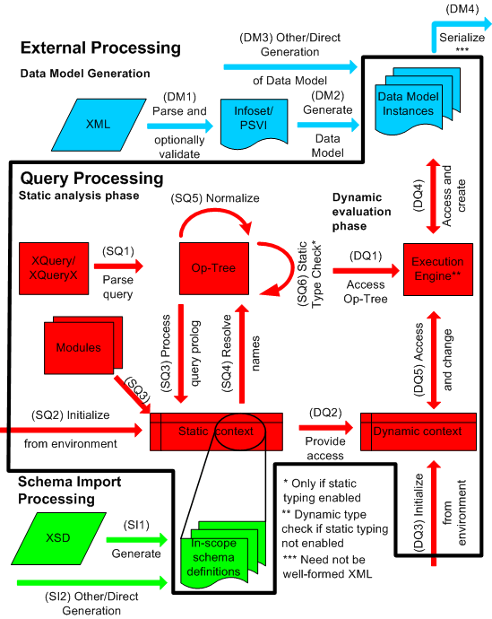
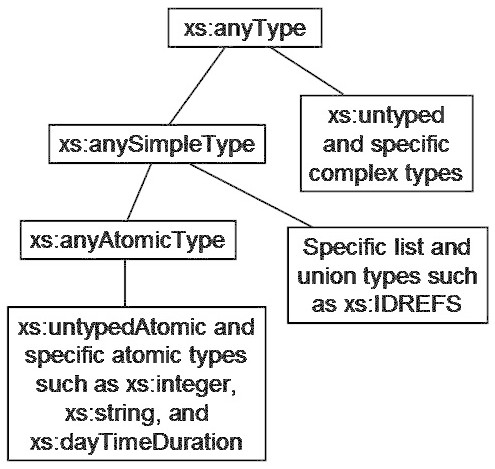

1 まえがき
XMLを用いて蓄積されたり、交換されたり、表現
されている情報の量が増えており、XMLデータ源に対してうまく問合せを
行う機能がますます重要になっている。XMLの素晴らしい利点の一つは、 種々のデータ源から得られる多くの異なる種類の情報を表現する際の
柔軟性である。この柔軟性を活用するため、XML問合せ言語は、これらの 種々のデータ源から情報を検索したり、その情報を解釈する機能を
用意しなければならない。
XQueryは、W3C XML Queryワーキンググループ [XML Query 1.0 Requirements]によって認識された要求や
[XML Query Use Cases]にある利用例に応えるように設計されている。
この言語は、問合せが簡潔で、容易に理解できるように設計されている。 また、広範囲のXML情報源に問合せが行えるよう、充分な柔軟性も
持っている。W3C XML Queryワーキンググループでは、非XML形式の
問合せ構文とXMLによる問合せ構文の両方についての要求を認識して いる。XQueryはこれらの要求のうち、最初の2つに応えるように設計
されている。XQueryは、Quilt[Quilt]と呼ばれる
XML問合せ言語に由来している。この言語はさらに、他の多くの言語から 機能を借用している。XPath 1.0 [XPath 1.0], XQL [XQL], XML-QL
[XML-QL], SQL [SQL], OQL
[ODMG] などである。
[Definition: XQueryは、XML文書の抽象
的かつ論理的な構造に適用され、XML文書の表面上の構文には適用されない。こ
の論理的な構造はデータモデルと呼ばれ、[XQuery/XPath Data
Model (XDM)]で定義されている。]
XQueryバージョン1.0はXPathバージョン2.0の拡張である。XPath2.0でもXQuery
1.0でも構文的に正しく、かつ正常に実行される式はすべて、いずれの言語でも同じ結果を返す。これらの言語は非常に密接に関連しているため、これらの言語の文法や言語記述は、一貫性を保つために共通のソースから生成されており、これらの仕様書の編者は密に協力して作業を進めている。
またXQueryは、以下の仕様書に依存しており、密接に関連している。
この文書は[XML
1.0]で用いられているのと同じ基本的なEBNF記法を用いて、XQueryの文法を規定する。特に注釈を加えない限り(A.2
字句構造)、空白は問合せ中では意味を持たない。文法の生成規則は、それが記述している特徴とともに紹介される。また、完全な文法は付録
[A XQueryの文法]で示される。この付録は規定版である。
この文書中の文法の生成規則では、名前を持つ記号には下線を引き、リテラルテキストは二重引用符で囲む。例えば、次の生成規則は関数呼び出しの構文を記述している:
この生成規則は次のように読むべきである:
関数呼び出しは、一つの開き括弧が続く一つのQNameからなる。その開き括弧の次には、省略可能な引数リストが続く。引数リストは(もし存在するならば)1つ以上の式からなり、それらはコンマで区切られる。省略可能な引数リストの次には、1つの閉じ括弧が続く。
この仕様書では、言語処理のいくつかの面について、実装定義または実装依存という言葉で記述している。
この文書はXQueryの動的な意味を規定として定義する。XQueryの静的な意味は[XQuery 1.0 and XPath 2.0 Formal
Semantics]において規定として定義されている。この文書では、例、および「Note:」というラベルの付けられた資料は説明の目的で用意されたものであり、参考(not
normative)である。
2 基本事項
XQueryの基本的な構成ブロックは式である。これは[Unicode]文字(使用されるUnicodeの版は実装定義である。)の列である。この言語には、キーワード、記号、演算数などから構成される様々な種類の式が用意されている。一般的に、式の演算数は別の式である。XQueryでは、式は完全に一般的な入れ子であってもよい。(しかし、純粋な関数型言語とは異なり、変数の定義が新しい節点の構成からなっているならば、その変数への代入は許されない。)
Note:
この仕様書では、[Unicode]文字の文字列の文字符号化方式に関して、何も仮定しないし、何も要求しない。
XMLと同様に、XQueryは大文字小文字を区別する言語である。XQueryのキーワードは小文字を用い、かつ予約されていない。すなわち、XQuery式に出現する名前はXQuery言語のキーワードと同じであってもよい。ただしA.3
予約済関数名に挙げられている接頭語なし関数名を除く。
[Definition:
データモデルでは、値は常に列である。] [Definition: 列は0個以上の項目の順序付きコレクションである。] [Definition: 項目は原子値か節点である。] [Definition:
原子値は[XML
Schema]で定義される原子型の値空間に含まれる値である。] [Definition: 節点は[XQuery/XPath Data Model
(XDM)]で定義されている節点の種類のいずれかのインスタンスである。]
各節点は唯一の節点識別性、1つの型付けされた値、そして1つの文字列値を持つ。これに加え、いくつかの節点は名前を持つ。節点の型付けされた値は0個以上の原子値からなる列である。節点の文字列値はxs:string型の値である。節点の名前はxs:QName型の値である。
[Definition:
ただ一つの項目しか含まない列を単一値列という。]項目は、その項目を含む単一値列と同一である。列が入れ子になることは決してない。例えば1,
(2, 3), () という値を一つの列に結合した結果は (1, 2, 3)になる。[Definition: 0個の項目を含む列を空列という。]
[Definition:
XDMインスタンスという用語は値という用語と同義であり、データモデル中の節点や原子値からなる制約なしの列を表す。]
XQueryにおける名前はQNameと呼ばれ、[XML
Names]中の文法に従う。[Definition:
字句としては、QNameは、省略可能な名前空間接頭辞1つと局所名1つからなる。名前空間接頭辞があるなら、局所名と名前空間接頭辞はコロンで区切られる。]
字句としてのQNameは、静的既知名前空間[err:XPST0081]を用いて名前空間接頭辞を名前空間URIに解決することにより、展開済QNameに変換することができる。
[Definition:
展開済QNameは、省略可能な名前空間URIと局所名からなる。また展開済QNameは、元の名前空間接頭辞を(もしあるなら)保存し、展開済QNameを文字列に型変換することを可能とする。]名前空間URIの値は、[XML
Schema]中のxs:anyURIのためのルールに従って、空白に関して正規化される。2つの展開済QNameが等しいとは、それらの名前空間URIが等しく、かつそれらの局所名が等しいときである(それらの名前空間接頭辞が等しくなくてもよい)。名前空間URIと局所名はコード位置に基づいて比較され、それ以上の正規化は行われない。
ある名前空間接頭辞は XQuery
であらかじめ宣言されており、固定された名前空間URIに束縛されている。これらの名前空間接頭辞は以下の通りである。
-
xml = http://www.w3.org/XML/1998/namespace
-
xs = http://www.w3.org/2001/XMLSchema
-
xsi = http://www.w3.org/2001/XMLSchema-instance
-
fn = http://www.w3.org/2005/xpath-functions
-
local =
http://www.w3.org/2005/xquery-local-functions (4.15 関数宣言を見よ。)
上のリスト中の接頭辞に加え、この文書では接頭辞errを名前空間URIhttp://www.w3.org/2005/xqt-errorsを表すものとして用いる
(2.3.2
エラーの識別と報告を見よ)。この名前空間接頭辞はあらかじめ宣言されてはおらず、この文書中での使用は参考である。
要素節点は有効範囲内名前空間と呼ばれる性質を持つ。[Definition:
要素節点の有効範囲内名前空間性質は、名前空間束縛の集合である。それぞれの名前空間束縛は名前空間接頭辞とURIを関連づけており、したがって有効範囲内名前空間は、その要素の有効範囲内でQNameを解釈するときに用いることのできる名前空間接頭辞の集合を定義する。ある要素が与えられると、名前空間束縛のうち1つは空の接頭辞を持っていてもよい。この名前空間束縛のURIは、その要素の有効範囲におけるデフォルト名前空間である。]
[Definition:
この仕様書では、URIという用語は、[RFC3986]で定義され[RFC3987]で新しい名前IRIとして拡張されたUniversal Resource
Identifierを表す。] ただし、IRIよりもURIという用語を好んで残している。"Base
URI"のように、すべてのXML関連の仕様書で定義され、また参照されてきた概念に新しい名前を与えることを避けるためである。
2.1 式文脈
[Definition:
ある式に対する式文脈は、その式の結果に影響を与えうるすべての情報からなる。] この情報は静的文脈と動的文脈という2種類に分けられる。
2.1.1
静的文脈
[Definition:
式の静的文脈は、その式の評価よりも静的解析において有効である情報である。] この情報は、式が静的エラーを含むかどうか決定するのに用いることができる。もし式の解析が、静的文脈中の値を割り当てられていない構成要素に依存するならば、静的エラーが発生する [err:XPST0001]。
静的文脈の構成要素を以下にまとめる。有効範囲を管理したり、これらの構成要素を初期化するルールは、C.1
静的文脈の構成要素にある。
-
[Definition: XPath
1.0互換モード。この構成要素は、XPath 2.0
を部分集合として含むようなすべてのホスト言語で設定されなければならない。この構成要素により、XPath 1.0
との互換性のためのルールが有効であるかどうかを示す。XQuery
では、この構成要素の値をfalseに設定している。]
-
[Definition:
静的既知名前空間。これは、組(接頭辞,
URI)の集合であり、与えられた式の静的処理の間分かっているすべての名前空間を定義している。] URIの値は[XML
Schema]中のxs:anyURI型のためのルールに従って、空白に関して正規化される。有効範囲内名前空間と静的既知名前空間の違いに注意せよ。前者は要素節点の動的性質であり、後者は式の静的性質である。
いくつかの名前空間はあらかじめ定義されている。付加的な名前空間を静的既知名前空間に加えることができる。これは、前書き中の名前空間宣言による方法や、直接要素構成子中の名前空間定義属性による方法がある。
-
[Definition:
デフォルト要素/型名前空間。これは名前空間URIか"none"である。名前空間URIは、もしあれば、接頭辞のないQNameのうち要素や型名が期待される場所に出現するもののために用いられる。]
URIの値は、[XML
Schema]中のxs:anyURI型のためのルールに従って、空白に関して正規化される。
-
[Definition:
デフォルト関数名前空間。これは名前空間URIか"none"である。名前空間URIは、もしあれば、接頭辞のないQNameのうち関数名が期待される場所に出現するもののために用いられる。]
URIの値は、[XML
Schema]中のxs:anyURI型のためのルールに従って、空白に関して正規化される。
-
[Definition:
有効範囲内スキーマ定義。これは、式の処理の間有効範囲内にあるすべての要素定義、属性定義、およびスキーマ定義を表す総称的用語である。]
次の3つの部分を含む。
-
[Definition: 有効範囲内スキーマ型。各スキーマ型定義は、
展開済QName
(名前付けされた型に対して) か実装依存の型識別子
(無名型に対して)のいずれかで識別される。有効範囲内スキーマ型は2.5.1 既定義スキーマ型で述べられる既定義スキーマ型を含む。
もしスキーマ輸入機能が支援されていれば、有効範囲内スキーマ型には、輸入されたスキーマ中にある型定義がすべて含まれる。
]
-
[Definition:
有効範囲内要素定義。各要素定義は、展開済QName (最上位要素定義に対して)か実装依存の要素識別子
(局所要素定義に対して)のいずれかで識別される。もしスキーマ輸入機能が支援されていれば、有効範囲内要素定義には、輸入されたスキーマ定義中にある要素定義がすべて含まれる。]
要素定義は、その要素の置換グループの加入に関する情報を含む。
[Definition: 置換グループは[XML Schema]第1部,
2.2.2.2節で定義されている。直観的には、与えられた要素(先導要素という)を先頭とする置換グループは、スキーマ妥当性検証の結果に影響を与えることなく先導要素に対して置換することのできる要素集合からなる。]
-
[Definition: 有効範囲内属性定義
各属性定義は展開済QName (最上位属性定義に対して) か実装依存の属性識別子
(局所属性定義に対して)のいずれかで識別される。もしスキーマ輸入機能が支援されていれば、有効範囲内属性定義には、輸入されたスキーマ中にある属性定義がすべて含まれる。]
-
[Definition: 有効範囲内変数。これは組
(展開済QName, 型) の集合であり、式中で参照可能な変数の集合を定義する。展開済QNameは変数名、型はその変数の静的型である。]
前書き中の変数定義は有効範囲内変数に加えられる。 変数を束縛する式
(let式, for式,
some式, every式など)は、その式の部分式の有効範囲内変数を新しく束縛された変数とその型によって拡張する。関数定義中では、有効範囲内変数は関数の引数の名前と型によって拡張される。
変数の静的型は、問合せ内で宣言されていてもよいし、(静的型付け機能が有効になっているなら) [XQuery 1.0 and XPath 2.0 Formal
Semantics]で記述されている静的型推論ルールによって推論されてもよい。
-
[Definition:
文脈項目の静的型。この構成要素は、与えられた式の有効範囲内における、その文脈項目の静的型を定義する。]
-
[Definition:
関数のシグネチャ。この構成要素は、式中で呼び出し可能な関数の集合を定義する。関数はそれぞれ、その展開済QNameと次数 (引数の数)
によって一意に識別される。] 名前と次数に加え、関数のシグネチャはそれぞれ、その関数の引数と結果の静的型を指定する。
関数のシグネチャは、構成子関数のシグネチャを含む。これについては3.12.5 構成子関数で議論する。
-
[Definition: 静的既知照合順序。これは組
(URI, 照合順序)の実装定義の集合である。問合せや式の処理に用いることのできる照合順序の名前を定義する。] [Definition:
照合順序は、文字列とURIを比較し、その延長として、順序づける方法の仕様である。照合順序のより完全な定義については[XQuery
1.0 and XPath 2.0 Functions and Operators]を見よ。]
-
[Definition:
デフォルト照合順序。これは、明示的に照合順序が指定されていないときに、静的既知照合順序に含まれる照合順序の一つを、xs:string型とxs:anyURI型
(およびこれらから導出される型) の値を比較したり順序付けしたりする関数や演算子で用いられる照合順序として識別する。]
-
[Definition: 構成モード。
構成モードは、要素や文書節点の構成子の振舞いを決定する。構成モードがpreserveであれば、構成された要素節点の型はxs:anyTypeであり、節点構成において複製された属性節点や要素節点はすべて、元の型を保存する。構成モードがstripであれば、構成された要素節点の型はxs:untypedであり、節点構成において複製された要素節点はすべて型xs:untypedを受け取り、節点構成において複製された属性節点はすべて型xs:untypedAtomicを受け取る。]
-
[Definition: 順序付けモード。
順序付けモードはorderedかunorderedという値を取り、ある種の経路式, union式,
intersect式, except式, order
by節を持たないFLWOR式などによって生成される結果列の順序付けに影響を与える。]
詳細は、これらの式の記述の中で与える。
-
[Definition:
空列のデフォルト順序。 この構成要素は、FLWOR式中のorder
by節中の順序付けキーとしての空列や値NaNの処理を制御する。これについての記述は3.8.3
Order By 節と Return 節にある。]
この値はgreatestまたはleastであってもよい。
-
[Definition:
境界空白ポリシー。この構成要素は、直接要素構成子による境界空白の処理を制御する。これについての記述は3.7.1.4 境界空白にある。]
この値はpreserveまたはstripであってもよい。
-
[Definition:
名前空間複製モード。この構成要素は、すでにある要素節点が要素構成子によって複製されるときに割り当てられる名前空間束縛を制御する。これについての記述は3.7.1
直接要素構成子にある。この値は2つの部分からなる:
preserveまたはno-preserve、そしてinheritまたはno-inheritである。]
-
[Definition: 基底URI。 これは絶対URIであり、
(例えばfn:resolve-uri関数によって)相対URIを解決するのに必要なときに用いられる。]
URIの値は[XML
Schema]中のxs:anyURI型のためのルールに従って、空白に関して正規化される。
-
[Definition: 静的既知文書。
これは文字列から型への写像である。文字列は資源の絶対URIを表しており、fn:doc関数を用いて得られる可能性がある。型は、与えられたURIをリテラル引数とするfn:doc呼び出しの静的型である。]
fn:docの引数が静的既知文書にはない文字列リテラルであるとき、fn:docの静的型はdocument-node()?である。
Note:
静的既知文書の目的は静的型情報を提供することであり、どの文書が利用可能かを決定することではない。URIが静的既知文書中になくても、fn:docを用いてアクセスできる。
-
[Definition:
静的既知コレクション。これは文字列から型への写像である。文字列は資源の絶対URIであり、fn:collection関数を用いて得られる可能性がある。型は節点列型であり、このURIを引数としてfn:collection関数を呼び出した結果となる。]
fn:collectionの引数が静的既知コレクションにない文字列リテラルであるとき、fn:collectionの静的型はnode()*である。
Note:
静的既知コレクションの目的は静的型情報を提供することで、どのコレクションが利用可能かを決定することではない。URIが静的既知コレクションになくても、fn:collectionを用いてアクセスできる。
-
[Definition:
静的既知デフォルトコレクション型。これは節点列型であり、fn:collection関数を引数なしで呼び出した結果となる。]
実装によって他の値に初期化されない限り、静的既知デフォルトコレクション型の値はnode()*である。
2.1.2 動的文脈
[Definition:
式の動的文脈は、その式が評価されているときに利用可能な情報として定義される。] 式の評価が動的文脈のうち値が割り当てられていない部分に依存するとき、動的エラーが発生する [err:XPDY0002]。
動的文脈の個々の構成要素を以下にまとめる。これらの構成要素の意味を支配する詳細なルールはC.2
動的文脈の構成要素にある。
動的文脈は静的文脈の部分要素すべて、および以下に列挙する追加構成要素を含む。
[Definition:
動的文脈の最初の3つの構成要素
(文脈項目、文脈位置、文脈サイズ)を、式の焦点という。]
焦点を用いると、処理器はどの項目が式によって処理されているかを追跡することができる。
ある種の言語の構成要素、すなわち経路式 E1/E2と述語
E1[E2]は、部分式の評価の際に新しい焦点を作成する。これらの構成要素では、E1を評価した結果の列中の項目それぞれに対し、E2が1回評価される。
E2が評価されるたびに、異なる焦点で評価が行われる。E2を評価する焦点を内部焦点、E1を評価する焦点を外部焦点という。内部焦点は、E2が評価されている間のみ存在する。この評価が終了するとき、含むほうの式の評価が元の焦点のまま行われる。
-
[Definition:
文脈項目は現在処理している項目である。項目は原子値か節点である。][Definition:
文脈項目が節点であるとき、文脈節点と呼ぶこともできる。]
文脈項目は1つのドット(.)からなる式によって得られる。式E1/E2またはE1[E2]が評価されるとき、E1を評価して得られる列中の項目それぞれが、E2の評価に対する内部焦点の文脈項目となる。
-
[Definition:
文脈位置は、現在処理されている項目列中での文脈項目の位置である。]文脈項目が変化するたび、文脈位置も変化する。焦点が定義されているとき、文脈位置の値は0より大きい整数である。式fn:position()によって文脈位置が返される。式E1/E2またはE1[E2]が評価されるとき、E2の評価に対する内部焦点での文脈位置は、E1を評価して得られる列中の文脈項目の位置である。列の最初の項目の位置は常に1である。文脈位置は常に、文脈サイズより小さいか等しい。
-
[Definition:
文脈サイズは、現在処理されている項目列に含まれる項目数である。]
文脈サイズの値は常に0より大きい整数である。式fn:last()によって文脈サイズが返される。式E1/E2またはE1[E2]が評価されるとき、E2の評価に対する内部焦点の文脈サイズは、E1の評価で得られる列に含まれる項目数である。
-
[Definition: 変数の値。これは、組 (展開済QName,
値)の集合である。式の静的文脈中の有効範囲内変数と同じ展開済QNameを含む。展開済QNameは変数名であり、値はその変数の動的値である。動的値には、その動的型が含まれる。]
-
[Definition: 関数の実装。関数のシグネチャに含まれる各関数は、引数型のインスタンスから結果型のインスタンスへ写像する関数を利用可能にする関数の実装を持つ。利用者定義関数については、関数の実装はXQuery式である。組み込み関数や外部関数については、関数の実装は実装依存である。]
-
[Definition:
現在のdateTime。この情報は問合せの処理の間のある実装依存の瞬間を表す情報であり、明示的なタイムゾーンを含む。これはfn:current-dateTime関数によって検索することができる。もし問合せの実行の最中に複数回呼び出されると、この関数は常に同じ結果を返す。]
-
[Definition: 暗黙タイムゾーン。これは、タイムゾーンを持たない
data, time,
dateTimeなどの値が比較演算や算術演算の中で用いられるときに用いられるタイムゾーンである。暗黙タイムゾーンはxs:dayTimeDuration型の実装定義の値である。タイムゾーンの正しい値の範囲については[XML
Schema]を見よ。]
-
[Definition:
利用可能文書。これは、文字列から文書節点への写像である。文字列は資源の絶対URIを表す。文書節点は、データモデルを用いて資源を表現する木における根である。fn:doc関数をURIに適用すると、文書節点が返ってくる。]
利用可能文書の集合は静的既知文書の集合に限定されず、また空集合でもよい。
-
[Definition:
利用可能コレクション。これは、文字列から節点列への写像である。文字列は資源の絶対URIを表す。節点列は、そのURIを引数として与えたときのfn:collection関数の結果を表す。]
利用可能コレクションの集合は静的既知コレクションの集合に限定されず、また空集合でもよい。
-
[Definition:
デフォルトコレクション。これは、fn:collection関数を引数なしで呼び出したときに結果として得られる節点列である。]
デフォルトコレクションの値は実装によって初期化されてもよい。
2.2
処理モデル
XQueryはデータモデルと式文脈に基づいて定義される。

図1: 処理モデルの概要
図1は、この後詳細を述べる処理段階の概要を図で示したものである。このうちいくつかの段階は完全にXQueryの範疇外である。図1では、これらの段階は言語の境界を表す実線の外側、外部処理とラベル付けされた領域に描かれている。外部処理域には、問合せが行われるデータを表現するXDMインスタンスの生成(2.2.1
データモデルの生成を見よ)、スキーマの輸入処理(2.2.2
スキーマの輸入処理を見よ)、直列化(2.2.4
直列化を見よ)などが含まれる。言語の境界の内側は問合せ処理域と呼ばれ、静的解析段階と動的評価段階(2.2.3 式の処理を見よ)が含まれる。
問合せ処理域上の無矛盾性制約は2.2.5 無矛盾性制約で定義される。
2.2.1 データモデルの生成
問合せが処理できるようになる前に、式の入力データがXDMインスタンスとして表現されなければならない。この処理はXQueryの範囲外で発生し、そのため図1ではこの処理を外部処理域に置いている。以下にXML文書をXDMインスタンスに変換する段階を示す。
-
文書が、XML情報集合([XML
Infoset]を見よ)を生成するXMLパーザによって解析される。解析された文書は1つ以上のスキーマに対して妥当性検証されてもよい。この処理は[XML
Schema]に記述されているが、この結果、検証後情報集合(Post-Schema Validation
Infoset,
PSVI)と呼ばれる抽象情報構造が得られる。もし文書に関連するスキーマがなければ、文書の情報集合が保存される。(図1のDM1を見よ。)
-
情報集合もしくはPSVIが、[XQuery/XPath Data Model
(XDM)]に書かれている処理によってXDMインスタンスに変換される。(図1のDM2を見よ。)
上に述べた段階はXDMインスタンスがどのように構築されるかという一例を提供している。XDMインスタンスは関係データベースから直接合成されるかもしれないし、他の方法(図1のDM3を見よ)で構築されるかもしれない。XQueryはデータモデルに基づいて定義されるが、XDMインスタンスがどのように構築されるかについては、制約を何も置かない。
[Definition: XDMインスタンス中の要素節点や属性節点はそれぞれ型注釈([XQuery/XPath
Data Model
(XDM)]ではtype-name性質として参照されている)を持つ。節点の型注釈はスキーマ型であり、節点の文字列値と型付けされた値の関連を記述する。]
XDMインスタンスが3.3 Construction
from a PSVIDMに述べられているように妥当なXML文書から導出されたならば、要素節点や属性節点の型注釈はスキーマ妥当性検証から導出される。
XQueryは要素節点や属性節点の型注釈に直接アクセスする方法は用意しない。
属性の値は属性節点によって直接表される。型が不明な属性節点(スキーマのない文書に出現する場合など)には型注釈
xs:untypedAtomicが与えられる。
要素の値はその要素の子たちによって表される。子にはテキスト節点やほかの要素節点が含まれてもよい。要素節点の型注釈は、その子テキスト節点の値がどのように解釈されるかを示す。妥当性検証されていない要素(スキーマのない文書中に出現する場合など)には、xs:untypedというスキーマ型が注釈付けされる。妥当性検証されて部分的に妥当だとされた要素にはxs:anyTypeというスキーマ型が注釈付けされる。もし要素がxs:untypedと注釈付けされているなら、そのすべての子孫要素節点もまたxs:untypedと注釈付けされる。しかし、もし要素がxs:anyTypeと注釈付けされているなら、その子孫要素節点のいくつかには、より詳細な型注釈が付けられるかもしれない。
2.2.3 式の処理
XQueryは、静的解析相と動的評価相という2つの処理相を定義する(図1を参照)。静的解析相では、静的エラー、動的エラー、または型エラーが発生することがある。動的評価相では、動的エラーと型エラーのみ発生することがある。これらの種類のエラーは2.3.1 エラーの種類で定義される。
それぞれの相について、実装はこの文書の仕様に従う結果を得る戦略やアルゴリズムを自由に使ってよい。
2.2.3.2 動的評価相
[Definition:
動的評価相は式の値を計算する相である。] 動的評価相は静的解析相が完了した後に行われる。
動的評価相は、静的解析相でエラーが検出されなかった場合に限り行うことができる。もし静的型付け機能が機能しているなら、静的解析の間にすべての型エラーが検出され、動的評価相の実行を妨げるのに役立つ。
動的評価相は、評価している式の演算木(段階DQ1)、入力データ(段階DQ4)、動的文脈(段階DQ5)に依存し、さらに外部環境(段階DQ3)や静的文脈(段階DQ2)から情報を引き出す。動的評価相は新しいデータモデル値を生成したり(段階DQ4)、値を変数に束縛するなどによりそれを動的文脈に展開してもよい(段階DQ5)。
[Definition:
動的型は、計算されるそれぞれの値に対応づけられる。値の動的型は、その値を計算した式の静的型よりも詳細であってもよい(例えば、式の静的型がxs:integer*、すなわち0以上の整数の列であっても、評価時には、その式の値が動的型xs:integer、すなわちただ1つの整数であってもよい)。]
もし式の演算数が、その演算数に適切でない動的型を持っていると分かったならば、型エラーが発生する [err:XPTY0004]。
式が評価される前に静的型付けで多くの型エラーがとらえられるとしても、静的解析では検出されなかったエラーが評価時に発生することはあり得る。例えば、式に文字列から整数への型変換が含まれているかもしれない。これは静的には正しい。しかし、もし実行時の実際の文字列の値が整数に変換できないならば、動的エラーが発生する。同様に、式中で静的型がxs:untypedAtomicであるような値に算術演算子を適用しているかもしれない。これは静的エラーではない。しかし実行時では、もしその値が数型にうまく変換できなければ、動的エラーが発生する。
静的型付け機能が有効であるとき、式の静的解析において型エラーを発生させることは、たとえある入力に対してその式が正常に実行されるとしても、可能である。例えば、引数として要素を要求する関数が式に含まれており、静的解析相でその関数の引数の静的型が省略可能な要素であると推論されたとする。この場合は、たとえ省略可能な要素が存在するような入力データに対してこの関数呼び出しが正常に行われるとしても、型エラーとして扱われ、評価が妨げられる。
2.2.5 無矛盾性制約
XQueryが明確に定義されるためには、入力となるXDMインスタンス、静的文脈、動的文脈が互いに無矛盾でなければならない。以下に列挙する無矛盾性制約はXQueryの実装が正しく動作するための前提条件である。これらの無矛盾性制約をどのように強制させるかはこの仕様書の範囲外である。この仕様書は、これらの制約が1つ以上満たされない条件の下での問合せの結果を定義しない。
無矛盾性制約のいくつかではデータモデルスキーマという用語を用いる。[Definition: XDMインスタンス中のある節点に対して、データモデルスキーマは、その節点の型注釈が導出されたスキーマとして定義される。]
スキーマ妥当性検証以外の処理によって構成された節点に対しては、データモデルスキーマは、単に、その節点の型注釈によって表現されるスキーマ型定義から成る。
2.3 エラー処理
2.3.1
エラーの種類
2.2.3
式の処理で述べたように、XQueryは入力データに依存しない静的解析相と入力データに依存する動的評価相を定義する。エラーはいずれの相でも発生してよい。
[Definition:
静的エラーは静的解析相で検出されなければならないエラーである。構文エラーは静的エラーの例である。]
[Definition:
動的エラーは動的評価相で検出されなければならず、静的解析相で検出されてもよいエラーである。数値あふれは動的エラーの例である。]
[Definition:
型エラーは静的解析相、動的評価相のいずれでも発生してもよい。静的解析相では、式の静的型とその式の出現する文脈から期待される型とが一致しないとき、型エラーが発生する。動的評価相では、値の動的型とその値の出現する文脈から期待される型とが一致しないとき、型エラーが発生する。]
静的解析相の結果は、成功か、1つ以上の型エラー、静的エラー、静的に検出される動的エラーのいずれかである。動的評価相の結果は、結果の値か、1つの型エラーか、1つの動的エラーのいずれかである。
1つ以上のエラーが現れたり、エラー条件がこの仕様で定義される1つ以上のエラーの範囲内に入ったりすると、これらのエラーの空でない集合が報告されてもよい。
静的解析相では、静的型付け機能が機能しており、かつ()もしくはdata(())以外の式に割り当てられる静的型がempty-sequence()であるならば、静的エラーが発生する [err:XPST0005]。これにより、有効範囲内スキーマ定義に存在しない要素や属性を問合せが参照している場合がとらえられる。これは綴りの誤りの可能性があるためである。
静的型付け機能が機能しているかどうかに関わらず、もし静的解析相で、ある式が評価されると型エラーや動的エラーを発生する必要がある、ということを実装が決定できるならば、実装は静的解析相でエラーを通知してもよい(しかし通知することを要求されるわけではない)。しかし、fn:error()関数は静的解析相では評価されてはならない。
[Definition: 静的エラー、動的エラー、型エラーに加えて、XQueryの実装は、静的解析相、動的評価相のいずれかで警告を発生してもよい。警告が発生する状況や、警告を処理する方法は実装定義である。]
この仕様書で定義されるエラーに加えて、実装は、この仕様書の範囲外の理由により動的エラーを発生してもよい。例えば、さまざまなオブジェクトの最大数や最大サイズに制限があってもよい。このような制限や、これらを越えることによる結果は実装依存である。
2.3.2 エラーの識別と報告
この仕様書で定義されるエラーは、err:XXYYnnnnという形式を持つQNameで識別される。ここで:
-
errはXPathおよびXQueryのエラーのための名前空間、http://www.w3.org/2005/xqt-errorsを表す。この名前空間接頭辞errの束縛はこの文書内の便宜上用いており、参考である。
-
XXは、そのエラーが定義されている言語を表しており、次の符号を用いる。
-
YYはエラーの分類を示し、次のような符号化を用いる:
-
STは静的エラーを表す。
-
DYは動的エラーを表す。
-
TYは型エラーを表す。
-
nnnnは一意に決まる数字コードである。
Note:
XQueryのバージョンが変わっても、XPathとXQueryのエラーのための名前空間URIが変わることは期待されない。しかし、この名前空間の内容は、エラー定義が追加されることによって拡張されてよい。
XQuery処理器がエラー情報を外部環境に報告する方法は実装定義である。
エラーは、エラーQNameから導出されるURI参照によって次のように表すことができる。名前空間URINSと局所名LPを持つエラーは、URI参照NS#LPで表すことができる。例えば、QNameがerr:XPST0017であるエラーはhttp://www.w3.org/2005/xqt-errors#XPST0017で表せる。
Note:
エラーを識別するコードとともに、実装は、エラーの場所やエラーが検出された処理相などの付加的な情報を返してもよい。実装が付加的な情報を返すことを選択する場合は、この情報を返すのに用いられる機構は実装定義である。
2.3.3 動的エラーの処理
この文書で示した以外に、もし式の演算数が動的エラーを発生するならば、その式もまた動的エラーを発生する。もし式が正常に値を返すことも動的エラーを発生することもできるのであれば、実装は、値を返すか動的エラーを発生するか選択してよい。例えば、論理式expr1
and
expr2は、いずれかの演算数がfalseを返すならば値falseを返してもよい。またいずれかの演算数が動的エラーを発生すれば動的エラーを発生してもよい。
もし式中の1つ以上の演算数がエラーを発生するならば、実装は、どのエラーがその式によって発生するかを選択してよい。例えば、次の式を考える:
($x div $y) + xs:decimal($z)
部分式($x div
$y)とxs:decimal($z)はともにエラーを発生するかもしれない。実装は式"+"によってどちらのエラーが発生するか選択してよい。いったん1つの演算数がエラーを発生すれば、実装が他の演算数を評価することは要求されないが、評価してもよい。
[Definition:
識別可能なQNameに加え、動的エラーは、説明的な文字列や、エラー値と呼ばれる1つ以上の付加的な値を伴ってもよい。]
実装は、アプリケーションで定義されるエラー処理器がエラー値を処理し診断メッセージを生成する機構を提供してもよい。
動的エラーは組み込み関数や演算子によって発生してもよい。例えばdiv演算子は、その演算数がxs:decimal値でかつ第2演算数が0に等しいならば、例外を発生する。組み込み関数や演算子によって発生するエラーは[XQuery
1.0 and XPath 2.0 Functions and Operators]で定義されている。
動的エラーは明示的にfn:error関数を呼び出すことによっても発生する。この関数はエラーを1つ発生させるだけで、値は返さない。この関数は[XQuery
1.0 and XPath 2.0 Functions and
Operators]で定義されている。例えば、次に示す関数呼び出しは動的エラーを発生する。発生する動的エラーは、エラーを識別するQName、説明的な文字列、診断値からなる(接頭辞appが、アプリケーションで定義されるエラーコードを含む名前空間に束縛されていると仮定している)。
fn:error(xs:QName("app:err057"), "Unexpected value", fn:string($v))
2.3.4
エラーと最適化
実装が異なると、式を評価したり最適化したりする方法として異なるものを選ぶかもしれないので、この節で述べるように、動的エラーの検出や報告についてのある側面は実装依存である。
実装は常に、演算子の演算数をどのような順序で評価しても自由である。
場合によっては、処理器は、形式的な式の意味によって内含されるすべてのデータにアクセスすることなく、式の結果を決定することができる。例えば、選別式の形式的記述では、$s[1]は列$sのすべての項目を検査し、述語position()=1を満たす項目をすべて選ぶことによって評価されるべきであると推奨している。実際は、多くの実装は、列の最初の項目を取ってきて終了してもこの式を評価することができる、と認識している。もし$sが//book[author
eq
'Berners-Lee']と言った式で定義されるならば、この戦略は大きな文書全体の走査を避け、性能を大幅に改善するかもしれない。しかし、この戦略の結果として、式の評価が早く終了してしまうと、式の意味に厳密に従っていれば検出できたであろう動的エラーや型エラーが全く検出できないかもしれない。この例では、もし1個以上のauthor部分要素を持つbook要素が入力中にあると、このようなエラーが発生するかもしれない。
エラーを検出しないコストに関して、処理器がデータへのアクセスを最適化するかもしれない外延は、次のルールで定義される。
演算数(部分式)にEを持つ式Qを考えよう。一般にはEの値は列である。列の評価の中間段階では、その項目のいくつかは分かっているが、残りは未知である。もし、評価の中間段階で、処理器がQを評価した結果として2つの可能性しかない、すなわち値Vかエラーの可能性しかないと証明できるならば、処理器は、演算数Eの残りの項目を評価することなく結果Vを出してもよい。この目的のために、2つの項目の節点と値がともに同一であるならば、2つの値は同じ結果を表現していると考えられる。ここで、節点が同じ識別子を持っているならば、それらの節点は同一である。また、2つの値が等値でかつ全く同じ型を持っているならば、それらの値は同一である。
このルールには例外がある。もし処理器が演算数 E を (その全体であれ部分的にであれ)
評価するならば、処理器は、Eの演算数の実際の値が濃度に関するどんな制約にも反しないことを証明する必要がある。例えば、式$e
eq
0は、$eの値が2個以上の項目を含んでいれば、型エラーという結果になる。処理器は、$eの値の最初の項目を評価した後、可能な結果は、値trueか、濃度の違反による型エラーだけである、と決定することは許されない。$eの値が1個以下の項目しか含まないことを証明しなければならない。
このルールは、式の演算数として考えられるすべての組み合わせに適用される。したがって、式が2つの演算数E1とE2を持っているならば、上のルールを満たすそれぞれの列のどんな例を用いて評価されてもよい。
このルールは連鎖する。AがBの演算数で、BがCの演算数であるならば、処理器はCの値を決めるために充分な数のBの例だけを評価すればよく、さらにBの例を決めるために充分な数のAの例だけを評価すればよい。
これらのルールの効果として、処理器は、列中のあるところより先の項目が、エラーを発生させるかもしれないということ以外に結果に影響を及ぼさないと証明できれば、直ちにその先の項目の検査を止めても構わない。例えば、処理器は、2つの列から等しい値の2つ組を見つければ、直ちにS1
= S2の結果としてtrueを返してもよい。
これらのルールのもう一つの結果として、列中のどの項目も式の結果に貢献しないとき、処理器はその列のどの部分も評価する義務を負わない。しかし、繰り返すが、処理器は要求される濃度の検査は、せずに済ますことができない。対象とする文脈で空列が許されなければ、処理器は、演算数が空列でないことを保証しなければならない。
例:
-
下の例において、実装が$expr1によって返される項目のうち少なくとも1つが47という値を持つと知ることができる(例えば索引を用いて)ならば、some式の結果としてtrueを返すことが許される。このとき、$expr1によって返される他の項目に、評価するとエラーを発生させるものがあるか探す必要はない。
some $x in $expr1 satisfies $x = 47
-
以下の例において、実装が、値が47であるような子節点idを持つproduct要素節点を見つけられれば(例えば索引を用いて)、経路式の結果としてこれらの節点を返すことが許される。このとき、他のproduct節点に、整数を値としないid子節点があるためにエラーを発生させるものがあるか探す必要はない。
最適化など、さまざまな理由により、実装は式を等価な式に書き換えることは自由である。エラーを発生させるか発生させないかという点を除いて、等価な式を評価した結果は、元の式を評価した結果と等しくなければならない。式の書換えを以下の例で説明する。
-
式//part[color eq
"Red"]を考えよう。実装はこの式を//part[color = "Red"][color eq
"Red"]と書き換えることを選択するかもしれない。この実装では、この式を次のように処理するかもしれない。まず part
に関する索引を color によって引き、color が Red であるような part
すべてを素早く見つけ、"=" 述語を処理する。次にこれらの part それぞれについて
"eq" 述語を処理し、確かに一つの color
しか持っていないか検査する。結果は以下のようになる。
-
Redという1つの color しか持っていない part が返される。
-
ある part が Red という color と他の color を共に持っていれば、エラーが発生する。
-
Red という color を持たず Red でない color を複数持つ part
が存在してもエラーは引き起こさない。
-
以下の例の式は、書かれている順に(すなわち左から右へ)正確に評価されれば、型変換エラーを起こすことはできない。どちらの述語も文脈位置に依存しているので、実装は、(例えば索引を利用することで)よりよい性能を得るために、述語を並び替えることを選択するかもしれない。述語を並べ替えることで、式がエラーを引き起こすかもしれない。
$N[@x castable as xs:date][xs:date(@x) gt xs:date("2000-01-01")]
式の書き換えによって引き起こされる想定外のエラーを避けるために、動的エラーを防ぐために設計されたテストを、条件式またはtypeswitch式を用いて表現するべきである。条件式やtypeswitch式は、実際に選択された分岐中で発生する動的エラーのみ引き起こす。したがって、前の例とは異なり、以下の例では@xがxs:dateに型変換されなくても動的エラーは起こらない。
$N[if (@x castable as xs:date)
then xs:date(@x) gt xs:date("2000-01-01")
else false()]
2.4 概念
この節では、XQuery式の処理で重要な概念をいくつか説明する。
2.4.1
文書順
文書順と呼ばれる順序は、ある問合せの処理中にアクセス可能なすべての節点の間で定義され、1つ以上の木(文書もしくはその一部)から構成されていてもよい。文書順は[XQuery/XPath
Data Model (XDM)]で定義されているが、便宜上その定義をここでも繰り返す。[Definition:
文書順の逆順であるような節点の順序を逆文書順という。]
文書順は全順序である。ただし、節点間の相対順序は実装依存である。[Definition:
直観的には、文書順は直列化されたXML文書中で節点が出現する順序である。] [Definition:
文書順は安定である。ここで安定とは、ある問合せの処理中、2節点間の相対順序が変化しない(たとえこの順序が実装依存であっても)ことを意味する。]
木では、文書順は次の制約を満たす。
-
根節点は最初の節点である。
-
いずれの節点も、その子および子孫のどれよりも前に出現する。
-
属性節点は、それが関連づけられている要素節点のの直後に出現する。属性節点の相対順序は安定であるが実装依存である。
-
兄弟間の相対順序は、親節点の性質children中で出現する順序である。
-
子および子孫は、弟よりも先に出現する。
異なる木の節点間の相対順序は安定であるが実装依存であり、次の制約に従う。与えられた木T1中のある節点が、別の木T2中のすべての節点より前に出現するならば、木T1中のすべての節点が木T2のすべての節点より前に出現する。
2.4.2 原子化
いくつかのXQuery演算子の意味は原子化という処理に依存している。原子化がある値に対して適用されるのは、原子値の列が必要となる文脈でその値が用いられるときである。原子化の結果は、原子値の列か型エラー [err:FOTY0012] のいずれかである。[Definition: 列の原子化は、[XQuery 1.0 and XPath 2.0 Functions and
Operators]で定義されている通り、その列にfn:data関数を実行した結果として定義される。]
便宜上、fn:dataの意味を繰り返す。fn:dataの結果は、入力列中の各項目に以下のルールを適用して生成される原子値の列である。
原子化は以下の式の型を処理するのに用いられる。
-
算術式
-
比較式
-
関数呼び出しと関数からの戻り
-
型変換式
-
さまざまな種類の節点に対する構成子式
-
FLWOR式のorder by節
2.4.3 有効ブール値
ある状況の下では(以下に列挙する)、値の有効ブール値を得る必要がある。[Definition:
ある値の有効ブール値は、[XQuery 1.0 and
XPath 2.0 Functions and
Operators]で定義されているように、その値にfn:boolean関数を適用して得られる結果として定義される。]
便宜上、fn:booleanの動的意味を繰り返す。
-
演算数が空列であれば、fn:booleanはfalseを返す。
-
演算数が、最初の項目が節点であるような列であれば、fn:booleanはtrueを返す。
-
演算数がxs:boolean型もしくはxs:booleanから導出される型の単一値列であれば、fn:booleanは演算数の値を変化せずに返す。
-
演算数がxs:string型、xs:untypedAtomic型、もしくはこれらのいずれかから導出される型の単一値列であれば、fn:booleanは、演算数の値の長さが0の場合はfalseを、そうでない場合はtrueを返す。
-
演算数が数型、もしくは数型から導出される型の単一値列であれば、fn:booleanは、演算数の値がNaNもしくは数として0に等しい場合はfalseを、そうでない場合はtrueを返す。
-
これ以外のすべての場合について、fn:booleanは型エラー
[err:FORG0006]を引き起こす。
Note:
順序付けモードがunorderedであるような問合せに対しては、節点と原子値をそれぞれ1つ以上含む列の有効ブール値は非決定的であってもよい。
列の有効ブール値は、以下のような式の型の処理で暗黙的に計算される。
-
論理式(and, or)
-
fn:not関数
-
FLWOR式のwhere節
-
ある形式の述語。例えばa[b]
-
条件式(if)
-
限量式(some, every)
Note:
有効ブール値の定義は、例えばcast式のようなxs:boolean型への型変換、あるいは引数としてxs:boolean型を期待する関数に値を渡すときには、使わない。
2.4.5
URIリテラル
XQueryの文法のいくつかの箇所で、正当な静的既知絶対URIが要求される。このような箇所は、文法記号URILiteralによって記述される。例えば、URILiteral
は名前空間や照合順序を指定するのに用いられる。これらはいずれも静的に既知でなければならない。
構文的には、URILiteralはStringLiteralに等しい:
すなわち、0個以上の文字の並びであり、一重引用符または二重引用符によって囲まれたものである。しかし、実装は、URILiteralの値の長さが0以外であり、かつxs:anyURIの字句領域に含まれないか、[RFC3986]で定義されている
"相対参照" を表す文字列であるならば、静的エラー [err:XQST0046]を発生させてもよい。
文字列リテラル中のように、既定義実体参照 (例えば
&), 文字参照 (例えば •),
あるいは EscapeQuot や EscapeApos (例えば "")
はすべて、適切な展開を行うことによって置き換えられる。ある種の文字、特にアンパサンドは、既定義実体参照あるいは文字参照を用いてしか表現することができない。
URILiteral は、[XML Schema]中で
xs:anyURI 型に対して定義される空白の正規化に従っている:
この意味するところは、先頭と末尾の空白は除去され、それ以外の空白文字の列はいずれも、空白 (#x20)
文字1つに置き換えられる、ということである。空白の正規化は文字参照の展開の後で行われる。したがって (例えば)
$#xA; として表現されている改行は、空白文字に正規化されることを妨げない。
URILiteral は、[RFC3986]
に定義されているようなパーセント符号化やパーセント復号化に自動的に従うことはない。しかし、基礎 URI に従って URI を解決したり
URI を逆参照したりしようと試みる処理はいずれも、関連する RFC
中で定義されているパーセント符号化や復号化を適用してもよい。
Note:
xs:anyURI型は、[RFC3987]で定義される
Internationalized Resource Identifier (IRI)
の導入を予想して設計されている。[RFC3987]
以下に示すのは、正当な URILiteral の例である。
"http://www.w3.org/2005/xpath-functions/collation/codepoint"
2.5 型
XQueryの型システムは[XML
Schema]に基づいており、[XQuery 1.0 and
XPath 2.0 Formal Semantics]で形式的に定義されている。
[Definition: 列型(sequence type)はSequenceTypeの構文を用いて表現することのできる型である。列型は、XQuery式で型を参照する必要があるときにはいつでも用いられる。列型という用語は、この構文がXQueryの値の型を記述するのに用いられる、ということを示唆している。この値は常に列である。]
[Definition: スキーマ型(schema type)は[XML Schema]の機能([XML
Schema]の組み込み型を含む)を用いて定義された(または定義できる)型である。スキーマ型は要素節点や属性節点の型注釈として用いることができる(ただし、xs:NOTATIONやxs:anyAtomicTypeといった実体化不能型は除く。このような型の場合は、その導出型を用いることができる)。スキーマ型は複合型か単純型のいずれかである。単純型はさらにリスト型、共用体型、原子型に分けられる(これらの用語の定義と説明は[XML
Schema]を見よ)。]
原子型は列型とスキーマ型という種類の間の集合積を表現している。原子型、例えばxs:integerやmy:hatsizeは列型でもありスキーマ型でもある。
2.5.1 既定義スキーマ型
静的文脈中の有効範囲内スキーマ型は、あらかじめ定義されているあるスキーマ型によって初期化される。このスキーマ型には、[XML
Schema]の組み込みスキーマ型が含まれる。これらの組み込みスキーマ型は、名前空間http://www.w3.org/2001/XMLSchemaに属する。この名前空間は既定義名前空間接頭辞xsを持つ。組み込みスキーマ型の例には、xs:integer,
xs:string,
xs:dateなどがある。xs名前空間中の要素や属性の定義は、静的文脈に明示的には含まれていない。
加えて、XQueryの既定義スキーマ型には、名前空間http://www.w3.org/2005/xpath-datatypesで定義されているスキーマ型が含まれる。この名前空間は既定義名前空間接頭辞xdtを持つ。この名前空間中のスキーマ型は[XQuery/XPath
Data Model (XDM)]で定義されている。以下にその概要を示す。
-
[Definition:
xs:untypedは、妥当性検証されていない要素節点、あるいはskipモードで妥当性検証された要素節点の型注釈として用いられる。]
xs:untypedからは既定義スキーマ型は何も導出されない。
-
[Definition:
xs:untypedAtomicは、より詳細な型が割り当てられていないテキストなど、型付けされていない原子データを示すのに用いられる原子型である。]
skipモードで妥当性検証された属性は、データモデル中ではxs:untypedAtomicという型注釈のついた属性節点として表現される。xs:untypedAtomicからは、既定義スキーマ型は何も導出されない。
-
[Definition:
xs:dayTimeDurationはxs:durationから制限によって導出される。xs:dayTimeDurationの字句表現は、日、時、分、秒の部分だけを含むように制限されている。]
-
[Definition:
xs:yearMonthDurationはxs:durationから制限によって導出される。xs:yearMonthDurationの字句表現は、年と月の部分だけを含むように制限されている。]
-
[Definition:
xs:anyAtomicTypeはすべての原子値を含む(そして原子値以外の値は含まれない)原子型である。この基礎型は、原子型を含むすべての単純型、リスト型、および共用体型が導出されるxs:anySimpleTypeである。xs:integer,
xs:string,
xs:untypedAtomicなど、すべての原始的原子型は基礎型としてxs:anyAtomicTypeを持つ。]
Note:
xs:anyAtomicTypeはXDMインスタンス中の実際の値の型には出現しない。
xs名前空間中のスキーマ型の間の関連を図2に示す。XQueryの型階層のより完全な記述は[XQuery
1.0 and XPath 2.0 Functions and Operators]にある。

図2: XQueryで用いられるスキーマ型の階層
2.5.2
型付けされた値と文字列値
すべての節点は型付けされた値と文字列値とを持っている。[Definition:
節点の型付けされた値は原子値の列であり、その節点にfn:data関数を適用することで得ることができる。]
[Definition:
節点の文字列値は文字列であり、その節点にfn:string関数を適用することで得ることができる。]
fn:dataとfn:stringの定義は[FunctionsAndOprators]にある。
実装は、節点の型付けされた値と文字列値をともに格納してもよいし、これらの一方だけを格納して、必要なときにもう一方を導出してもよい。節点の文字列値は、その節点の型付けされた値の正しい字句表現でなければならないが、その節点は元のソース文書から文字列表現を保存している必要はない。例えば、ある節点の型付けされた値がxs:integerの値30であったとすると、その文字列値は
"30" でも "0030" でもよい。
節点の型付けされた値, 文字列値, 型注釈は密接に関連しており、以下の場所にあるルールによって定義される:
読者の便宜のため、さまざまな種類の節点の型付けされた値と文字列値の関連について以下にまとめ、例を用いて説明する。
-
テキスト節点と文書節点では、型付けされた値と文字列値は等しく、xs:untypedAtomic型のインスタンスである。文書節点の文字列値は、そのすべての子孫のテキスト節点の文字列値を文書順に連接して得られる。
-
コメント、、処理命令節点について、型付けされた値は文字列値に等しい。xs:string型のインスタンスである。
-
型注釈xs:anySimpleTypeまたはxs:untypedAtomicのついた属性節点の型付けされた値は、文字列値に等しく、xs:untypedAtomic型のインスタンスである。その他の型注釈のついた属性節点の型付けされた値は、対応する型に関して[XML
Schema]第2部で定義される字句から値空間への写像を用いて、文字列値や型注釈から導出される。
例: A1
は文字列値"3.14E-2"と型注釈xs:doubleを持つ属性である。A1の型付けされた値は、字句表現として3.14E-2を持つxs:doubleの値である。
例: A2
は型注釈xs:IDREFSを持つ属性であり、各項目の型が原子データ型xs:IDREFであるようなリストデータ型である。A2の文字列値は"bar
baz
faz"である。A2の型付けされた値は、それぞれxs:IDREF型である3つの原子値("bar",
"baz",
"faz")の列である。節点の型付けされた値は、名前付けされたリスト型のインスタンスとは決して扱われない。そのかわり、節点の型注釈がリスト型(xs:IDREFSなど)であれば、型付けされた値は、それが導出される原子型(xs:IDREFなど)の列として扱われる。
-
要素節点については、型付けされた値と文字列値の関連はその要素の型注釈に依存する。以下の通り:
-
型注釈がxs:untyped、xs:anySimpleType、もしくは混在内容を伴う複合型(xs:anyTypeを含む)を表していれば、その節点の型付けされた値は文字列値に等しく、xs:untypedAtomicのインスタンスである。しかし、その節点のnilled性質がtrueであれば、型付けされた値は空列である。
例: E1
は型注釈xs:untypedと文字列値"1999-05-31"を持つ要素節点である。E1の型付けされた値は"1999-05-31"であり、xs:untypedAtomicのインスタンスである。
例:
E2は、型注釈formulaを持つ要素節点である。この型注釈は混在内容を伴う複合型である。E2の内容は文字"H"、subscriptと名付けられ文字列値"2"を持つ子要素、文字"O"からなる。E2の型付けされた値は"H2Oであり、xs:untypedAtomicの印寸タンスである。
-
型注釈が単純型、もしくは単純内容を伴う複合型を表していれば、その節点の型付けされた値は、スキーマ妥当性検証と同じ方法で、文字列値と型注釈から導出される。しかし、その節点のnilled性質がtrueであれば、型付けされた値は空列になる。
例:
E3は型注釈costを持つ要素節点である。この型はいろいろな属性を持ち、かつxs:decimal型の単純内容を持つ複合型である。E3の文字列値は"74.95"である。E3の型付けされた値は74.95であり、xs:decimalのインスタンスである。
例:
E4は型注釈hatsizelistを持つ要素節点である。この型は原子型hatsizeから導出された単純型であり、hatsizeはさらにxs:integerから導出されている。E4の文字列値は"7
8 9"である。E4の型付けされた値は3つの値(7, 8,
9)からなる列であり、3つの値はいずれもhatsize型である。
例:
E5は、メンバの型がxs:integerとxs:stringの共用体型my:integer-or-stringという型注釈を持つ要素節点である。E5の文字列値は"47"である。E5の型付けされた値は、xs:integerとしての47である。なぜならば、E5の内容を妥当性検証したメンバ型がxs:integerであるからである。一般的に、節点の型注釈が共用体型であるときは、その節点の型付けされた値は、共用体のいずれかのメンバ型のインスタンスである。
Note:
実装が節点の文字列値しか格納しておらず、その節点の型注釈が共用体型であるならば、実装はその節点の型付けされた値を適切なメンバ型のインスタンスとして配布しなければならない。
-
型注釈が空内容を伴う複合型を表していれば、その節点の型付けされた値は空列であり、文字列値は長さ0の文字列である。
-
型注釈が要素だけからなる内容を伴う複合型を表していれば、その節点の型付けされた値は未定義である。fn:data関数は、このような節点に対して適用されると型エラー
[err:FOTY0012]を引き起こす。このような節点の文字列値は、すべての子孫テキスト節点の文字列値を文書順に連接した文字列値と等しい。
例:
E6は型注釈がweatherである要素節点である。この型は、内容型がelement-onlyと指定されている複合型である。E6はtemperatureおよびprecipitationと名付けられた2つの子節点を持つ。E6の型付けされた値は未定義であり、fn:data関数をE6に適用するとエラーを引き起こす。
2.5.3 SequenceTypeの文法
XQuery式中の型を参照する必要があるときはいつでも、SequenceTypeの文法が用いられる。
特別な型empty-sequence()を除き、列型は、列中の各項目の型に制約を加える項目型、および列の項目数に制約を加える濃度からなる。項目型item()は任意の種類の項目を許すが、これを除き、項目型は節点型(element()など)と原子型(xs:integerなど)に分けられる。
要素節点や属性節点を表す項目型は、これらの節点の必要な型注釈を、スキーマ型の形式で指定してもよい。したがって、項目型element(*,
us:address)は、us:addressと名付けられたスキーマ型(あるいはこの型から導出される型)を型注釈とする要素節点を表す。
以下に、XQuery式で用いられる列型の例をいくつか示す。
-
xs:dateは、xs:dateと名付けられた組み込み原子スキーマ型を参照する。
-
attribute()?は省略可能な属性節点を参照する。
-
element()は任意の要素節点を参照する。
-
element(po:shipto,
po:address)は、po:shiptoという名前を持ち、かつpo:address(もしくはpo:addressから導出されるスキーマ型)を型注釈に持つ要素節点を参照する。
-
element(*,
po:address)は、任意の名前を持ち、かつpo:address(もしくはpo:addressから導出されるスキーマ型)を型注釈に持つ要素節点を参照する。
-
element(customer)は、customerと名付けられ、かつ任意の型注釈を持つ要素節点を参照する。
-
schema-element(customer)は、名前がcustomerであり(もしくはcustomerを先頭とする置換グループの中にあり)、かつ型注釈が、有効範囲内要素定義中のcustomer要素のために定義されたスキーマ型に照合するような要素節点を参照する。
-
node()*は、任意の種類の節点0個以上からなる列を参照する。
-
item()+は、1個以上の節点もしくは原子値からなる列を参照する。
2.5.4 SequenceTypeの照合
[Definition: 式の評価の間、既知の動的型が期待される列型に「照合」されるか決定する必要があることがある。この処理をSequenceTypeの照合という。]
例えば、式instance ofは、与えられた値の動的型が与えられた列型に照合されればtrueを返し、照合されなければfalseを返す。
列型中に出現するQNameは、静的既知名前空間と(もし適用可能であれば)デフォルト要素/型名前空間を用いて名前空間URIに展開される接頭辞を持つ。接頭辞のない属性
QName はどの名前空間にも属さない。QName の等価性は eq 演算子によって定義される。
SequenceTypeの照合のためのルールは、値の動的型を、期待される列型と比較する。これらのルールは[XQuery 1.0 and XPath 2.0 Formal
Semantics]で定義される、値と期待される型との照合を行う形式的ルールの部分集合である。なぜなら、Formal
Semanticsは、SequenceTypeの文法を用いて表現できない型に対して値を照合することができなければならないからである。
SequenceTypeの照合のためのルールのいくつかでは、与えられたスキーマ型が期待されるスキーマ型と同じかまたは導出されるかを決定する必要がある。与えられたスキーマ型は"既知"(有効範囲内スキーマ定義で定義されている)か、または"未定義"(有効範囲内スキーマ定義で定義されていない)のいずれかであってもよい。未定義スキーマ型は、例えば、ソース文書が静的文脈に輸入されていないスキーマを用いて妥当性検証されている場合などに現れるかもしれない。この場合、実装は、未定義のスキーマ型が期待されるスキーマ型から導出されるか決定する実装依存の機構を用意することが許される(しかし用意しておく必要はない)。
例えば、実装は型階層に関する情報を含むデータ辞書を管理していてもよい。
[Definition: 動的型が期待される型から導出されるような値を用いることを部分型置換という。]
部分型置換は、値の実際の型は変更しない。例えば、xs:integerの値をxs:decimalの値が期待される場所で用いても、その値の型はxs:integerのまま保たれる。
SequenceTypeの照合の定義は、derives-from(AT,
ET)という名前の擬似関数に頼っている。この関数は、実際の単純スキーマ型もしくは複合スキーマ型ATと、期待される単純スキーマ型もしくは複合スキーマ型ETをとり、ブール値を返すか、型エラー [err:XPTY0004]を発生する。
擬似関数derives-fromは以下で定義され、また[XQuery 1.0 and XPath 2.0 Formal
Semantics]で形式的に定義されている。
-
ETが既知の型で、以下の3つの条件のいずれかが真であるとき、derives-from(AT,
ET)はtrueを返す。
-
ATが有効範囲内スキーマ定義中にあるスキーマ型で、ETと同じか、ETから制限もしくは拡張によって導出される。
-
ATが有効範囲内スキーマ定義には含まれないスキーマ型で、実装依存の機構によりATがETから制限により導出されると決定できる。
-
derives-from(IT,
ET)とderives-from(AT,
IT)が真であるようなスキーマ型ITが存在する。
-
ETが既知の型で、以下の条件のうち1番目と3番目、もしくは2番目と3番目が真であるとき、derives-from(AT,
ET)はfalseを返す。
-
ATが有効範囲内スキーマ定義中にあるスキーマ型で、ETと等しくなく、ETから制限または拡張によって導出されない。
-
ATが有効範囲内スキーマ定義にないスキーマ型で、実装依存の機構によりATが制限によってETから導出されない。
-
derives-from(IT,
ET)とderives-from(AT,
IT)がともに真であるようなスキーマ型ITが存在しない。
-
以下のとき、derives-from(AT,
ET)は型エラー [err:XPTY0004]を発生する。
-
ETが未定義の型である。もしくは
-
ATが未定義の型で、実装は、ATが制限によってETから導出されるか決定できない。
Note:
derives-from擬似関数は実際の XQuery
関数としては書くことができない。なぜなら型は関数の引数としては正当でないからである。
SequenceTypeの照合のためのルールを以下に述べ、例を示す(例は説明が目的であり、可能な場合をすべて網羅しているわけではない)。
2.5.4.2
ItemTypeと項目の照合
-
QNameのみからなるItemTypeはAtomicTypeと解釈される。AtomicType
AtomicTypeが実際の型がATである原子値と照合されるのは、derives-from(AT,
AtomicType)がtrueの場合である。もしAtomicTypeとして用いられているQNameが有効範囲内スキーマ定義中の原子型として定義されていないならば、静的エラーが発生する [err:XPST0051]。
例: AtomicType
xs:decimalは値12.34
(実数リテラル)と照合される。もしshoesizeがxs:decimalから制限によって導出される原子型であれば、xs:decimalはまた、型がshoesizeであるような値とも照合される。
Note:
xs:IDREFSのように原子型でない型の名前は、この文脈では認められないが、しばしば、xs:IDREF+のように出現標識を伴った原子型によって置き換えることができる。
-
item()は任意の単一項目と照合される。
例:
item()は、原子値1や要素<a/>と照合される。
-
node()は任意の節点と照合される。
-
text()は任意のテキスト節点と照合される。
-
processing-instruction()は任意の処理命令節点と照合される。
-
processing-instruction(N)は、処理命令節点のうち名前(XMLでは処理命令の"PITarget"という)がNに等しいものに照合される。ここでNはNCNameである。
例:
processing-instruction(xml-stylesheet)は、処理命令のうちPITargetがxml-stylesheetであるものに照合される。
XPath1.0との後方互換性のため、処理命令のPITargetは文字列リテラルとしても表されてもよい。例えばこの例の通り:
processing-instruction("xml-stylesheet")
-
comment()は任意のコメント節点に照合される。
-
document-node()は任意の文書節点に照合される。
-
document-node(E)は、文書節点のうちただ1つの要素節点を含むものに照合される。1つ以上のコメント節点や処理命令節点が含まれていてもよい。ここでEは、その要素節点に照合されるElementTestまたはSchemaElementTestである(2.5.4.3
要素テストおよび2.5.4.4
スキーマ要素テストを見よ)。
例:
document-node(element(book))は、文書節点のうち、ElementTest
element(book)によって照合されるようなただ1つの文書節点を含むものに照合される。
-
ElementTest、SchemaElementTest、AttributeTest、またはSchemaAttributeTestであるようなItemTypeは、以下の節で述べる要素節点または属性節点に照合される。
2.5.4.3
要素テスト
ElementTestは、要素節点をその名前や型注釈と照合するのに用いられる。ElementTestは以下の形式のどれをとってもよい。これらの形式では、ElementNameは有効範囲内要素定義中にある必要はないが、TypeNameは有効範囲内スキーマ型中になければならない。なお、置換グループは、ElementTestの意味には影響を及ぼさない。
-
element()とelement(*)は任意の単一要素節点に照合され、その名前や型注釈とは関係しない。
-
element(ElementName)は、要素節点のうち名前がElementNameであるようなものに照合され、その型注釈やnilled性質とは関係しない。
例:
element(person)は、要素節点のうち名前がpersonのものと照合される。
-
element(ElementName, TypeName)は、要素節点のうち名前がElementNameのものに照合される。ただし照合されるのはderives-from(AT,
TypeName
)がtrueであり、その節点のnilled性質がfalseであるときである。ここでATはその要素節点の型注釈である。
例: element(person,
surgeon)は、nilledでない要素節点のうち名前がpersonであり、型注釈がsurgeonである
(もしくはsurgeonから導出される)ものに照合される。
-
element(ElementName, TypeName?)は、要素節点のうち名前がElementNameのものに照合される。ただし照合されるのはderives-from(AT,
TypeName)がtrueであるときである。ここでATはその要素節点の型注釈である。その節点のnilled性質はtrueでもfalseでもよい。
例: element(person,
surgeon?)は、nilledもしくはnilledでない要素節点のうち、名前がpersonであり、型注釈がsurgeonである
(もしくはsurgeonから導出される)ものに照合される。
-
element(*, TypeName)は、名前に関係なく要素節点に照合される。ただし照合されるのはderives-from(AT,
TypeName
)がtrueであり、その節点のnilled性質がfalseであるときである。ここでATはその要素節点の型注釈である。
例: element(*,
surgeon)は、nilledでない要素節点のうち、型注釈がsurgeonである
(もしくはsurgeonから導出される)ものに照合され、その名前とは関係しない。
-
element(*, TypeName
?)は、名前に関係なく要素節点に照合される。ただし照合されるのはderives-from(AT,
TypeName
)がtrueであるときである。ここでATはその要素節点の型注釈である。その節点のnilled性質はtrueでもfalseでもよい。
例: element(*,
surgeon?)は、nilledであるかnilledでない要素節点のうち、型注釈がsurgeonである
(もしくはsurgeonから導出される)ものに照合され、その名前とは関係しない。
2.6 コメント
コメントは前書きまたは問合せ本体のいずれに出現してもよく、問合せのための参考的注釈を提供するのに用いてもよい。コメントは字句的な構成要素だけであり問合せの処理には影響を与えない。
コメントは文字列であり、記号(:と:)によって区切られる。コメントは入れ子になってもよい。
コメントは無視できる空白記号が許されるところにはどこで用いてもよい(A.2.4.1 デフォルト空白処理を見よ)。
以下がコメントの例である。
(: Houston, we have a problem :)
3 式
この章では、基本的な式の種類について一つ一つ議論する。それぞれの式の種類はPathExprのような名前を持つ。この名前は、式を定義する文法生成規則の左辺に導入される。XQueryは構成可能な言語なので、それぞれの種類の式は、演算子がより高い優先度を持つような別の式を用いて定義される。このようにして、演算子の優先度は、文法中で明示的に表される。
この文書中で式が議論される順番は、演算子の優先度の順番を反映していない。一般に、この文書では、最も単純な種類の式を最初に導入し、続いて、より複雑な式を導入する。完全な文法については、付録を見よ
[A XQueryの文法]。
[Definition: 問合せは1つ以上のモジュールから構成される。]
もし問合せが実行可能であるならば、そのモジュールのうちいずれか1つがQuery Bodyを持つ。これに含まれる式の値が問合せの結果となる。式は XQuery
の文法中の記号ExprExprによって表現される。
最も優先度の低いXQuery演算子はコンマ演算子である。これは、2つの演算数をつないで1つの列を作るのに用いられる。文法に示す通り、一般の式(Expr)は複数のExprSingle演算数から構成することができる。このとき演算数はコンマで区切られる。名前ExprSingleは最上位のコンマ演算子を含まない式を表す。(その名前に反して、ExprSingleは1つ以上の項目を含む列を評価してもよい。)
シンボルExprSingleは、文法中で式の最上位にコンマを含むことが許されないようなあちこちの場所で使われている。例えば、関数呼び出しの各引数はExprSingleでなければならない。なぜなら、関数呼び出しの引数を区切るのにコンマが使われているからである。
コンマの次に低い優先度を持つ式はFLWORExpr, QuantifiedExpr, TypeswitchExpr, IfExpr, そしてOrExprである。これらの式は各々、この文書の別の節で述べる。
3.1 基本式
[Definition: 基本式(primary
expression)はXQuery言語の基本原式である。これにはリテラル、変数参照、文脈項目式、構成子、関数呼び出しなどが含まれる。また、任意の式を括弧でくくって基本式を作ってもよい。これは演算子の優先度を制御するのに有用な場合もある。]
構成子についての記述は3.7
構成子にある。
3.1.1 リテラル
[Definition: リテラルは原子値の直接的構文表現である。]
XQueryは2種類のリテラルを支援する。数リテラルと文字列リテラルである。
数リテラルの値のうち"."と文字e,
Eを含まないものはxs:integer型の原子値である。数リテラルの値のうち、"."を含むが文字eもEも含まないものはxs:decimal型の原子値である。数リテラルの値のうち、文字eかEを含むものはxs:double型の原子値である。これらの数リテラルの値は、17.1.1
Casting from xs:string and xs:untypedAtomicFOで指定されているように、xs:untypedAtomicから数型へ型変換するためのルールにしたがって、適切な型へ変換することにより決定される。
文字列リテラルの値は、
xs:stringを型とし、区切りの一重引用符または二重引用符の間の文字によって表される文字列を値とするような原子値である。リテラルが一重引用符で区切られているとき、リテラル中で隣り合った2つの一重引用符は1つの一重引用符と解釈される。同様に、リテラルが二重引用符で区切られているとき、リテラル中で隣り合った2つの二重引用符は1つの二重引用符と解釈される。
文字列リテラルには既定義実体参照が含まれていてもよい。[Definition:
既定義実体参照は短い文字列であり、&記号で始まる。これは単一の文字のうち、他の場合には構文上の目印となるものを表す。]
既定義実体参照はそれぞれ、文字列リテラルが生成されるときには、それが表現する文字に置き換えられる。XQuery
で認識される既定義実体参照は以下の通りである:
| 実体参照 |
表現される文字 |
< |
< |
> |
> |
& |
& |
" |
" |
' |
' |
文字列リテラルは文字参照を含んでもよい。[Definition: 文字参照は[Unicode]文字のXML形式の参照であり、10進または16進のコード位置で識別される。]
例えば、ユーロ記号 (€)
は文字参照€によって表現することができる。文字参照はXMLの仕様の 4.1
節で規格として定義されている ([XML 1.0]のルールを適用するか[XML 1.1]のルールを適用するかは実装定義である)。文字参照が、使用している XML
の版での正しい文字を識別しないならば、静的エラー [err:XQST0090] が発生する。
リテラル式の例をいくつか示す。
-
"12.5"は、文字 '1', '2', '.', '5'からなる文字列を表す。
-
12はxs:integerの値12を表す。
-
12.5はxs:decimalの値12.5を表す。
-
125E2は、xs:doubleの値12500を表す。
-
"He said, ""I don't like it."""は2つの二重引用符と1つの
一重引用符を含む文字列を表す。
-
"Ben &
Jerry's"はxs:stringの値 "Ben &
Jerry's" を表す。
-
"€99.50" はxs:stringの値
"€99.50" を表す。
xs:booleanの値trueとfalseは、それぞれ組み込み関数
fn:true()とfn:false()の呼び出しによって表現することができる。
その他の原子型の値は、与えられた型に対する構成子関数を呼び出すことにより構成することができる。XML
Schemaの組み込み型に対する構成子関数は[XQuery 1.0
and XPath 2.0 Functions and
Operators]で定義されている。一般的に、ある型の構成子関数の名前は、その型の名前(名前空間を含む)と等しい。例えば:
-
xs:integer("12")は整数値12を返す。
-
xs:date("2001-08-25")は、型がxs:dateで、値が2001年8月25日という日付を表す項目を返す。
-
xs:dayTimeDuration("PT5H")は、型がxs:dayTimeDurationで、値が5時間という時間を表す項目を返す。
また構成子関数は、以下の例のように、リテラル表現を持たない特別な値を生成することもできる。
また、cast式を用いてさまざまな型の値を構成することもできる。例えば以下の通り。
3.1.2 変数参照
[Definition:
変数参照は$記号にQNameを続けたものである。]
2つの変数参照が同値であるとは、それらの局所名が等しく、かつそれらの名前空間接頭辞が静的既知名前空間中の同じ名前空間URIに束縛されていることである。接頭辞のない変数参照はどの名前空間にも属さない。
変数参照はそれぞれ有効範囲内変数内の名前に照合されなければならない。有効範囲内変数には以下の出所からの変数が含まれる。
-
変数は前書きで宣言されていてもよいし、現在のモジュールや輸入モジュール中で宣言されていてもよい。モジュールや前書きに関する議論は4
モジュールと前書きを見よ。
-
有効範囲内変数は実装定義の変数によって拡大されてもよい。
-
変数はXQuery式によって束縛されてもよい。変数を束縛できる式の種類は、FLWOR式
(3.8 FLWOR 式), 限量式
(3.11 限量式),
typeswitch式 (3.12.2
Typeswitch)
である。関数呼び出しもまた、関数の本体を実行する前に関数の仮引数に値を束縛する。
変数束縛はそれぞれ静的有効範囲を持つ。有効範囲は、変数への参照が正しく出現できる場所を定義する。有効範囲の中にない変数を参照すると、静的エラー [err:XPST0008] である。ある式に対して、変数が静的文脈内で束縛されれば、その変数は式全体に対する有効範囲に含まれる。
変数参照が有効範囲内の2つ以上の変数束縛に照合されたときは、その参照は、より内側の束縛、すなわち有効範囲がより小さいほうの束縛を参照すると解釈される。評価時には、変数参照の値は、対応する変数が束縛されている式の値である。変数束縛の有効範囲は、変数を束縛することのできる式それぞれについて個別に定義される。
3.1.3 括弧式
| [89] |
ParenthesizedExpr |
::= |
"(" Expr? ")" |
括弧は、複数の演算子を含む式の評価順序をある順に強制するのに用いてもよい。例えば、式(2 + 4) *
5を評価すると30になる。なぜなら括弧式(2 +
4)が最初に評価され、その結果に5が掛けられるからである。括弧をつけなければ、式2 + 4 *
5を評価すると22になる。なぜなら乗算演算子は加算演算子より優先度が高いからである。
空の括弧は、3.3.1
列の構成にある通り、空列を表すのに用いられる。
3.1.4 文脈項目式
| [90] |
ContextItemExpr |
::= |
"." |
文脈項目式を評価すると文脈項目が得られる。これは節点(式fn:doc("bib.xml")/books/book[fn:count(./author)>1]中のように)か、原子値(式(1
to 100)[. mod 5 eq 0]中のように)のいずれかである。
文脈項目が未定義であれば、文脈項目式は動的エラーを引き起こす[err:XPDY0002]。
3.1.5
関数呼び出し
[Definition:
XQueryで支援されている組み込み関数は[XQuery 1.0 and XPath 2.0 Functions and
Operators]で定義されている。] 追加の関数が前書きで宣言されたり、ライブラリモジュールから輸入されたり、静的文脈の一部として外部環境によって用意されたりしてもよい。
関数呼び出しは、QNameの後ろに0個以上の式の括弧付きリストが続くような構成をしている。この括弧付きリストを引数という。関数呼び出しのQNameが名前空間接頭辞を持っていなければ、デフォルト関数名前空間に属するとみなす。
関数呼び出しの展開済QNameや引数の数が静的文脈中の関数シグネチャの名前や次数に照合されなければ、静的エラーが発生する[err:XPST0017]。
関数呼び出しは次のように評価される。
-
引数の式が評価され、引数値を生成する。引数の評価順序は実装依存であり、ある引数を評価することなく関数の本体が評価できるならば、関数はその引数を評価する必要はない。
-
以下に挙げる関数変換ルールを適用して、引数値がそれぞれ変換される。
-
関数が組み込み関数であれば、変換された引数値を用いて評価される。結果はその関数の宣言済戻り型のインスタンスであるか、動的エラーである。組み込み関数によって発生するエラーは[XQuery
1.0 and XPath 2.0 Functions and Operators]で定義されている。
-
関数が本体を持つ利用者定義関数であれば、変換された引数値が関数の仮引数に束縛され、関数の本体が評価される。次に、関数変換ルールを用いて、関数の本体によって返される値がその関数の宣言済戻り型に変換される。
変換された引数値が関数の引数に束縛されるとき、引数の値はその最も具体的な動的型を保つ。この型が仮引数の型から導出されてもよいとしても、このようになる。例えば、xs:decimal
型の引数 $p を持つ関数は xs:integer
型の引数とともに呼び出すことができる。xs:integer 型は
xs:decimal 型から導出される。この関数呼び出しの処理の間、関数の本体の内部では
$p の動的型は xs:integer
だとみなされる。同様に、関数による戻り値はその最も具体的な型を保つ。その型は、関数の宣言済戻り型から導出されてもよい。例えば、xs:decimal
を宣言済戻り型として持つ関数は、実際には動的型 xs:integer の値を返してもよい。
関数本体の評価では、式評価の静的文脈や動的文脈は、その関数が宣言されているモジュールによって定義される。このモジュールが関数の呼び出されるモジュールと同じである必要はない。例えば、関数の本体を評価する間有効範囲中にある変数は、関数が呼び出されるモジュールではなく、関数を宣言するモジュールの有効範囲内変数によって定義される。関数本体を評価する間、焦点
(文脈項目、文脈位置、文脈サイズ)は定義されない。ただし関数本体の内部の式によって焦点が定義される場合を除く。
-
関数がユーザ定義の外部関数であれば、その関数の実装が、変換された引数の値を伴って呼び出される。結果は、宣言された型の値か、実装定義のエラーである (2.2.5 無矛盾性制約を見よ)。
関数変換ルールは、引数値もしくは戻り値を、引数として期待される型に変換するのに用いられる。すなわち、関数の引数もしくは戻り値の定義済型に変換するのに用いられる。期待される型は列型として表現される。与えられた値に対して、関数変換ルールは以下のように適用される。
-
期待される型が原子型の列 (出現標識*, +,
?を伴っていてもよい)であるならば、以下の変換が適用される。
-
与えられた値に原子化が行われ、原子値の列が結果として得られる。
-
原子列の項目のうちxs:untypedAtomic型のものそれぞれに対し、期待される原子型への型変換が行われる。組み込み関数のうち期待される型が数と指定されているものについて、xs:untypedAtomic型の引数がxs:doubleに型変換される。
-
原子列中の数項目のうち、B.1 型の昇格に書かれている数昇格を用いて期待される原子型に昇格できるものについて、昇格が行われる。
-
原子列中のxs:anyURI型の項目のうち、B.1
型の昇格に書かれているURI昇格を用いて期待される原子型に昇格できるものについて、昇格が行われる。
-
上記の変換を行った後、結果の値が、SequenceTypeの照合のためのルールに従って期待される型に照合されないときは、型エラーが発生する[err:XPTY0004]。 関数呼び出しが、その関数が定義されているモジュールではないモジュールに置かれているならば、このルールは、関数が呼び出されるモジュール、関数が定義されているモジュールの両方で満たされなければならない。
(このためのテストは繰り返される。というのは、2つのモジュールは異なる有効範囲内スキーマ定義を持っていてもよいからである。) SequenceTypeの照合のためのルールは、導出された型の値を基礎型の値として置換することを許していることに注意せよ。
関数呼び出しの引数はコンマで区切られているので、最上位のコンマ演算子を含む引数式は、括弧で囲まなければならない。以下は、関数呼び出しの例とその説明である。
-
my:three-argument-function(1, 2,
3)は3つの引数を持つ関数呼び出しである。
-
my:two-argument-function((1, 2),
3)は2つの引数を持つ関数呼び出しであり、1つ目の引数は2つの値の列である。
-
my:two-argument-function(1,
())は2つの引数を持つ関数呼び出しであり、2つ目の引数は空列である。
-
my:one-argument-function((1, 2,
3))は1つの引数を持つ関数呼び出しであり、その引数は3つの値の列である。
-
my:one-argument-function((
))は1つの引数を持つ関数呼び出しであり、その引数は空列である。
-
my:zero-argument-function( )は引数のない関数呼び出しである。
3.2
経路式
[Definition:
経路式は、木の節点の位置を指し示すのに用いることができる。経路式は1つ以上の ステップの並びからなり、各ステップは "/" または
"//", で区切られている。また、経路式は "/" または
"//"で始まる場合もある。]先頭の "/" または
"//"
は、以下に述べるように、経路式の先頭に暗黙的に追加される1つ以上の初期ステップの省略形である。
単一のステップからなる経路式は3.2.1
ステップに述べるように評価される。
経路式の先頭にある "/" は初期ステップfn:root(self::node())
treat as document-node()/の省略形である (ただし、もし "/"
が経路式全体であるならば、末尾の "/"
は展開から省かれる)。この初期ステップの効果は、その経路が文脈節点を含む木の根節点から始まる、ということである。文脈項目が節点でない場合は、型エラーが発生する [err:XPTY0020]。評価時に、文脈節点より上にある根節点が文書節点でなければ、動的エラーが発生する [err:XPDY0050]。
経路式の先頭にある "//" は初期ステップfn:root(self::node())
treat as document-node()/descendant-or-self::node()/の省略形である
(ただし、"//" それ自身は正しい経路式ではない [err:XPST0003])。これらの初期ステップの効果は、文脈節点の存在する木の根を含み、この根の子孫にすべての節点があるような初期節点列を確立するということである。この節点列は、経路式中の次のステップの入力として用いられる。文脈項目が節点でなければ、型エラーが発生する [err:XPTY0020]。評価時に、文脈節点より上にある根節点が文書節点でなければ、動的エラーが発生する [err:XPDY0050]。
経路式中の先頭ではない場所に出現する "//" は3.2.4
省略構文に述べるように展開され、 "/"
で区切られるステップの列になる。次に、このステップ列が左から右へ評価される。それぞれの演算
E1/E2は次のように評価される:
式E1が評価され、結果が(空かもしれない)節点列でなければ、型エラーが発生する [err:XPTY0019]。
次に、E1の評価の結果得られる節点それぞれが、2.1.2
動的文脈にあるように、さらにE2の評価のための内部焦点を提供する。
E2の評価すべてから得られた列が以下のように結合される:
-
E2の評価それぞれが(空かもしれない)節点列を返すなら、これらの列が結合され、節点の識別性に基づき、重複する節点が除去される。もし順序付けモードがorderedであれば、結果の節点列は文書順で返される。そうでない場合は、実装依存の順序で返される。
-
E2の評価それぞれが(空かもしれない)原子値列を返すなら、これらの列が連接され、返される。もし順序付けモードがorderedであれば、結果の列はE2を評価した結果生成される部分列中および部分列間の順序を保存する。そうでない場合は、結果の列の順序は実装依存である。
-
複数のE2の評価の結果、節点と原子値が少なくとも1つずつ返ってきたならば、型エラーが発生する [err:XPTY0018]。
Note:
経路の各ステップが次のステップのための文脈節点を用意するため、その結果、経路の最後のステップしか、原子値列を返すことは許されない。
経路式の例として、child::div1/child::paraは、文脈節点の子要素div1の子要素paraを選択する。言い換えれば、文脈節点の孫要素paraのうちdiv1を親として持つものが選択される。
Note:
文字 "/"
は、完全な経路式としても、"/*"
のようなさらに長い経路式の先頭としても用いることができる。また、"*"
は、乗算演算子であるとともに経路式のワイルドカードでもある。このことにより、"/" が
"*" の左側に出現するとき、構文解析が難しくなる。これは、leading-lone-slash
制約を用いることにより、解決できる。例えば、"/*" と "/ *"
はワイルドカードを含む正しい経路式であるが、"/*5" と "/ * 5"
は構文エラーを引き起こす。/" を演算子の左側で用いる時は、"(/) * 5"
のように、括弧をつけなければならない。同様に、"4 + / * 5"
は構文エラーを引き起こすが、"4 + (/) * 5" は正しい式である。式 "4 +
/" もまた正しい。なぜなら/が演算子の左側に出現していないからである。
3.2.1 ステップ
[Definition:
ステップは経路式の一部であり、項目の列を生成し、その列を0個以上の述語により選別する。ステップの値は、述語を左から右に適用し、これらを満たす項目からなる。ステップは軸ステップまたは選別式のいずれかである。] 選別式の説明は3.3.2 選別式にある。
[Definition:
軸ステップは、指定された軸を通して文脈節点から到達可能な節点の列を返す。このステップは2つの部分からなる。軸はステップでの
"移動方向" を定義し、節点テストは節点の種類、名前、型注釈により節点を選択する。]
文脈項目が節点であれば、軸ステップは0個以上の節点からなる列を返す。それ以外の場合は、型エラーが発生する [err:XPTY0020]。もし順序付けモードがorderedであれば、結果の節点列は文書順で返される。そうでない場合は、実装依存の順序で返される。
軸ステップは前向きステップかまたは逆向きステップのいずれかであり、0個以上の述語がそれに続く。
ステップの省略構文では、軸は省略可能であり、また3.2.4
省略構文にあるように、その他の短縮記法も利用できる。
軸ステップの非省略構文は軸名と節点テストからなり、これらは2つのコロンで区切られる。ステップの結果は、指定された軸を通して文脈節点から到達可能な節点のうち、節点テストで指定される節点の種類、名前、型注釈を持つものからなる。例えば、ステップchild::paraは、文脈節点の子要素paraを選択する。ここでchildが軸の名前であり、paraがこの軸上で選択される要素節点の名前である。利用できる軸の説明は3.2.1.1
軸にある。利用できる節点テストの説明は3.2.1.2
節点テストにある。ステップの例は3.2.3
非省略構文や3.2.4 省略構文で示されている。
3.2.1.1 軸
| [73] |
ForwardAxis |
::= |
("child" "::")
| ("descendant" "::")
| ("attribute" "::")
| ("self" "::")
| ("descendant-or-self" "::")
| ("following-sibling" "::")
| ("following" "::") |
| [76] |
ReverseAxis |
::= |
("parent" "::")
| ("ancestor" "::")
| ("preceding-sibling" "::")
| ("preceding" "::")
| ("ancestor-or-self" "::") |
XQueryは次の軸を支援する (ただし、5.2.4 全軸機能にある制限を仮定している):
-
child軸は文脈節点の子を含む。これらの節点は[XQuery/XPath Data Model
(XDM)]にあるdm:childrenアクセサにより返される。
Note:
子を持つのは文書節点と要素節点だけである。文脈節点がこれ以外の種類の節点であるか、文脈節点が空の文書節点もしくは要素節点であったならば、child軸は空列である。文書節点や要素節点の子は、要素節点、処理命令節点、コメント節点、テキスト節点のいずれかである。属性節点、文書節点は決して子として出現することはない。
-
descendant軸はchild軸の推移的閉包として定義される。この軸には文脈節点の子孫
(子、子の子、など) が含まれる。
-
parent軸は[XQuery/XPath Data
Model
(XDM)]にあるdm:parentアクセサにより返される列を含む。このアクセサは文脈節点の親を返す。ただし、文脈節点が親を持たない場合は空列を返す。
Note:
属性節点はその親として要素節点を持っていてもよい。ただしその場合も、その属性節点はその要素節点の子ではない。
-
ancestor軸はparent軸の推移的閉包として定義される。この軸には文脈節点の先祖
(親、親の親、など) が含まれる。
Note:
ancestor軸には、文脈節点のある木の根節点が含まれる。ただし、文脈節点が根節点の場合は含まれない。
-
following-sibling軸は文脈節点の後に続く兄弟を含む。すなわち文脈節点の親の子のうち、文書順で文脈節点の後ろに出現する節点を含む。もし文脈節点が属性節点であれば、following-sibling軸は空である。
-
preceding-sibling軸は文脈節点の前にある兄弟を含む。すなわち文脈節点の親の子のうち、文書順で文脈節点より前に出現する節点を含む。もし文脈節点が属性節点であれば、preceding-sibling軸は空である。
-
following軸は、文脈節点がある木の根の子孫のうち、文脈節点の子孫ではなく、文書順で文脈節点より後ろに出現するものすべてを含む。
-
preceding軸は、文脈節点がある木の根の子孫のうち、文脈節点の子孫ではなく、文書順で文脈節点より前に出現するものすべてを含む。
-
attribute軸は、文脈節点の属性を含む。これらは[XQuery/XPath Data Model
(XDM)]にあるdm:attributesアクセサによって返される節点である。文脈節点が要素でなければ、この軸は空である。
-
self軸は文脈節点自身のみを含む。
-
descendant-or-self軸は、文脈節点と、文脈節点の子孫を含む。
-
ancestor-or-self軸は、文脈節点と、文脈節点の先祖を含む。したがって、ancestor-or-self軸は常に根節点を含む。
軸は前向き軸と逆向き軸とに分類することができる。文脈節点または文書順で文脈節点より後ろの節点のみ含む軸は、前向き軸である。文脈節点または文書順で文脈節点より前の節点のみ含む軸は、逆向き軸である。
parent軸, ancestor軸,
ancestor-or-self軸, preceding軸,
preceding-sibling軸は逆向き軸である。それ以外の軸はすべて前向き軸である。ancestor軸,
descendant軸, following軸,
preceding軸, self軸は文書を分割する
(属性節点は無視する)。これらの軸は互いに重複がなく、すべてを合わせると文書中のすべての節点を含む。
[Definition:
軸はそれぞれ主要節点種類を持つ。ある軸が要素を含んでいれば、主要節点種類は要素である。そのほかの場合は、その軸が含むことのできる節点の種類である。]
したがって:
3.2.1.2 節点テスト
[Definition: 節点テストは、ステップによって選択された節点それぞれについて真にならなければならない条件である。]
この条件は、節点の種類 (要素、属性、テキスト、文書、コメント、処理命令)、節点の名前、(要素節点、属性節点、文書節点の場合には)
節点の型注釈に基づいていてもよい。
[Definition:
QNameまたはワイルドカードのみからなる節点テストを名前テストという。]
名前テストが真になるのは、節点の種類がそのステップの軸の主要節点種類であり、節点の展開済QNameが節点テストで指定されている展開済QNameと
(eq 演算子で定義されているように)
一致するとき、かつそのときに限る。例えば、child::paraは、文脈節点のpara子要素を選択する。文脈節点の子にpara要素がなければ、節点の空集合を選択する。attribute::abc:hrefは、QNameabc:hrefを持つ文脈節点の属性を選択する。文脈節点がそのような属性を持たなければ、節点の空集合を選択する。
節点テスト中のQNameは、式文脈の静的既知名前空間を用いて展開済QNameに解決される。QNameの接頭辞が静的既知名前空間のどれにも一致しなければ、静的エラー [err:XPST0081]である。接頭辞のないQNameは、主要節点種類が要素である軸上で名前テストとして用いられると、式文脈のデフォルト要素/型名前空間の名前空間URIを持つ。これ以外の用いられ方の場合、名前空間URIを持たない。
名前テストの展開済QNameと名前が一致しないような要素節点に対しては、その名前テストは満たされない。たとえその名前がその名付けられた節点を先頭とするような置換グループ中にあったとしても、その名前テストは満たされない。
節点テスト*は、そのステップの軸の主要節点種類であるような任意の節点に対して、真である。例えば、child::*は文脈節点のすべての子要素を選択する。またattribute::*は、文脈節点のすべての属性を選択する。
節点テストはNCName:*という形式を持つことができる。この場合、接頭辞はQNameと同じ方法で展開される。このとき、静的文脈中の静的既知名前空間を用いる。その接頭辞が静的既知名前空間中になければ、静的エラーが発生する [err:XPST0081]。このような形式の節点テストが真になるのは、ステップの軸のうち展開済QNameが接頭辞の束縛されている名前空間URIを持っているものについて、その軸の主要節点種類の任意の節点に対してである。その名前の局所部分には関係しない。
節点テストは*:NCNameという形式を持つこともできる。この場合、節点テストが真になるのは、そのステップの軸の主要節点種類の節点のうち、局所名が与えられたNCNameに一致するものに対してである。節点の名前空間や、節点の名前空間の有無には関係しない。
[Definition:
節点テストのもう一つの形式は種類テストと呼ばれる。これは、節点の種類、名前、型注釈に基づき、節点を選択することができる。]
種類テストの構文と意味についての記述は2.5.3
SequenceTypeの文法と2.5.4
SequenceTypeの照合にある。種類テストが節点テスト内で用いられるとき、指定された軸上の節点のうち、その種類テストに照合されるものだけが選択される。以下に示すのは、経路式中で用いられている種類テストの例のいくつかである。
-
node()は任意の節点に照合される。
-
text()は任意のテキスト節点に照合される。
-
comment()は任意のコメント節点に照合される。
-
element()は任意の要素節点に照合される。
-
schema-element(person)は、要素節点のうち、名前がperson
(またはpersonを先頭とする置換グループに含まれる)であり、型注釈が有効範囲内要素定義中のperson要素の定義型と同じ(もしくは導出される)であるようなものに照合される。
-
element(person)は、要素節点のうち、名前がpersonであるようなものに照合される。その節点の型注釈には関係しない。
-
element(person,
surgeon)は、nillでない要素節点のうち、名前がpersonであり、型注釈がsurgeonまたはsurgeonから導出されるものに照合される。
-
element(*,
surgeon)は、nillでない要素節点のうち、型注釈がsurgeon
(またはsurgeonから導出される)であるようなものに照合される。その節点の名前には関係しない。
-
attribute()は任意の属性節点に照合される。
-
attribute(price)は、属性節点のうち名前がpriceであるものに照合される。その節点の型注釈には関係しない。
-
attribute(*,
xs:decimal)は属性節点のうち型注釈がxs:decimalである
(またはxs:decimalから導出される) ものに照合される。その節点の名前には関係しない。
-
document-node()は任意の文書節点に照合される。
-
document-node(element(book))は、文書節点のうち内容が種類テスト
element(book)を満たす単一要素節点と、0個以上のコメントや処理命令が交差しているようなものに照合される。
3.2.2 述語
| [83] |
Predicate |
::= |
"[" Expr "]" |
[Definition:
述語は式からなり、角括弧で囲まれる。この式のことを述語式という。述語は、列を選別し、いくつかの項目を残し他の項目を捨てる機能を提供する。]
複数の隣接する述語の場合は、述語が左から右に適用され、それぞれの述語を適用した結果が次に続く述語の入力列になる。
入力列のそれぞれの項目に対して、述語式は 内部焦点 を用いて以下のように評価される:
文脈項目は、その述語によって現在評価されている項目である。文脈サイズは入力列中の項目数である。文脈位置は、入力列中の文脈項目の位置である。述語中での文脈位置を評価する目的で、入力列は以下のように整列されているとみなす:
述語が前向き軸のステップ中にあるなら文書順、述語が後ろ向き軸のステップ中にあるなら逆文書順、述語がステップ内にないなら元の順である。
入力列の項目それぞれに対して、
述語式の結果はxs:booleanの値に強制される。この値を述語真偽値といい、以下の通りになる。述語真偽値がtrueであるような項目が残され、述語真偽値がfalseであるような項目が捨てられる。
述語真偽値は以下のルールを順に適用することで導出される。
-
述語式の値が数型または数型から導出される型の単一値列原子値であるなら、述語真偽値は次のようになる。述語式の値が(eq演算子によって)文脈位置と等しい場合はtrue、それ以外の場合はfalseになる。
[Definition: 述語式が数型を返す述語を数述語という。]
-
これ以外の場合は、述語真偽値は、その述語式の有効ブール値である。
以下に、述語を含む軸ステップの例をいくつか示す。
-
この例は、文脈節点の子要素のうち、2番目のchapter要素を選択する。
-
この例は、文脈節点の子孫のうち、名前が"toy"であり、そのcolor属性の値が"red"であるような要素を選択する。
descendant::toy[attribute::color = "red"]
-
この例は、文脈節点のemployee子要素のうち、secretary子要素とassistant子要素をともに持つものを選択する。
child::employee[secretary][assistant]
Note:
逆向き軸を用いて選択された節点列に述語を用いる場合、このような列の文脈位置は逆文書順に割り当てられることを覚えておくことが重要である。例えば、preceding::foo[1]は逆文書順に最初に限定されるfoo要素を返す。なぜなら、この述語は逆向き軸を用いた軸ステップの一部であるからである。一方、(preceding::foo)[1]は文書順に最初に限定されるfoo要素を返す。なぜなら、括弧によって(preceding::foo)が優先式と解釈され、この式の中で文脈位置が文書順に割り当てられるからである。同様に、ancestor::*[1]は最も近い先祖要素を返す。なぜならancestor軸は逆向き軸であるからである。一方(ancestor::*)[1]は根要素
(文書順で最初の先祖) を返す。
後ろ向き軸のステップでは述語を評価する目的で文脈位置が逆文書順で割り当てられているという事実があっても、ステップの最終結果は常に文書順であるという事実は変わらない。
3.2.3 非省略構文
この節では経路式の例をいくつか出すが、これらは、各ステップで軸が明示的に指定されている。これらの例で用いられている構文は非省略構文と呼ばれる。多くの場合に共通して、省略構文を用いて経路式をより簡潔に書くことが可能である。この構文については3.2.4
省略構文で説明する。
-
child::paraは文脈節点の子であるpara要素を選択する。
-
child::*は文脈節点の子である要素すべてを選択する。
-
child::text()は文脈節点の子であるテキスト節点すべてを選択する。
-
child::node()は、文脈節点の子すべてを選択する。属性節点は返されないことに注意すること。なぜなら属性は子ではないからである。
-
attribute::nameは文脈節点のname属性を選択する。
-
attribute::*は、文脈節点の属性すべてを選択する。
-
parent::node()は、文脈節点の親を選択する。文脈節点が属性節点であれば、この式はその属性が付けられている要素節点
(もしあれば) を返す。
-
descendant::paraは、文脈節点の子孫のpara要素すべてを選択する。
-
ancestor::divは、文脈節点の先祖のdiv要素すべてを選択する。
-
ancestor-or-self::divは、文脈節点の先祖のdiv要素すべてを選択する。さらに文脈節点がdiv要素であれば、文脈節点自身も選択する。
-
descendant-or-self::paraは、文脈節点の子孫のpara要素すべてを選択する。さらに文脈節点がpara要素であれば、文脈節点自身も選択する。
-
self::paraは、文脈節点がpara要素である場合は文脈節点自身を選択する。それ以外の場合には空列を返す。
-
child::chapter/descendant::paraは、文脈節点のchapter子要素の子孫のpara要素を選択する。
-
child::*/child::paraは、文脈節点の孫のpara要素すべてを選択する。
-
/は、文脈節点の含まれる木の根を選択する。ただし、この根が文書節点でなければ動的エラーを発生する。
-
/descendant::paraは、文脈節点と同じ文書中にあるpara要素すべてを選択する。
-
/descendant::list/child::memberは、list要素を親とするmember要素で、文脈節点と同じ文書中にあるものすべてを選択する。
-
child::para[fn:position() =
1]は、文脈節点の子のうち最初のpara要素を選択する。
-
child::para[fn:position() =
fn:last()]は、文脈節点の子のうち最後のpara要素を選択する。
-
child::para[fn:position() =
fn:last()-1]は、文脈節点の子のうち最後から2番目のpara要素を選択する。
-
child::para[fn:position() >
1]は、文脈要素の子のpara要素のうち、1番目以外のものをすべて選択する。
-
following-sibling::chapter[fn:position() =
1]は、文脈要素の弟のchapterのうち、最初に出現するものを選択する。
-
preceding-sibling::chapter[fn:position() =
1]は、文脈要素の兄のchapterのうち、直前に出現するものを選択する。
-
/descendant::figure[fn:position() =
42]は、文脈要素を含む文書中で42番目に出現するfigureを選択する。
-
/child::book/child::chapter[fn:position() =
5]/child::section[fn:position() =
2]は、文脈要素を含む文書節点を親とするbookの5番目のchapterの2番目のsectionを選択する。
-
child::para[attribute::type eq
"warning"]は、文脈要素の子のparaのうち、type属性を持ち、その値がwarningであるようなものをすべて選択する。
-
child::para[attribute::type eq 'warning'][fn:position() =
5]は、文脈節点のpara子要素で、type属性を持ち、その値がwarningであるようなものの5番目のものを選択する。
-
child::para[fn:position() = 5][attribute::type eq
"warning"]は、文脈節点の子のうち5番目のpara要素を選択する。ただし、その要素がtype属性を持ち、その値がwarningである場合に限られる。
-
child::chapter[child::title =
'Introduction']は、文脈節点の子のchapterのうち、型付けされた値が文字列Introductionに等しいようなtitle子要素を1つ以上持つようなものを選択する。
-
child::chapter[child::title]は、文脈節点のchapter子要素のうち、1つ以上のtitle子要素を持つものを選択する。
-
child::*[self::chapter or
self::appendix]は、文脈節点の子のchapterとappendixを選択する。
-
child::*[self::chapter or self::appendix][fn:position() =
fn:last()]は、文脈節点の子のchapterまたはappendixのうち、最後のものを選択する。
3.2.4 省略構文
| [74] |
AbbrevForwardStep |
::= |
"@"? NodeTest |
| [77] |
AbbrevReverseStep |
::= |
".." |
省略構文では、次の省略記法が認められる。
-
attribute軸attribute::は@と略記できる。例えば、経路式para[@type="warning"]はchild::para[attribute::type="warning"]の短縮形であり、para子要素のうち、type属性を持ち、その値がwarningであるようなものを選択する。
-
軸ステップから軸名が省略されると、軸ステップがAttributeTestまたは
を含まない限り、デフォルトの軸はchildになる。AttributeTestを含む場合は、デフォルトの軸はattributeになる。例えば、経路式section/paraはchild::section/child::paraの省略形であり、経路式section/@idはchild::section/attribute::idの省略形である。同様に、section/attribute(id)はchild::section/attribute::attribute(id)の省略形である。後者の式は軸指定と節点テストをともに含んでいることに注意せよ。
-
経路式の処理中、先頭以外に出現する//は/descendant-or-self::node()/に置き換えられる。例えば、div1//paraはchild::div1/descendant-or-self::node()/child::paraの短縮形であり、div1子要素のpara子孫要素を選択する。
Note:
経路式//para[1]は、経路式/descendant::para[1]と同じであるということを意味しない。後者は、最初のpara子孫要素を選択する。前者はpara子孫要素のうち、その親の最初のpara子要素であるものをすべて選択する。
-
..からなるステップはparent::node()の短縮形である。例えば、../titleはparent::node()/child::titleの短縮形であり、文脈節点の親のtitle子要素を選択する。
以下に示すのは、省略構文を用いた経路の例である。
-
paraは、文脈節点のpara子要素を選択する。
-
*は、文脈節点の子要素すべてを選択する。
-
text()は、文脈節点の子であるテキスト節点すべてを選択する。
-
@nameは、文脈節点のname属性を選択する。
-
@*は、文脈節点の属性すべてを選択する。
-
para[1]は、文脈節点のpara子要素のうち最初のものを選択する。
-
para[fn:last()]は、文脈節点のpara子要素のうち最後のものを選択する。
-
*/paraは、文脈節点のpara孫要素すべてを選択する。
-
/book/chapter[5]/section[2]は、文脈節点を含む文書節点を親とするbookの5番目のchapterの2番目のsectionを選択する。
-
chapter//paraは、文脈節点のchapter子要素の子孫であるpara要素を選択する。
-
//paraは、根である文書節点の子孫のparaをすべて選択する。すなわち、文脈節点と同じ文書内にあるすべてのpara要素を選択する。
-
//@versionは、文脈節点と同じ文書内にあるすべてのversion属性を選択する。
-
//list/memberは、文脈節点と同じ文書内にあるmember要素のうち、listを親に持つものをすべて選択する。
-
.//paraは、文脈節点の子孫のpara要素をすべて選択する。
-
..は文脈節点の親を選択する。
-
../@langは、文脈節点の親のlang属性を選択する。
-
para[@type="warning"]は、文脈節点のpara子要素のうち、type属性を持ち、その値がwarningであるようなものをすべて選択する。
-
para[@type="warning"][5]は、文脈節点のpara子要素のうち、type属性を持ち、その値がwarningであるようなものの中から5番目を選択する。
-
para[5][@type="warning"]は、文脈節点の5番目のpara子要素が、type属性を持ち、その値がwarningであるなら、それを選択する。
-
chapter[title="Introduction"]は、文脈節点のchapter子要素のうち、型付けされた値が文字列Introductionであるようなtitle子要素を1つ以上持つものを選択する。
-
chapter[title]は、文脈節点のchapter子要素のうち、1個以上のtitle子要素を持つものを選択する。
-
employee[@secretary and
@assistant]は、文脈節点のemployee子要素のうち、secretary属性とassistant属性をともに持つものをすべて選択する。
-
book/(chapter|appendix)/sectionは、section要素のうち親がchapter要素かappendix要素のいずれかであり、さらにそれが文脈節点の子のbookの子であるようなものを選択する。
-
Eが節点列を返す式であるとき、式E/.は同じ節点列を文書順で返す。ただし、節点の識別性に基づき重複が除去される。
3.3 列式
XQueryは項目の列を構成したり選別したり結合したりする演算を支援している。列は決して入れ子にならない。例えば、値1,
(2, 3), ( )を結合して1つの列にすると、結果は列(1, 2,
3)になる。
3.3.1 列の構成
[Definition:
列を構成する1つの方法は、コンマ演算子を用いるというものである。この演算子は演算数をそれぞれ評価し、結果の列を順に連接し、1つの列を結果とする。]
空の括弧は空列を表すのに用いることができる。
列は原子値や節点を重複して含んでいてもよいが、列が別の列の項目になることは決してない。2つ以上の入力列を連接して新たな列を生成する場合、新たな列は、入力列の項目すべてを含み、かつその長さは入力列の長さの総和になる。
Note:
関数呼び出しの引数など、文法中でExprSingleが必要とされる場所では、最上位のコンマ演算子を含む式はすべて括弧で囲まなければならない。
列を構成する式の例をいくつか示す。
-
この式の結果は、5つの整数の列である。
-
この式はそれぞれ長さ1, 2, 0, 2である4つの列を結合し、長さ5の1つの列にする。この式の結果は列10, 1,
2, 3, 4になる。
-
この式の結果は、文脈節点のすべてのsalary子節点の後ろにすべてのbonus子節点が続くような列である。
-
$priceが値10.50に束縛されているとすると、この式の結果は列10.50,
10.50である。
範囲式は連続した整数の列を構成するのに用いることができる。to演算子の演算数はそれぞれ、期待される引数の型がxs:integer?であるような関数の引数であるかのように、変換される。いずれかの演算数が空列であるか、第1演算数から導出される整数が第2演算数から導出される整数より大きければ、範囲式の結果は空列である。2つの演算数の変換結果が同じ整数になれば、範囲式の結果はその整数である。それ以外の場合は、結果は、2つの整数演算数、および2つの演算数の間の整数すべてからなる列であり、昇順に並べられる。
-
この例では、列を構成する演算数の1つに範囲式を用いている。これを評価すると列10, 1, 2, 3,
4になる。
-
この例では、1つの整数10を含む長さ1の列を構成している。
-
この例の結果は長さ0の列である。
-
この例では、fn:reverseを用いて6つの整数の降順列を構成している。これを評価すると列15,
14, 13, 12, 11, 10となる。
3.3.2 選別式
[Definition:
選別式は、単に、1つの基本式の後ろに0個以上の述語が続くものである。選別式の結果は、基本式によって返される項目のうち、それぞれの述語を左から右に順に適用することで選別を行ったものである。]
述語が全く指定されなければ、結果は単に基本式の結果である。選別式によって返される項目の順序は、基本式の結果の順序と同じである。項目に割り当てられる文脈位置は、結果の列中の順序位置に基づいて決められる。最初の文脈位置は1である。
選別式の例を以下に示す。
-
productsの列が変数で与えられているとすると、これらのproductsのうちpriceが100以上のものを返す。
-
1から100までの整数のうち5で割り切れるものをすべて列挙する(to演算子についての説明は3.3.1 列の構成を見よ)。
-
以下の式の結果は整数25である。
-
以下の例は、変数 $orders に束縛されている列の5番目から9番目までを返す。
$orders[fn:position() = (5 to 9)]
-
次に示すのは、選別式を経路式のステップとして用いている例である。これは、変数$bookに束縛されている本の中からchapterまたはappendixのうち最後のものを返す。
$book/(chapter | appendix)[fn:last()]
-
次に示すのも、選別式を経路式のステップとして用いている例である。これは、指定された文書中の要素節点のうち、IDの値がtigerであるようなものを返す。
fn:doc("zoo.xml")/fn:id('tiger')
3.3.3
節点列の結合
XQueryでは、節点列を結合する演算として次のようなものを用意している。
-
union演算子と|演算子は等価である。これらは2つの節点列を演算数として取り、いずれかの演算数中に出現するすべての節点を含む列を返す。
-
intersect演算子は2つの節点列を演算数として取り、どちらの演算数にも出現するすべての節点を含む列を返す。
-
except演算子は2つの節点列を演算数として取り、第1演算数には出現するが第2演算数には出現しない節点をすべて含む列を返す。
これらの演算子はすべて、節点の識別性に基づき結果の列から重複した節点を取り除く。もし順序付けモードがorderedであれば、結果の列は文書順で返される。そうでない場合は、実装依存の順序で返される。
union, intersect,
exceptの演算数が節点でない項目を含んでいたならば、型エラーが発生する [err:XPTY0004]。
以下に、列を結合する式の例をいくつか示す。3つの要素節点が存在すると仮定しよう。これらをA, B,
Cという記号名で参照する。また、変数$seq1, $seq2,
$seq3が、先に挙げた節点からなる以下のような列に束縛されていると仮定する。
-
$seq1は (A, B) に束縛されている
-
$seq2は (A, B) に束縛されている
-
$seq3は (B, C)に束縛されている
このとき:
-
$seq1 union $seq2を評価すると列 (A, B) になる。
-
$seq2 union $seq3を評価すると列 (A, B, C) になる。
-
$seq1 intersect $seq2を評価すると列 (A, B) になる。
-
$seq2 intersect $seq3を評価すると B のみを含む列になる。
-
$seq1 except $seq2を評価すると空列になる。
-
$seq2 except $seq3を評価すると A のみを含む列になる。
ここで述べた列に関する演算子に加えて、[XQuery 1.0
and XPath 2.0 Functions and
Operators]には、添字を通して項目や列の部分列にアクセスするための関数、添字を通して列中から項目を削除したり列中に項目を挿入するための関数、列から重複した項目を削除するための関数がある。
3.4 算術式
XQueryは、加算、減算、乗算、除算、法などの算術演算子を、通常の単項や二項の形で用意している。
減算演算子の前には空白を置かなければならない。そうしなければ、直前の字句の一部と解釈されることがある。例えば、a-bは1つの名前と解釈されるが、a
- bやa -bは算術式と解釈される。(空白処理の詳細はA.2.4 空白規則を見よ。)
算術式の評価は、まず演算数を評価することから始まる。演算数を評価する順番は実装依存である。
各演算数は以下のステップを順に適用することで評価される。
-
原子化が演算数に適用される。この操作の結果は原子化済演算数と呼ばれる。
-
原子化済演算数が空列であれば、算術式の結果は空列であり、実装は他の演算数を評価したり、演算子を適用したりする必要はない。しかし実装は、エラーが発生するか決めるために他の演算子を評価することを選択してもよい。
-
原子化済演算数が長さ1より大きい列であれば、型エラーが発生する [err:XPTY0004]。
-
原子化済演算数がxs:untypedAtomic型であれば、xs:doubleに型変換される。型変換に失敗すれば、動的エラーが発生する。 [err:FORG0001]
演算数の評価の後、演算数の型が与えられた算術演算子について正しい組み合わせであれば、演算子が演算数に適用される。結果は、原子値または動的エラーとなる。
(例えば、0で除算を行った結果はエラーになるかもしれない。)
さまざまな算術演算子に受け入れられる原子型の組み合わせ、算術演算子の結果として期待される型についてはB.2
演算子の写像に列挙されている。ここには、それぞれの型の組み合わせに対して演算子の意味を定義する演算子関数についても記述がある。演算子関数の定義は[XQuery 1.0 and XPath 2.0 Functions and
Operators]にある。
演算数の型が、評価の後、与えられた演算子について正しい組み合わせでないならば、B.2
演算子の写像のルールに従って、型エラーが発生する [err:XPTY0004]。
XQueryはdivとidivという2種類の除算演算子を支援する。これらの演算子は、2つの演算数として任意の数型の値を許す。[XQuery 1.0 and XPath 2.0 Functions and
Operators]の説明の通り、$arg1 idiv $arg2は($arg1 div
$arg2) cast as xs:integer?と等しい。ただしエラーの場合は除く。
以下に、算術式の例をいくつか示す。
-
以下の最初の式はxs:decimalの値-1.5を返し、2番目の式はxs:integerの値-1を返す。
-
2つの日付値の差の結果はxs:dayTimeDuration型の値になる。
$emp/hiredate - $emp/birthdate
-
この例は減算演算子とハイフンの違いを示している。
$unit-price - $unit-discount
-
単項演算子は二項演算子より優先度が高い。もちろんこれは、括弧の利用に左右される。従って、次の2つの例は異なる意味となる。
-$bellcost + $whistlecost
-($bellcost + $whistlecost)
Note:
[XPath
1.0]との互換性のため、XQueryでは複数の単項算術演算子が連続して出現することが許される。
3.5 比較式
比較式は、2つの値を比較することを許す。XQueryは、3種類の比較式を用意している。それぞれ、値比較、汎用比較、節点比較という。
| [48] |
ComparisonExpr |
::= |
RangeExpr ( (ValueComp
| GeneralComp
| NodeComp) RangeExpr )? |
| [61] |
ValueComp |
::= |
"eq" | "ne" | "lt" | "le" | "gt" | "ge" |
| [60] |
GeneralComp |
::= |
"=" | "!=" | "<" | "<=" | ">" |
">=" |
| [62] |
NodeComp |
::= |
"is" | "<<" | ">>" |
3.5.1 値比較
値比較演算子はeq, ne, lt,
le, gt,
geである。値比較は単一値を比較するのに用いられる。
値比較の評価で最初に行われるのは演算数の評価である。演算数が評価される順番は実装依存である。各演算数は以下のステップを順に適用することで評価される。
-
原子化が演算数に対して適用される。この操作の結果は原子化済演算数と呼ばれる。
-
原子化済演算数が空列であれば、値比較の結果は空列であり、実装は、他の演算数を評価したり演算子を適用したりする必要はない。しかし実装は、エラーが発生するかどうかを決定するために他の演算数を評価することを選択してもよい。
-
原子化済演算数が長さ1より大きい列であれば、型エラーが発生する [err:XPTY0004]。
-
原子化済演算数がxs:untypedAtomic型であれば、xs:stringに型変換される。
Note:
このルールの目的は、値比較を推移的にするためである。利用者は、汎用比較演算子はxs:untypedAtomic演算数に関する別の型変換ルールを持っていることに気づくべきである。また利用者は、型変換での正確さを犠牲にすることで、値比較の推移性が妥協されてもよいということにも気づくべきである
(例えば、ほんの少し異なる2つのxs:integerの値は、xs:floatがxs:intergerよりも正確さに欠けるために、同じxs:floatの値だとみなされてもよい)。
次に、可能ならば、型の昇格や部分型置換によって2つの演算数がそれらの最小共通型に変換される。例えば、演算数が
hatsize 型 (xs:integer から導出される) と
shoesize 型 (xs:float から導出される)
であれば、それらの最小共通型は xs:float である。
最後に、演算数の型が与えられた演算子について正しい組み合わせであれば、演算子が演算数に対して適用される。さまざまな値比較演算子について、認められる原子型の組み合わせや、その演算子の結果として期待される型はB.2
演算子の写像にある。ここではまた演算子関数についても記述されている。これは、型の組み合わせそれぞれに対して演算子の意味を定義するものである。演算子関数の定義は[XQuery
1.0 and XPath 2.0 Functions and Operators]にある。
直観的には、2つの原子化済演算数がともにまったく1つの原子値からなっているならば、比較の結果は次のようになる。もし第1演算数の値が第2演算数の値
(に等しい, に等しくない, より小さい, より小さいか等しい, より大きい, より大きいか等しい)
ならば、結果はtrueである。それ以外の場合には、比較の結果はfalseである。
演算数を評価した後、その演算数の型が与えられた演算数について正しくない組み合わせであれば、B.2 演算子の写像のルールに従って、型エラーが発生する [err:XPTY0004]。
以下に、値比較の例をいくつか示す。
-
次の比較は、式$book/authorによって返される節点を原子化する。比較が真になるのは、原子化の結果がxs:stringまたはxs:untypedAtomicのインスタンスとしての値
"Kennedy"
である場合だけである。原子化の結果が空列であれば、比較の結果は空列になる。原子化の結果が2個以上の値を含む列であれば、型エラーが発生する [err:XPTY0004]。
$book1/author eq "Kennedy"
-
次の経路式は、重さが100以上の製品を選択する述語を含む。weight部分要素を持たない製品については、この述語の値は空列であり、その製品は選択されない。この例では、weight
は検証された要素であり、数型であると仮定している。
-
以下の比較は true
である。なぜなら、それぞれの場合で、構成された2つの節点は、異なる識別性や名前を持つが、原子化すると同じ値を持つからである:
-
次の比較が真になるのは、my:hatsizeとmy:shoesizeがともに、原子型numericから制限によって導出されるユーザ定義型である場合である。
my:hatsize(5) eq my:shoesize(5)
-
以下の比較は true である。eq は2つの QName について、それらの名前空間 URI
と局所名をコード位置により比較を行うことにより、比較する。名前空間接頭辞は無視する。
fn:QName("http://example.com/ns1", "this:color")
eq fn:QName("http://example.com/ns1", "that:color")
3.5.2 汎用比較
汎用比較演算子は=, !=, <,
<=, >,
>=である。汎用比較は存在限量比較であり、任意の長さの列の演算数に適用してもよい。汎用比較の結果は、エラーが発生しないときは常にtrueかfalseである。
汎用比較は以下のルールを順に適用することで評価される。
-
原子化が各演算数に適用される。原子化の結果、各演算数は原子値の列になる。
-
比較の結果がtrueになるのは、原子値の組が存在し、その1つは第1演算数の列、もう一方が第2演算数の列であり、それらが要求された大小関係を持っているとき、かつその時に限る。それ以外の場合には、比較の結果はfalseになる。2つの原子値間の大小関係は、以下のルールを順に適用することで決定される。これらのルールによって呼び出されるcast演算子が成功しなければ、動的エラーが発生する。
[err:FORG0001]
Note:
これらのルールの目的は、XPath 1.0 との互換性を保つためである。XPath 1.0 では (例えば) x
<
17は、xが型付けされていない値であれば、数比較である。ユーザは、値比較演算子ではxs:untypedAtomicの演算数を型変換するためのルールが異なることに注意すべきである。
-
原子値のいずれか1つがxs:untypedAtomicのインスタンスであり、もう一方が数型のインスタンスであれば、xs:untypedAtomicの値がxs:double型に型変換される。
-
原子値のいずれか1つがxs:untypedAtomicのインスタンスであり、もう一方がxs:untypedAtomicまたはxs:stringのインスタんであれば、xs:untypedAtomicの値
(または両方) がxs:string型に型変換される。
-
原子値のいずれか1つがxs:untypedAtomicのインスタンスであり、もう一方がxs:string,
xs:untypedAtomic, または任意の数型のどれでもなければ、xs:untypedAtomicの値がもう一方の動的型に型変換される。
-
上に述べた変換を行った後、値比較演算子eq, ne,
lt, le, gt,
geのいずれかを用いて原子値が比較される。どれを用いるかは、汎用比較演算子が=,
!=, <, <=,
>,
>=のどれであったかに依存する。値が、要求される大小関係を持つのは、この値比較の結果がtrueである場合、かつその時に限る。
いずれかの演算数が項目の列である汎用比較を評価するとき、実装は、第1演算数と第2演算数から、要求される大小関係を持つ項目を1つずつ見つけると直ちにtrueを返してもよい。同様に、汎用比較は、いずれかの演算数を評価しているときや2つの演算数から選んだ項目の組を比較するときにエラーが生じれば、直ちに動的エラーを発生してもよい。これらのルールの結果として、エラーが存在するときには、汎用比較の結果は決定的ではない。
以下に、汎用比較の例をいくつか示す。
-
以下の比較は、$book1の任意の部分要素authorについて、その型付けされた値がxs:stringまたはxs:untypedAtomicのインスタンスとしての
"Kennedy" であるとき、trueになる。
$book1/author = "Kennedy"
-
以下の例は3つの汎用比較を含む。初めの2つの比較の値はtrueであり、3つ目の比較の値はfalseである。この例は、汎用比較は推移的ではないという事実を示している。
(1, 2) = (2, 3)
(2, 3) = (3, 4)
(1, 2) = (3, 4)
-
以下の例は2つの汎用比較を含む。これらはいずれもtrueである。この例は、=と!=は互いに逆ではないという事実を示している。
(1, 2) = (2, 3)
(1, 2) != (2, 3)
-
$a, $b,
$cがそれぞれ、型注釈xs:untypedAtomicを持ち、文字列値 "1",
"2"、および"2.0" を持つ要素節点に束縛されているとする。このとき
($a, $b) = ($c,
3.0)はfalseを返す。なぜなら$bと$cは文字列として比較されるためである。しかし($a,
$b) = ($c,
2.0)はtrueを返す。なぜなら$bと2.0は数として比較されるためである。
3.5.3 節点比較
節点比較は、2つの節点を識別性または文書順に基づいて比較するのに用いられる。節点比較の結果は以下のルールにより定義される。
-
節点比較の演算数が実装依存の順で評価される。
-
各演算数は単一の節点か空列でなければならない。そうでない場合は型エラーが発生する [err:XPTY0004]。
-
いずれかの演算数が空列であれば、比較の結果は空列であり、実装は他の演算数を評価したり演算子を適用したりする必要はない。しかし実装は、エラーが発生するかどうかを決定するために他の演算数を評価することを選択してもよい。
-
is演算子による比較がtrueを返すのは、2つの演算数が同じ識別性を持っており、したがって同じ節点である場合である。そうでない場合はfalseを返す。節点の識別性の定義は[XQuery/XPath
Data Model (XDM)]を見よ。
-
<<演算子による比較がtrueを返すのは、左側の演算数が右側の演算数より文書順で前にある場合である。そうでない場合はfalseを返す。
-
>>演算子による比較がtrueを返すのは、左側の演算数が右側の演算数より文書順で後ろにある場合である。そうでない場合はfalseを返す。
以下に、節点比較の例をいくつか示す。
-
次の比較が真になるのは、左辺と右辺を評価した結果がそれぞれ完全に同じ単一節点になる場合のみである。
/books/book[isbn="1558604820"] is /books/book[call="QA76.9 C3845"]
-
以下の比較は false である。なぜなら構成された節点はそれぞれ固有の識別性を持っているからである。
-
次の比較が真になるのは、左辺によって識別される節点が、右辺によって識別される節点よりも文書順で前に出現する場合のみである。
/transactions/purchase[parcel="28-451"]
<< /transactions/sale[parcel="33-870"]
3.6 論理式
論理式はand式かor式のいずれかである。ある論理式がエラーを発生しない場合、結果は常にブール値trueかfalseのいずれかである。
論理式の評価は、まず各演算数の有効ブール値を見つけることから始まる (2.4.3
有効ブール値を見よ)。
and式の値は、演算数の有効ブール値 (EBV) により、次の表のように決定される。
| AND: |
EBV2 = true |
EBV2 = false |
EBV2でエラー |
EBV1 = true |
true |
false |
エラー |
EBV1 = false |
false |
false |
falseかエラー |
| EBV1でエラー |
エラー |
falseかエラー |
エラー |
or式の値は、演算数の有効ブール値 (EBV) により、次の表にあるように決定される。
| OR: |
EBV2 = true |
EBV2 = false |
EBV2でエラー |
EBV1 = true |
true |
true |
trueかエラー |
EBV1 = false |
true |
false |
エラー |
| EBV1でエラー |
trueかエラー |
エラー |
エラー |
論理式の演算数が評価される順序は実装依存である。上の表では、次のように定義されている。or-式は、1番目の式を評価するとtrueになれば、trueを返すことができる。また1番目の式を評価するとエラーが発生した場合、エラーを発生することができる。同様に、and式は、1番目の式を評価するとfalseになれば、falseを返すことができる。また1番目の式を評価するとエラーが発生した場合、エラーを発生することができる。これらのルールの結果として、論理式は、エラーが存在する場合、非決定的である。その例を以下に示す。
以下に、論理式の例をいくつか示す。
-
次の式はtrueを返す。
-
次の式はfalseを返すか動的エラーを発生する。
-
次の式はtrueを返すか動的エラーを発生する。
-
次の式は動的エラーを発生しなければならない。
and式、or式に加え、XQueryはfn:notという関数を用意している。これは引数として一般の列をとり、ブール値を返す。fn:not関数の定義は[XQuery
1.0 and XPath 2.0 Functions and
Operators]にある。fn:not関数は、引数を有効ブール値に縮退する。そして、引数の有効ブール値がfalseであればtrueを返し、引数の有効ブール値がtrueであればfalseを返す。引数の有効ブール値を求める際にエラーが起これば、fn:notは同じエラーを発生する。
3.7 構成子
XQueryは、XMLの構造を問合せ中で生成できる構成子を用意している。
構成子は、要素節点、属性節点、文書節点、テキスト節点、コメント節点、処理命令節点に対して用意されている。2種類の構成子が用意されている:
直接構成子と被計算構成子である。前者はXMLに似た記法を用い、後者は囲まれた式に基づいた記法を用いる。
この節は、さまざまな種類の構成子式の意味についての概念的説明を含む。XQuery
の実装は、この節で述べた処理ステップと同じ結果を生成する任意の実装技術を自由に用いてよい。
3.7.1 直接要素構成子
要素構成子は要素節点を生成する。 [Definition:
直接要素構成子は、構成される要素の名前が定数であるような要素構成子の形式である。]
直接要素構成子は標準的なXMLの記法に基づいている。例えば、以下の式は直接要素構成子であり、属性一つおよび入れ子になった要素をいくつか含むbook要素を生成する。
<book isbn="isbn-0060229357">
<title>Harold and the Purple Crayon</title>
<author>
<first>Crockett</first>
<last>Johnson</last>
</author>
</book>
直接要素構成子中の要素名が名前空間接頭辞を持っていれば、その名前空間接頭辞は静的既知名前空間を用いて名前空間URIに解決される。もし要素名が名前空間接頭辞を持たないならば、デフォルト要素/型名前空間により暗黙的に修飾される。静的既知名前空間もデフォルト要素/型名前空間も、名前空間定義属性から影響を受けてもよいことに注意すること。要素名の名前空間接頭辞は、QNameを展開した後も保持される。これについては[XQuery/XPath
Data Model (XDM)]に記述されている通りである。結果として得られる展開済QNameが、構成された要素節点のnode-name性質になる。
直接要素構成子では、終了タグ中で用いられる名前は、対応する開始タグ中で用いられる名前と、接頭辞や接頭辞のあるなしを含めて、完全に一致しなければならない。
直接要素構成子では、波括弧 { }
は囲まれた式を区切り、リテラルテキストから区別する。囲まれた式は、評価された後その値と置き換えられる。以下の例の通りである:
<example>
<p> Here is a query. </p>
<eg> $b/title </eg>
<p> Here is the result of the query. </p>
<eg>{ $b/title }</eg>
</example>
上の問合せは、次のような結果を生成するかもしれない
(読みやすくするために、この結果には空白を加えている。この文書中の他の例でも同様である):
<example>
<p> Here is a query. </p>
<eg> $b/title </eg>
<p> Here is the result of the query. </p>
<eg><title>Harold and the Purple Crayon</title></eg>
</example>
XQuery
では囲まれた式を表すのに波括弧を用いるため、通常の文字として用いられる波括弧を表すにはある種の約束が必要である。この目的のため、要素や属性の内容中に現れる二重の波括弧は、XQuery
では一重の波括弧として解釈される。 (すなわち、組 "{{" は文字 "{"
を、組 "}}" は文字 "}"を表す。) 代替案として文字参照
{と}も波括弧文字を表すのに用いることができる。一重の左波括弧
("{") は、囲まれた式の開始区切り記号と解釈される。一重の右波括弧 ("}")
は、左波括弧と対応しない場合静的エラー [err:XPST0003]として扱われる。
要素構成子の結果は新しい要素節点であり、固有の節点識別性を持つ。新たな要素節点の属性や子孫節点もまた新たな節点であり、固有の識別性を持つ。すでに存在する節点の複製であっても、このようになる。
3.7.1.1 属性
直接要素構成子の開始タグには1つ以上の属性が含まれていてもよい。XMLと同様に、属性はそれぞれ名前と値によって指定される。直接要素構成子では、各属性の名前は定数のQNameで指定され、属性の値は一重引用符または二重引用符で囲まれた文字列によって指定される。要素構成子の主内容と同様に、属性の値には波括弧で囲まれた式が含まれていもよい。これは要素構成子の処理において、評価された後、その値によって置き換えられる。
直接要素構成子中の各属性は新たな属性節点を生成する。生成された節点は固有の節点識別性を持ち、その親は構成された要素節点である。しかし、名前空間宣言属性 (3.7.1.2 名前空間宣言属性を見よ)
は属性節点を生成しないことに注意せよ。
属性名が名前空間接頭辞を持つならば、その接頭辞は、静的既知名前空間を用いて名前空間URIに解決される。属性名が名前空間接頭辞を持たないならば、その属性はどの名前空間にも属さない。属性名を解決するのに用いられる静的既知名前空間は、その要素構成子中にある名前空間宣言属性から影響を受けてもよいことに注意せよ。属性名の名前空間接頭辞は、QNameを展開した後も保持される。これについては[XQuery/XPath
Data Model (XDM)]に記述されている通りである。結果として得られる展開済QNameは、構成された属性節点のnode-name性質となる。
直接要素構成子中の属性が、それぞれのnode-name性質として、互いに区別される展開済QNameを持たないならば、静的エラーが発生する [err:XQST0040]。
概念的には、直接要素構成子中の属性 (名前空間宣言属性を除く) は以下のステップによって処理される。
-
属性の内容中のリテラル文字の連続列それぞれが、それらの文字を含む文字列として扱われる。次に属性値の正規化が適用され、空白の正規化、および文字参照や定義済実体参照の展開が行われる。XML 1.0 を支援する
XQuery 処理器は、[XML 1.0]の
3.3.3節にある属性値の正規化のルールを用いる。XML 1.1 を支援する XQuery 処理器は、[XML 1.1]の 3.3.3
節にある属性値の正規化のルールを用いる。いずれの場合も、正規化ルールは、その属性の型が CDATA
(先頭及び末尾の空白文字は取り除かれない。) であるかのように適用される。XML 1.0 のルールと XML 1.1
のルールのどちらを選択するかは実装定義である。
-
以下のように、囲まれた式がそれぞれ文字列に変換される:
-
囲まれた式の値に対して原子化が適用され、原子値列に変換される。
-
原子化の結果が空列であれば、結果は長さ0の文字列である。そうでない場合、原子化された列中の原子値がそれぞれ文字列に型変換される。
-
前のステップから結果として得られる個々の文字列が、間に1つの空白文字を置きながら連接され、1つの文字列にまとめられる。
-
前のステップの結果得られる隣接する文字列が、間に空白を挟まずに連接される。結果の文字列は、属性節点のstring-value性質となる。属性節点には型注釈 (type-name性質)
xs:untypedAtomic が与えられる
(この型注釈は、親要素が妥当性検証されれば変更されてもよい)。属性節点のtyped-value性質はstring-valueと同じであり、xs:untypedAtomicのインスタンスである。
-
属性節点のparent性質は、この属性を含み、直接要素構成子によって構成された要素節点に設定される。
-
属性名がxml:idであるならば、その属性の文字列値と型付けされた値はさらに正規化される。すなわち、先頭と末尾の空白文字
(#x20) が削除され、空白文字 (#x20) の列が単一の空白文字 (#x20) に置き換えられる。
Note:
このステップで、[XML
ID]で定義されているxml:idの処理が完結する。
-
属性名がxml:idであるならば、結果として得られる属性節点のis-id性質がtrueに設定される。そうでない場合は、is-id性質はfalseに設定される。属性節点のis-idrefs性質は無条件にfalseに設定される。
3.7.1.2
名前空間宣言属性
構成された要素やその属性の名前は名前空間接頭辞を含む QNames であってもよい。名前空間接頭辞は 前書き
や名前空間宣言属性によって名前空間に束縛することができる。名前空間に束縛されていない名前空間接頭辞を用いると、静的エラーである [err:XPST0081]。
[Definition:
名前空間宣言属性は、直接要素構成子の内部で用いられる。その目的は、構成された要素節点やその属性に対して、名前空間接頭辞を束縛したり、デフォルト要素/型名前空間を設定することである。]
構文的には、名前空間宣言属性は、名前空間接頭辞xmlnsを持つ属性の形式をしているか、もしくは名前がxmlnsで名前空間接頭辞を持たない属性の形式をしている。名前空間宣言属性の値はURILiteralでなければならない。そうでない場合は静的エラーが発生する [err:XQST0022]。与えられた要素の名前空間宣言属性はすべて、互いに区別される名前を持たなければならない
[err:XQST0071]。それぞれの名前空間宣言属性は次のように処理される:
名前空間宣言属性は、生成される属性節点には影響を与えない。
以下に、名前空間宣言属性の例を示す:
3.7.1.3 内容
直接要素構成子のうち、開始タグと終了タグの間の部分を、その要素構成子の内容という。この内容は、テキスト文字
(ElementContentCharと構文解析される),
入れ子になった直接構成子, CdataSections,
文字参照および既定義実体参照,
波括弧で囲まれた式から構成されてもよい。一般に、囲まれた式の値は節点や原子値の列であってもよい。囲まれた式は要素構成子の内容の中で用いることができ、構成された節点の内容や属性を計算するのに用いられる。
概念的には、要素構成子の内容は次のように処理される:
-
内容が評価され、節点列が以下のように生成される。この列を内容列という:
-
もし静的文脈中の境界空白ポリシーがstripであれば、境界空白が識別され、削除される
(境界空白の定義は3.7.1.4 境界空白を見よ)。
-
既定義実体参照と文字参照は、参照している文字列に展開される。これについては3.1.1 リテラルに記述されている通りである。CDataSection内部の文字は、<
や & のような特殊文字も含め、マークアップ文字ではなくリテラル文字として扱われる (列
]]> を除く。これは CDataSection を終了する)。
-
リテラル文字の連続列は、それらの文字を含む単一のテキスト節点として評価される。
-
入れ子の直接構成子はそれぞれ、3.7.1
直接要素構成子あるいは3.7.2
その他の直接構成子のルールに従って評価され、その結果は新たな要素節点、コメント節点、処理命令節点いずれか1つになる。次に、結果として得られる節点の
parent 性質が、新たに構成された要素節点に設定される。
-
囲まれた式は以下のように評価される:
-
囲まれた式によって返される1個以上の原子値からなる隣接列それぞれに対して、新たなテキスト節点が構成される。これには、それぞれの原子値を文字列に型変換した結果が含まれるが、隣接した値の間には1つの空白文字が挟まれる。
Note:
隣接した値の間への空白文字の挿入は、一方、もしくは両方の値が長さ0の文字列であっても適用される。
-
囲まれた式によって返される節点それぞれに対して、与えられた節点、およびその節点を先祖として持つすべての節点の複製が新たに作られる。これらをまとめて複製された節点と呼ぶ。複製された節点の性質は以下のようになる:
-
複製された節点はそれぞれ新しい節点識別性を獲得する。
-
複製された節点のparent性質, children性質,
attributes性質は、節点間の関連を保存するように設定される。最上位の節点
(囲まれた式によって直接返される節点) に対して、parent
性質は、この構成子によって構成された節点に設定される。
-
もし静的文脈中の構成モードがstripであれば:
-
複製された節点が要素節点であれば、type-name 性質は
xs:untyped に設定される。nilled性質,
is-id性質, is-idrefs
性質はfalseに設定される。
-
複製された節点が属性節点であれば、type-name 性質は
xs:untypedAtomic に設定される。is-idrefs 性質は
false に設定される。is-id 性質は、その属性節点の修飾名が
xml:id であれば、true に設定され、そうでなければ
false に設定される。
-
複製された要素節点や属性節点それぞれについて、string-value はそのまま変更されない。また
typed-value は xs:untypedAtomic
のインスタンスとしての string-value に等しい。
Note:
節点の型付けされた値のみを保存している実装では、この段階で型付けされた値を文字列形式に変換することが求められる。
一方、もし静的文脈中の構成モードがpreserveであれば、複製された節点のtype-name,
nilled, string-value,
typed-value, is-id,
is-idrefs の各性質は保存される。
-
複製された要素節点のin-scope-namespaces
性質は以下のルールによって決定される。これらのルールを適用するとき、デフォルト名前空間や、デフォルト名前空間の欠如はほかの名前空間束縛と同様に扱われる:
-
もし名前空間複製モード が
preserveと指定されていれば、元の要素の有効範囲内名前空間がすべて新しい複製中に保持される。もし名前空間複製モード が
no-preserveと指定されていれば、新しい複製は、元の要素の有効範囲内名前空間のうち、その要素名や属性に用いられているものしか保持しない。この場合、もし複製された要素や任意の属性の型付けされた値が名前空間に対して敏感であれば、型エラー [err:XQTY0086] である。[Definition:
値が名前空間に対して敏感であるとは、その値に、動的型がxs:QNameまたはxs:NOTATION、または制限によってxs:QNameかxs:NOTATIONから導出されるかのいずれかであるような項目が含まれていることである。]
Note:
エラー [err:XQTY0086] の発生する可能性があるのは、構成モードがpreserveの場合のみである。なぜならば、そうでない場合、複製された節点の型付けされた値は決して名前空間に対して敏感ではないからである。
-
もし名前空間複製モード が
inheritと指定されていれば、複製された節点は構成された節点の有効範囲内名前空間をすべて継承し、元の要素の有効範囲内名前空間のうち先のルールで保存されたものによって、その拡張や上書きを行う。もし名前空間複製モード が
no-inheritと指定されていれば、複製された節点は構成された節点からどの有効範囲内名前空間も継承しない。
-
要素または処理命令節点が複製されたとき、そのbase-uri性質は、新しい親節点と同じに設定される。ただし、以下の例外がある:
複製された要素節点がxml:base属性を持っていれば、その節点のbase-uri性質は、その属性の値に設定される。このとき、この値は(もし相対値であれば)、新しい親節点のbase-uri性質によって解決される。
-
複製された節点のその他の性質はすべて保存される。
-
内容列中の隣接したテキスト節点は、それらの内容を連接することによって、1つのテキスト節点に併合される。このとき、間に空白は挟まれない。連接の後、内容が長さ0の文字列であるテキスト節点は、内容列から取り除かれる。
-
内容列が文書節点を含むならば、その文書節点は、その子からなる内容列に置き換えられる。
-
内容列に含まれる属性節点について、それが属性節点でない節点の後ろに来るならば、型エラーが発生する [err:XQTY0024]。
-
新しく構成された要素節点の性質は以下のように決定される:
-
node-nameは、開始タグ中の要素名を解決した結果として得られる展開済QNameであり、元の名前空間接頭辞を (もしあるなら)
含む。これについては、3.7.1
直接要素構成子に記述されている通りである。
-
base-uriは以下のソースのうち存在するものの最初から取ってこられる:
-
構成された節点の xml:base属性の値。ただしこの属性が存在する場合;
-
静的文脈中の基礎URI
-
parentは空に設定される。
-
attributesは、3.7.1.1
属性に記述されている通り、開始タグ中に指定されるすべての属性と、内容列中のすべての属性節点からなる。その順序は実装依存である。これらのうち2つ以上の属性が同じnode-nameを持っていれば、動的エラーが発生する [err:XQDY0025]。これらの属性節点それぞれのparent性質は、新しく構成された要素節点に設定されていることに注意せよ。
-
childrenは、内容列中のすべての要素節点、テキスト節点、コメント節点、処理命令節点からなる。これらの節点それぞれのparent性質は、新しく構成された要素節点に設定されていることに注意せよ。
-
in-scope-namespacesは、3.7.1.2
名前空間宣言属性に記述されているように名前空間宣言属性から得られる名前空間束縛すべて、および3.7.4
構成された要素の有効範囲内名前空間に記述されているように追加される可能性のある名前空間束縛からなる。
-
nilled 性質は falseである。
-
string-value
性質は、子孫のテキスト節点の内容を文書順に連接したものに等しい。もし子孫にテキスト節点がなければ、string-value
性質は長さ0の文字列である。
-
typed-value 性質はxs:untypedAtomic
のインスタンスとしての string-value 性質に等しい。
-
もし静的文脈中の構成モードがstripであれば、type-name
性質は
xs:untypedである。一方、構成モードがpreserveであれば、type-name
性質は xs:anyTypeである。
-
is-id性質とis-idrefs性質はfalseに設定される。
-
例:
構成された要素節点は子を1つ持っている。値 "1" を含むテキスト節点である。
-
例:
構成された要素節点は子を1つ持っている。値 "1 2 3" を含むテキスト節点である。
-
例:
構成された要素節点は子を1つ持っている。値 "123" を含むテキスト節点である。
-
例:
構成された要素節点は子を1つ持っている。値 "1 2 3" を含むテキスト節点である。
-
例:
<fact>I saw 8 cats.</fact>
構成された要素節点は子を1つ持っている。値 "I saw 8 cats."
を含むテキスト節点である。
-
例:
<fact>I saw {5 + 3} cats.</fact>
構成された要素節点は子を1つ持っている。値 "I saw 8 cats."
を含むテキスト節点である。
-
例:
<fact>I saw <howmany>{5 + 3}</howmany> cats.</fact>
構成された要素節点は子を3つ持っている: "I saw "
を含むテキスト節点、howmanyと名付けられた子要素節点、それに "
cats." を含むテキスト節点である。子要素節点はさらに、値 "8"
を含むテキスト節点を子として持つ。
3.7.1.4
境界空白
直接要素構成子では、構成される要素の内容中に空白文字が出現してもよい。場合によっては、囲まれる式や入れ子要素が空白文字によって飲み区切られてもよい。例えば、以下の式で、終了タグ
</title> と開始タグ <author>
は改行文字1つとスペース文字4つで区切られている:
<book isbn="isbn-0060229357">
<title>Harold and the Purple Crayon</title>
<author>
<first>Crockett</first>
<last>Johnson</last>
</author>
</book>
[Definition: 境界空白は直接要素構成子の文脈に現れる連続した空白文字の列であり、内容の始まりや終わり、DirectConstructor、EnclosedExprのいずれかによって両端を区切られている。この目的のために、 といった文字参照、あるいはCdataSectionsによって生成される文字は空白文字とはみなされない。]
静的文脈中の空白境界ポリシーは、境界空白が要素構成子によって保存されるかどうかを制御する。境界空白ポリシーがstripであれば、境界空白は重要だとは見なされず、捨てられる。一方、境界空白ポリシーがpreserveであれば、境界空白は重要だと見なされ、保存される。
-
例:
<cat>
<breed>{$b}</breed>
<color>{$c}</color>
</cat>
構成されたcat要素節点は、2つの子要素節点breedとcolorを持つ。境界空白ポリシーがstripであれば、子要素を囲む空白は要素構成子によってはぎ取られる。
-
例:
境界空白ポリシーがstripであれば、この例は<a>abc</a>と等価である。しかし、境界空白ポリシーがpreserveであれば、この例は<a> abc </a>と等価である。
-
例:
zを取り囲む空白は境界空白ではないので、常に保存される。この例は<a> z abc</a>と等価である。
-
例:
この例は、境界空白ポリシーに関わらず<a> abc</a>と等価である。なぜなら、文字参照によって生成されるスペースは空白文字とは扱われないからである。
-
例:
この例は、境界空白ポリシーに関わらず、2つのスペース文字を含む要素を構成する。なぜならば、囲まれた式の内部の空白は決して境界空白とは見なされないからである。
Note:
要素構成子は、xml:spaceと名付けられた属性を通常の属性として扱う。xml:space属性は、要素構成子による空白処理に影響を与えない。
3.7.2 その他の直接構成子
XQueryは、処理命令節点やコメント節点を生成する式を認めている。これらは直接処理命令構成子や直接コメント構成子を用いることで実現される。それぞれの場合について、構成子式の構文は、XMLの同じ構成要素の構文を基にしている。
直接処理命令構成子は、target性質がPITargetでcontent性質がDirPIContentsであるような処理命令節点を生成する。この節点のbase-uri
性質は空である。この節点のparent性質は空である。
処理命令のPITargetには、大文字小文字の組み合わせ方の如何に関わらず、"XML"
という文字が含まれてはならない。処理命令のDirPIContentsには、文字列
"?>" が含まれてはならない。
以下は、直接処理命令構成子の例である:
<?format role="output" ?>
直接コメント構成子は、content性質がDirCommentContentsであるようなコメント節点を生成する。この節点のparent性質は空である。
コメントのDirCommentContentsには、2つの連続したハイフンが含まれてはならず、またハイフンで終わってはならない。これらのルールは、上に示した文法によって構文的に強要されている。
以下は、直接コメント構成子の例である:
<!-- Tags are ignored in the following section -->
Note:
直接コメント構成子はcommentとは異なる。なぜなら直接コメント構成子は実際にコメント節点を構成するが、一方commentは単に問合せを文書化するときに用いられるだけで、評価されないからである。
3.7.3 被計算構成子
節点を生成するもう一つの方法は被計算構成子を用いる、というものである。被計算構成子は、生成される節点の型を識別する以下のようなキーワードから始まる:
element, attribute,
document, text,
processing-instruction, またはcomment。
名前を持つ節点の種類 (要素節点、属性節点、処理命令節点)
に対して、節点の種類を表すキーワードの次に、生成される節点の名前が続く。この名前は QName
として指定されるか、括弧で囲まれた式として指定されるかのいずれであってもよい。[Definition:
ある式が、構成された節点の名前を指定するのに用いられるとき、その式は、その構成子の名前式と呼ばれる。]
[Definition:
被計算構成子の最後の部分は括弧で囲まれた式であり、その節点の内容を生成する。これを、その構成子の内容式と呼ぶ。]
以下に示すのは、被計算要素構成子および被計算属性構成子を用いた例であり、構成される節点の名前が定数であるような単純な場合である。この例では、3.7.1
直接要素構成子の最初の例と全く同じ結果が生成される:
element book {
attribute isbn {"isbn-0060229357" },
element title { "Harold and the Purple Crayon"},
element author {
element first { "Crockett" },
element last {"Johnson" }
}
}
3.7.3.1 被計算要素構成子
[Definition:
被計算要素構成子は要素節点を1つ生成する。このとき、節点の名前も内容も計算して得ることができる。]
もしキーワードelementの後ろに QName が続いていれば、静的既知名前空間を用いて展開され、結果として得られた展開済
QNameが、構成された要素節点のnode-name性質として用いられる。QName
の展開が成功しなければ、静的エラーが発生する [err:XPST0081]。
キーワードelementの次に名前式がくれば、その名前式が以下のように処理される:
-
名前式の値に対して原子化が適用される。原子化の結果がxs:QName型、xs:string型、xs:untypedAtomic型いずれかの原子値1つでなければ、型エラーが発生する [err:XPTY0004]。
-
名前式の値を原子化した結果がxs:QName型であれば、その展開済
QNameが、構成された要素のnode-name性質として用いられる。その際、QName
の接頭辞部分はそのまま保持される。
-
名前式の値を原子化した結果がxs:string型かxs:untypedAtomic型であれば、その値が展開済
QNameに変換される。文字列値が名前空間接頭辞を含むならば、静的既知名前空間を用いて、その接頭辞を名前空間URIに解決する。文字列値が名前空間接頭辞を含まないならば、デフォルト要素/型名前空間にある局所名として扱われる。結果として得られる展開済
QNameが、構成された要素のnode-name性質として用いられる。その際、QName
の接頭辞部分はそのまま保持される。原子化された名前式を展開済 QName に変換するのに成功しなければ、動的エラーが発生する [err:XQDY0074]。
被計算要素構成子の内容式 (もしあれば) は、直接要素構成子の内容中にある囲まれた式と全く同じ方法、すなわち3.7.1.3
内容の段階1eで記述した方法で処理される。内容式を処理した結果は節点列になる。これを内容列という。内容式がなければ、内容列は空列である。
被計算要素構成子の処理は以下のように行われる:
-
内容列中の隣接したテキスト節点は、その内容を連接することによって1つのテキスト節点に併合される。このとき、間に空白は挟まれない。連接の後、内容が長さ0の文字列となるようなテキスト節点はいずれも内容列から消去される。
-
内容列が文書節点を含むならば、その文書節点は、その子によって内容列中で置き換えられる。
-
内容列に含まれる属性節点のうち、属性節点以外の節点に続くものがあれば、型エラーが発生する [err:XQTY0024]。
-
新しく構成された要素節点の性質は以下のように決定される:
-
node-nameは、指定された QName または名前式を処理して得られた展開済 QNameである。これについては上で述べた通りである。
-
base-uriは、以下のソースのうち存在する最初のものから取ってこられる:
-
構成された節点のxml:base属性の値。ただしこの属性が存在する場合;
-
静的文脈中の基礎URI。
-
parentは空である。
-
attributesは、内容列中のすべての属性節点からなり、実装依存の順に並べられる。2つ以上の属性が同じnode-nameを持っていれば、動的エラーが発生する [err:XQDY0025]。これらの属性節点はそれぞれ、parent性質に新たに構成された要素節点が設定されていることに注意せよ。
-
childrenは、内容列中のすべての要素節点、テキスト節点、コメント節点、処理命令節点からなる。これらの節点はそれぞれ、parent性質に新たに構成された要素節点が設定されていることに注意せよ。
-
in-scope-namespacesは3.7.4
構成された要素の有効範囲内名前空間に記述されているように計算される。
-
nilled性質はfalseである。
-
string-value性質は、子孫のテキスト節点の内容を文書順に連接したものに等しい。
-
typed-value性質は、xs:untypedAtomicのインスタンスとしてのstring-value性質に等しい。
-
静的文脈中の構成モードがstripであれば、type-name性質はxs:untypedである。一方、構成モードがpreserveであれば、type-name性質はxs:anyTypeである。
-
is-id性質とis-idrefs性質はfalseに設定される。
被計算要素構成子は、存在する要素の複製を修正するのに用いられるかもしれない。例えば、変数 $e
が数の内容を持つ要素に束縛されているならば、以下の構成子を用いることにより$eと同じ名前と属性を持ち、かつ$eの値の倍に等しい数の内容を持つ要素が新たに生成される:
element {fn:node-name($e)}
{$e/@*, 2 * fn:data($e)}
この例では、$eが式let $e := <length
units="inches">{5}</length>に束縛されているならば、例の式の結果は要素<length
units="inches">10</length>である。
Note:
式fn:node-name($e)の静的型はxs:QName?であり、0個もしくは1個の QName
である。したがって、静的型付け機能が有効であるならば、上の例は静的型エラーを発生させる。なぜなら、被計算要素構成子中の名前式は正確に1個の文字列またはQNameを返すことが要求されるからである。静的型エラーを避けるためには、名前式fn:node-name($e)をfn:exactly-one(fn:node-name($e))と書き換えればよい。静的型付け機能が有効でないならば、上の例は、書かれているように正しく評価することができ、$eには、数の内容を持つ要素が正確に1個だけ束縛される。
被計算構成子の重要な目的の一つに、節点の名前を計算することを許す、というものがある。この特徴を例で示そう。これは、要素の名前をある言語から別の言語に翻訳するというものである。変数
$dict は dictionary 要素に束縛されているとしよう。この要素は
entry
要素の列を含み、entry要素はそれぞれ指定された語の翻訳を符号化している。これは、語 "address"
のドイツ語およびイタリア語の変種を符号化した entry の例である:
<entry word="address">
<variant xml:lang="de">Adresse</variant>
<variant xml:lang="it">indirizzo</variant>
</entry>
さらに、変数 $e は以下の要素に束縛されているとしよう:
<address>123 Roosevelt Ave. Flushing, NY 11368</address>
すると、以下の式は、$eの名前がイタリア語に翻訳され、かつ$eの内容
(属性があるならばそれも含め) が保存されているような新しい要素を生成する。キーワード element
の直後にある1つ目の囲まれた式は要素の名前を生成し、2つ目の囲まれた式は内容と属性を生成する:
element
{$dict/entry[@word=name($e)]/variant[@xml:lang="it"]}
{$e/@*, $e/node()}
この式の結果は、次のようになる:
<indirizzo>123 Roosevelt Ave. Flushing, NY 11368</indirizzo>
Note:
前の例のように、静的型付け機能が有効であれば、静的型エラーを避けるために、上の被計算要素構成子中で要素名を計算する囲まれた式はfn:exactly-one関数の呼び出しによって囲まれなければならない。
被計算要素構成子の例はさらにI.4
再帰的変換にもある。
3.7.3.2 被計算属性構成子
| [113] |
CompAttrConstructor |
::= |
"attribute" (QName |
("{" Expr "}")) "{" Expr? "}" |
被計算属性構成子は新しい属性節点を1つ生成する。この節点は固有の節点識別性を持つ。
キーワードattribute の次に QName が続けば、その QName は静的既知名前空間を用いて展開され、結果として得られる展開済 QName が
(その接頭辞も含め) 構成された属性節点の node-name 性質として用いられる。QName
の展開が成功しなければ、静的エラーが発生する [err:XPST0081]。
キーワード attribute の次に名前式が続けば、その名前式が以下のように処理される:
-
名前式の結果に原子化が適用される。原子化の結果がxs:QName型,
xs:string型,
xs:untypedAtomic型のいずれかの原子値1つでなければ、型エラーが発生する [err:XPTY0004]。
-
原子化された名前式の値の型がxs:QNameであれば、その展開済 QNameが (接頭辞も含め)
構成された属性節点のnode-name 性質として用いられる。
-
原子化された名前式の値の型がxs:stringもしくはxs:untypedAtomicであれば、その値が展開済
QNameに変換される。文字列値が名前空間接頭辞を含んでいれば、静的既知名前空間を用いてその接頭辞が名前空間URIに解決される。文字列値に名前空間接頭辞が含まれなければ、どの名前空間にも属さない局所名と扱われる。結果として得られる展開済 QNameが (接頭辞も含め)
構成された属性のnode-name 性質として用いられる。原子化された名前式を展開済
QNameに変換することに成功しなければ、動的エラーが発生する [err:XQDY0074]。
構成された属性の node-name 性質 (展開済 QName) は以下のように検査される: その URI 部分が
http://www.w3.org/2000/xmlns/ (名前空間接頭辞
xmlns に一致) であるか、またはその属性がどの名前空間にも属さず局所名が
xmlns であれば、動的エラー [err:XQDY0044] が発生する。
被計算属性構成子の内容式は以下のように処理される:
-
内容式の結果に原子化が適用され、原子値の列に変換される。(内容式がなければ、このステップの結果は空列である。)
-
原子化の結果が空列であれば、属性の値は長さ0の文字列である。そうでなければ、原子化された列中のそれぞれの原子値が文字列に型変換される。
-
前のステップの結果得られる個々の文字列が、それぞれの間に空白文字1つを挟みながら連接され、1つの文字列に併合される。結果の文字列が、新しい属性節点の
string-value 性質となる。新しい属性節点の型注釈 (type-name 性質) は
xs:untypedAtomic である。この属性節点の typed-value
性質は string-value
と等しく、xs:untypedAtomicのインスタンスである。
-
この属性節点の parent 性質は空に設定される。
-
この属性の名前が
xml:idであれば、この属性の文字列値と型付けされた値がさらに正規化される。すなわち、前後の空白文字が取り除かれ,
空白文字の列がスペース文字 (#x20) 1つに置き換えられる。
Note:
このステップは、[XML ID]で定義されている
xml:id の処理を行う。
-
この属性の名前が
xml:idであれば、結果として得られる属性節点のis-id性質がtrueに設定される。そうでなければ、is-id性質はfalseに設定される。この属性のis-idrefs性質は無条件にfalseに設定される。
3.7.3.3 文書節点構成子
| [110] |
CompDocConstructor |
::= |
"document" "{" Expr
"}" |
文書節点構成子はすべて被計算構成子である。文書節点構成子の結果は新しい文書節点であり、固有の節点識別性を持つ。
文書節点構成子は、問合せの結果をそれ自身だけで文書としたい場合に有用である。以下の例では、author-listという名前の根要素を含むXML文書を返す問合せを表している:
document
{
<author-list>
{fn:doc("bib.xml")/bib/book/author}
</author-list>
}
文書節点構成子の内容式は、直接要素構成子の内容中にある囲まれた式と全く同じように処理される。すなわち、3.7.1.3
内容のステップ1eに記述されているように処理される。内容式を処理した結果は節点列になる。これを内容列という。文書節点構成子の処理は、次に以下のように行われる:
-
内容列中の隣接するテキスト節点は、それらの内容を連接することによって1つのテキスト節点に併合される。このとき間に空白は挟まれない。連接の後、内容が長さ0の文字列であるようなテキスト節点はいずれも内容列から削除される。
-
内容列に文書節点が含まれれば、その文書節点は、内容列中においてその子に置き換えられる。
-
内容列に属性節点が含まれれば、型エラーが発生する [err:XPTY0004]。
-
新たに構成された文書節点の性質は以下のように決定される:
-
base-uriは静的文脈中の基礎
URIから取ってこられる。静的文脈に基礎 URI が定義されていなければ、base-uri
性質は空である。
-
children
性質は、内容列中のすべての要素節点、テキスト節点、コメント節点、処理命令節点からなる。これらの節点それぞれのparent性質は、新たに構成された文書節点に設定されていることに注意せよ。
-
unparsed-entities性質とdocument-uri性質は空である。
-
string-value 性質は、子孫のテキスト節点の内容を文書順に連接したものに等しい。
-
typed-value
性質は、string-value性質に等しく、xs:untypedAtomicのインスタンスである。
構成された文書節点に対しては妥当性検証は行われない。[XML 1.0]
にある、XML文書の構造を支配するルール (例えば、文書節点は子要素節点をただ1つ持たなければならない、など) は、XQeury
の文書節点構成子に対しては強制されない。
3.7.3.4 テキスト節点構成子
| [114] |
CompTextConstructor |
::= |
"text" "{" Expr
"}" |
テキスト節点構成子はすべて被計算構成子である。テキスト節点構成子の結果は新しいテキスト節点であり、固有の節点識別性を持つ。
テキスト節点の内容式は以下のように処理される:
-
内容式の値に対して原子化が適用され、原子値の列に変換される。
-
原子化の結果が空列であれば、テキスト節点は構成されない。そうでない場合は、原子化された列中の原子値それぞれが文字列に型変換される。
-
前のステップの結果得られる個々の文字列が、間に空白文字1つを挟みながら連接され、1つの文字列に併合される。結果の文字列は、構成されたテキスト節点の
content 性質となる。
構成されたテキスト節点の parent 性質は空に設定される。
Note:
テキスト節点構成子が長さ0の文字列を含むテキスト節点を構成することは可能である。しかし、構成された要素節点や文書節点の文脈で用いられると、このようなテキスト節点は削除されるか、ほかのテキスト節点に併合される。
以下に示すのは、テキスト節点構成子の例である:
3.7.3.5
被計算処理命令構成子
| [116] |
CompPIConstructor |
::= |
"processing-instruction" (NCName | ("{" Expr "}")) "{" Expr? "}" |
被計算処理命令構成子 (CompPIConstructor)
は新しい処理命令節点を構成する。この節点は固有の節点識別性を持つ。
キーワード processing-instruction の次に NCName が続けば、その
NCName が構成された節点の target 性質となる。キーワード
processing-instruction の次に名前式が続けば、その名前式が以下のように処理される:
-
名前式の値に原子化が適用される。原子化の結果が
xs:NCName、xs:string、xs:untypedAtomicいずれかの型の原子値1つでなければ、型エラーが発生する [err:XPTY0004]。
-
原子化された名前式の値の型がxs:stringもしくはxs:untypedAtomicであれば、その値がxs:NCName型に型変換される。その値がxs:NCNameに型変換できなければ、動的エラーが発生する [err:XQDY0041]。
-
次に、結果として得られる NCName が新たに構成される処理命令節点の target
性質として使われる。しかし、その NCName が "XML"
(大文字小文字の組み合わせに関わらず)に等しければ、動的エラーが発生する [err:XQDY0064]。
被計算処理命令構成子の内容式は以下のように処理される:
-
内容式の値に原子化が適用され、原子値の列に変換される。(内容式がなければ、このステップの結果は空列である。)
-
原子化の結果が空列であれば、長さ0の文字列に置き換えられる。そうでなければ、原子化された列中の原子値それぞれが文字列に型変換される。結果として得られる文字列のいずれかが
"?>" を含むならば、動的エラー [err:XQDY0026] が発生する。
-
前のステップの結果得られる個々の文字列が、間に空白文字1つを挟みながら連接され、1つの文字列に併合される。先頭の空白文字は結果の文字列から削除される。結果として得られる文字列は、構成された処理命令節点の
content 性質となる。
新しく構成された節点の残りの性質は以下のように決定される:
-
parent 性質は空である。
-
base-uri 性質は空である。
以下に示すのは、被計算処理命令構成子の例である:
let $target := "audio-output",
$content := "beep"
return processing-instruction {$target} {$content}
この例で構成される処理命令節点は以下のように直列化されるかもしれない:
3.7.3.6 被計算コメント構成子
| [115] |
CompCommentConstructor |
::= |
"comment" "{" Expr
"}" |
被計算コメント構成子 (CompCommentConstructor)
は新しいコメント節点を構成する。この節点は固有の節点識別性を持つ。被計算コメント構成子の内容式は以下のように処理される:
-
内容式の値に原子化が適用され、原子値の列に変換される。
-
原子化の結果が空列であれば、長さ0の文字列に置き換えられる。そうでなければ、原子化された列中の原子値がそれぞれ文字列に型変換される。
-
前のステップの結果得られた個々の文字列は、それぞれの間に空白文字1つを挟みながら連接され、1つの文字列に併合される。結果として得られる文字列は、新しく構成されたコメント節点の
content 性質となる。
-
被計算コメント構成子の内容式の結果が、2つの隣接したハイフン記号を含むか、ハイフン記号1つで終わっていれば、動的エラーである [err:XQDY0072]。
構成されたコメント節点の parent 性質は空に設定される。
以下に示すのは、被計算コメント構成子の例である:
let $homebase := "Houston"
return comment {fn:concat($homebase, ", we have a problem.")}
この例で構成されるコメント節点は以下のように直列化されるかもしれない:
<!--Houston, we have a problem.-->
3.7.4 構成された要素の有効範囲内名前空間
直接要素構成子や被計算要素構成子によって構成された要素節点は、名前空間束縛の集合からなる in-scope
namespaces 性質を持つ。要素節点の有効範囲内名前空間は、その節点を直列化する方法に影響を与えるかもしれず
(2.2.4
直列化を見よ)、また、fn:nameなど、節点上で動作するある種の関数の振舞いに影響を与えるかもしれない。in-scope namespacesと静的既知名前空間の違いに注意せよ。前者は要素節点の動的性質であり、一方後者は式の静的性質である。また、有効範囲内名前空間中の名前空間束縛のうち1つは接頭辞を持たないかもしれないことにも注意せよ
(その要素のデフォルト名前空間を表す)。構成された要素節点の有効範囲内名前空間は以下の名前空間束縛からなる:
-
現在の要素構成子中で名前空間宣言属性によって定義されている名前空間それぞれから名前空間束縛が生成される。
-
その構成子を囲む直接要素構成子の名前空間宣言属性で定義され、現在の要素構成子もしくは途中の構成子で再定義されていない名前空間それぞれについて、名前空間束縛が生成される。
-
接頭辞 xml を名前空間 URI
http://www.w3.org/XML/1998/namespace
に束縛する名前空間束縛は常に生成される。
-
構成された要素の名前もしくはその属性の名前に用いられている名前空間それぞれについて、名前空間束縛が1つ存在しなければならない。これらの名前空間に対する名前空間束縛がまだ存在しない場合は、その名前空間に対する新しい名前空間束縛が生成される。節点の名前が接頭辞を含んでいれば、その接頭辞が名前空間束縛に用いられる。名前が接頭辞を持たなければ、空の接頭辞に対する束縛が生成される。この結果、同じ接頭辞に対する2つの異なる束縛が必要になるなど、矛盾が生じれば、節点の名前に用いられている接頭辞は、矛盾を引き起こさない何らかの実装依存の接頭辞に変更され、この新しい接頭辞に対する名前空間束縛が生成される。
Note:
名前空間複製モードは新しく構成される要素節点の名前空間には影響を及ぼさない。このモードは、構成子式により複製された存在する節点に対してのみ適用される。
例として、以下の問合せを示す:
declare namespace p="http://example.com/ns/p";
declare namespace q="http://example.com/ns/q";
declare namespace f="http://example.com/ns/f";
<p:a q:b="{f:func(2)}" xmlns:r="http://example.com/ns/r"/>
結果として得られる p:a 要素の有効範囲内名前空間は以下の名前空間束縛からなる:
-
p = "http://example.com/ns/p"
-
q = "http://example.com/ns/q"
-
r = "http://example.com/ns/r"
-
xml = "http://www.w3.org/XML/1998/namespace"
p と q
に対する名前空間束縛は結果の要素に追加される。なぜなら、これらの名前空間はそれぞれ要素と属性に用いられているからである。名前空間束縛
r="http://example.com/ns/r"
は構成された要素の有効範囲内名前空間に追加される。なぜならこれは、名前には用いられていないが、名前空間宣言属性で定義されているからである。
f="http://example.com/ns/f"
に対応する名前空間束縛は生成されない。なぜなら名前空間接頭辞 f
は問合せの前書きにのみ出現し、構成された節点の要素や属性には用いられていないからである。この名前空間束縛は、静的既知名前空間中にはあり、この問合せの処理の間利用することができるが、問合せの結果には出現しない。
以下の構成された要素は、validate
式の内側に入れ子になっていれば、検証することができないことに注意せよ:
<p xsi:type="xs:integer">3</p>
この構成された要素は接頭辞 xsi (名前中で用いられているため) と
xml (どの構成された要素節点にも定義されるため)
に対する名前空間束縛は持っている。しかし、この構成された要素の検証中、検証器は名前空間接頭辞 xs
を解釈することができない。なぜならこれに対する名前空間束縛がないからである。この構成された要素の検証は、名前空間宣言属性を用意することで可能になる。例えば以下の通り:
<p xmlns:xs="http://www.w3.org/2001/XMLSchema"
xsi:type="xs:integer">3</p>
3.8 FLWOR 式
XQuery は FLWOR
式と呼ばれる特徴を用意している。これは繰り返しや、中間結果を変数に束縛することを支援する。この種の式は2つ以上の文書の結合を計算したり、データを再構成するときにしばしば有用である。FLWOR
という名前は "flower" と発音し、キーワードfor, let,
where, order by, および return
から示唆を受けた。
FLWOR 式の for 節と let
節は、束縛された変数の組の順序付き列を生成する。これを組ストリームという。where
節は省略可能で、組ストリームを選別する機能、すなわちある組を残し他を捨てる機能を提供する。order by
節は省略可能で、組ストリームの順序を変更するのに用いることができる。return 節は FLWOR
式の結果を構成する。return
節は組ストリーム中の組それぞれに対して1回評価される。この評価が行われるのは where
節による選別の後である。また、評価の際、それぞれの組中の変数束縛が用いられる。FLWOR
式の結果は、これらの評価の結果を含む順序付き列であり、コンマ演算子を適用したかのように連接される。
以下の FLWOR 式の例には、利用可能なすべての節が含まれている。for
節では、入力文書中のすべての department に対して繰り返しが行われ、変数 $d を各々の
department の number に順に束縛する。$d
の束縛それぞれに対し、let 節で変数 $e が与えられた department
の employee すべてに束縛される。for 節と let
節の結果は組ストリームであり、それぞれの組は $d と $e
に対する束縛の2つ組を含む ($d は department の number
に束縛され、$e はその department の employee
の集合に束縛される)。where 節では、組ストリームに対して選別を行い、10人以上の employee
を持つ department を表す束縛の2つ組だけを残す。order by 節では、残った組を、その
department 中の employee の salary の平均値の降順で順序付けし直す。return
節では、残った組それぞれに対し新しい big-dept 要素を構成する。この要素は department の
number, headcount, salary の平均値を含む。
for $d in fn:doc("depts.xml")/depts/deptno
let $e := fn:doc("emps.xml")/emps/emp[deptno = $d]
where fn:count($e) >= 10
order by fn:avg($e/salary) descending
return
<big-dept>
{
$d,
<headcount>{fn:count($e)}</headcount>,
<avgsal>{fn:avg($e/salary)}</avgsal>
}
</big-dept>
FLWOR 式の節に関する詳細は以下で述べる。
3.8.1 For 節と Let
節
FLWOR 式の for 節と let
節の目的は組ストリームを生成することである。この組ストリーム中の各組は、それぞれ1個以上の束縛された変数からなる。
for 節の最も簡単な例は、変数1つとそれに関連づけられた式からなる。 [Definition: for
節中で変数に関連づけられた式の値を、その変数に対する束縛列という。] for
節では、束縛列中の項目に対する繰り返しを行い、変数を各項目に順に束縛する。順序付けモードがorderedであれば、結果として得られる変数束縛の列は、束縛列中の順序に基づいて順序づけられる。そうでない場合は、変数束縛の順序は実装依存である。
for
節には1つ以上の変数が含まれてもよい。それぞれの変数に式が1つ対応し、その値がその変数に対する束縛列となる。この場合、for
節では、束縛列上の各変数に対して繰り返しが行われる。結果として得られる組ストリームは、それぞれの束縛列中の値からなる組み合わせそれぞれに対し、1つの組を含む。順序付けモードが ordered
であれば、組ストリームの順序は、最も左側にある変数の束縛列の順序によってまず決定され、次に残りの変数の束縛列によって決定される。このとき変数は左から右に使用される。そうでない場合は、変数束縛の順序は実装依存である。
let
節にも1つ以上の変数が含まれてもよい。それぞれの変数に式が1つ関連づけられる。しかし、for
節とは異なり、let
節ではそれぞれの変数を関連づけられた式の結果に束縛し、繰り返しは行われない。let
節によって生成される変数束縛は、for
節によって生成された束縛の組に追加される。for 節がなければ、let
節はすべての変数束縛を含む1つの組を生成する。
for 節と let
節はともに変数を束縛するが、以下の例で示す通り、変数を束縛する方法はかなり異なる。1つめの例は let
節を用いる:
let $s := (<one/>, <two/>, <three/>)
return <out>{$s}</out>
変数 $s は式 (<one/>, <two/>,
<three/>) の結果に束縛される。for
節はないので、let 節は $s の束縛を含む組を1つ生成する。
return 節はこの組から起動され、以下のような出力を生成する:
<out>
<one/>
<two/>
<three/>
</out>
次の例は同じような問合せであるが、let 節の代わりに for
節が含まれる:
for $s in (<one/>, <two/>, <three/>)
return <out>{$s}</out>
この例では、変数 $s が与えられた式上で繰り返される。順序付けモードがorderedであれば,
$s は最初に <one/> に、次に
<two/> に、最後に <three/>
に束縛される。これらの束縛それぞれに対して組が1つ生成され、それぞれの組に対して return
節が起動され、以下のような出力を生成する:
<out>
<one/>
</out>
<out>
<two/>
</out>
<out>
<three/>
</out>
以下は、順序付けモードが ordered
であるときに、複数の変数を持つ束縛された組がいかにして for 節で生成されるかを示す例である。
for $i in (1, 2), $j in (3, 4)
上の for 節で生成される組ストリームは以下の通りである:
($i = 1, $j = 3)
($i = 1, $j = 4)
($i = 2, $j = 3)
($i = 2, $j = 4)
上の例でもし順序付けモードがunorderedであれば、for
節は同じ組ストリームを生成するが、これらの組の順序は実装依存である。
for 節や let 節で束縛される変数の有効範囲は、それらが含まれる
FLWOR
式の部分式のうち、変数束縛の後ろに出現するものすべてからなる。裕広範囲には、変数が束縛される式自体は含まれない。以下に示すのは、for
節や let 節での束縛が、それより前の節で束縛された変数や、FLWOR
式の同じ節中で前に束縛された変数を参照してもよい、という例である:
for $x in $w, $a in f($x)
let $y := g($a)
for $z in p($x, $y)
return q($x, $y, $z)
与えられた FLWOR 式の for 節と let
節は同じ変数名を1回以上束縛してもよい。この場合、新しい束縛が前の束縛を塞いでしまい、前の束縛は FLWOR
式の残りの部分から参照不能になる。
for 節や let
節で束縛された変数はそれぞれ、省略可能な型宣言を持ってもよい。これは2.5.3
SequenceTypeの文法の構文を用いて宣言された型である。SequenceTypeの照合のルールに従って、その変数に束縛された値の型が宣言された型と照合されなければ、型エラーが発生する [err:XPTY0004]。例えば、以下の式は型エラーを発生する。なぜなら、変数 $salary
が型宣言を持ち、それが変数に束縛された値では満たされないからである:
let $salary as xs:decimal := "cat"
return $salary * 2
for
節で束縛される変数はそれぞれ、関連する位置変数を持っていてもよい、これは元の変数と同時に束縛される。位置変数の名前の先頭にはキーワードatがつく。位置変数は常に暗黙的な型
xs:integer を持つ。変数は束縛列中の項目上で繰り返されると、その位置変数は、束縛列中での項目の順序位置を表す整数上で、1を起点として繰り返される。位置変数の展開済み
QName は、それと関連する変数の展開済 QName と区別されなければならない [err:XQST0089]。
以下の for 節は位置変数の例を示す:
for $car at $i in ("Ford", "Chevy"),
$pet at $j in ("Cat", "Dog")
順序付けモードが
ordered であれば、上の for
節によって生成される組ストリームは以下のようになる:
($i = 1, $car = "Ford", $j = 1, $pet = "Cat")
($i = 1, $car = "Ford", $j = 2, $pet = "Dog")
($i = 2, $car = "Chevy", $j = 1, $pet = "Cat")
($i = 2, $car = "Chevy", $j = 2, $pet = "Dog")
順序付けモードが
unordered であれば、組ストリームの順序は実装依存である。さらに、for
節中に順序付けモードに影響を与える部分式が含まれていれば、これらの部分式から返される位置変数と項目との対応付けは、順序付けモードが unordered
であるとき、実装依存である。
3.8.2 Where 節
where 節は省略可能であり、for 節や
let 節で生成された変数束縛の組に対する選別機能を提供する。where
節中の式をwhere-式といい、これらの組それぞれに対して1回評価される。where-式の有効ブール値が
true であれば、その組は残され、その変数束縛が return
節の実行に用いられる。where-式の有効ブール値が false であれば、その組は捨てられる。式の有効ブール値は2.4.3 有効ブール値で定義されている。
以下の式は、入力列にサンプリングを行うために、where
節がどのようにして位置変数に適用されるかを示している。この式は100個の入力値から1つをサンプリングすることで列の平均値を近似している。
fn:avg(for $x at $i in $inputvalues
where $i mod 100 = 0
return $x)
3.8.3
Order By 節と Return 節
FLWOR 式の return 節は組ストリーム中の組それぞれに対して1度評価され、コンマ演算子のようにこれらの評価の結果が連接され、FLWOR
式の結果を形成する。
order by 節がなければ、組ストリームの順序は for 節や
let 節、および順序付けモードで決められる。order by
節があれば、組ストリームの組は再び順序づけされ、値を基礎とする新しい順序になる。どちらの場合も、結果の順序によって、それぞれの組について、組中の変数束縛を用いて
return 節が評価される順序が決定される。order by
節があれば、順序付けモードは FLWOR 式には影響を及ぼさないことに注意せよ。なぜなら
order by が順序付けモードに優先するからである。
order by 節は1個以上の順序付け指定を含む。これを、上の文法に示す通り、orderspecs という。
組ストリーム中の各組に対して、where 節で選別を行った後、その組の変数束縛を用いて orderspec
が評価される。2つの組の間の相対順序は、それらの orderspec
の値を評価することで決定される。このとき、異なる値の組が得られるまで左から右に処理が行われる。orderspec に
照合順序が指定されていれば、xs:string型、xs:anyURI型、およびそれらから導出される型の値を比較するのにその照合順序が用いられる
(そうでなければ、デフォルト照合順序が用いられる)。相対 URI によって orderspec
に照合順序が指定されていれば、静的文脈中の基礎 URIを用いて、その相対 URI が絶対 URI に解決される。静的既知照合順序にない照合順序が orderspec
に指定されていれば、エラーが発生する [err:XQST0076]。
orderspec を評価し比較する処理は以下のルールに基づいている:
-
それぞれの orderspec 中の式の結果に原子化が適用される。原子化の結果が原子値1つでも空列でもなければ、型エラーが発生する [err:XPTY0004]。
-
orderspec の値が動的型 xs:untypedAtomicを持っていれば
(スキーマのない文書中の文字データのように)、xs:string型に型変換される。
Note:
型付けされていない値を常に文字列と扱うことにより、整列されるべき値すべての型に関する完全な知識がなくても整列を始めることが可能になる。
-
空でない orderspec の値はすべて、部分型置換や型昇格により、共通な型に変換しなければならない。順序付けは、gt
演算子を持つ最小の共通型上で行われる。2つ以上の空でない orderspec の値が gt
演算子を持つ共通型に変換できなければ、型エラーが発生する [err:XPTY0004]。
-
例: orderdesc の値に hatsize 型の値と shoesize
型の値が含まれていたとする。ここで hatsize 型は xs:integer
から、shoesize 型は xs:decimal
からそれぞれ導出されているとする。部分型置換や型昇格によって到達可能な最小共通型は xs:decimal
である。
-
例: orderdesc の値に xs:string 型の値と
xs:anyURI 型の値が含まれていたとする。部分型置換や型昇格によって到達可能な最小共通型は
xs:string である。
2つの overspec の値が比較されて順序列中での相対位置が決定されるとき、greater-than
関連が以下のように定義される:
-
orderspec が empty least と指定されているとき、値 W が値 V に対して
greater-than であるのは、以下のいずれかの条件が true のときである:
-
V が空列で W が空列でない。
-
V が NaN で、W が NaN でも空列でもない。
-
照合順序が指定されておらず、W gt V が true である。
-
ある照合順序 C が指定されており、fn:compare(V, W, C) が 0
より小さい。
-
orderspce が empty greatest と指定されているとき、値 W が値 V に対して
greater-than であるのは、以下の条件のいずれかが true のときである:
-
W が空列で V が空列でない。
-
W が NaN で、V が NaN でも空列でもない。
-
照合順序が指定されておらず、W gt V が true である。
-
ある照合順序 C が指定されており、fn:compare(V, W, C) が 0
より小さい。
-
orderspec が empty least とも empty
greatest とも指定されていなければ、静的文脈中の空列に対するデフォルト順序付けにより、empty
least のためのルールと empty greatest
のためのルールのいずれが使われるか決定される。
T1 と T2 を組ストリーム中の2つの組、これらの orderspec について (上で定義したように)
いずれかの値が他方の値に対して greater-than であるかを左から右に評価したときに得られた最初の値の組を
V1 と V2 とする。このとき:
-
V1 が V2 に対して greater-than であれば: orderspec が
descending と指定されていれば、T1 が T2
より組ストリーム中で前に来る。そうでない場合は、T2 が T1 より組ストリーム中で前に来る。
-
V2 が V1 に対して greater-than であれば: orderspce が
descending と指定されていれば、T2 が T1
より組ストリーム中で前に来る。そうでない場合は、T1 が T2 より組ストリーム中で前に来る。
組 T1 と T2 の orderspec の任意の2つ組に対し、V1 も V2 も他方に対して
greater-than でない場合、以下のルールが適用される。
-
stable が指定されていれば、組ストリーム中での T1 と T2 の元の順序が保存される。
-
stable が指定されていなければ、組ストリーム中での T1 と T2 の順序は実装依存である。
Note:
2つの orderspec が特別な浮動小数点数の値である正負の 0 を返せば、これらの値はいずれも他方に対して
greater-than ではない。なぜなら +0.0 gt -0.0 と
-0.0 gt +0.0 はいずれも false だからである。
order by 節は、FLWOR 式の結果の整列を容易に行うことができる。整列のキーがその
FLWOR 式の結果に含まれていなくてもよい。例えば、以下の式は employee の名前を salary の降順に返すが、実際の
salary の値は返さない:
for $e in $employees
order by $e/salary descending
return $e/name
Note:
FLWOR 式中の order by 節は XQuery
で値の整列を指定するために提供されている唯一の手段であるため、整列を行わないならば繰り返しが必要ないような問い合わせでも FLWOR
式を用いなければならない。例えば、price が 100 より小さい book
のリストは、$books/book[price < 100] といった単純な経路式でも得ることができる。しかしこれらの book を title
のアルファベット順に返そうとすると、問合せは以下のように表現しなければならない:
for $b in $books/book[price < 100]
order by $b/title
return $b
以下に示すのは、いろいろなオプションを用いた order by 節の例である。この例により、book
の集まりについて title を第1順序、price を第2順序として整列した結果が得られる。title
の順序付けには特定の照合順序が指定されている。また、price の順序付けでは price のない book が
(可能な最小の値段を持つと考え) 最後に出現するように指定されている。同じ title と price を持つ2つの book
が出現した場合は、キーワード stable により、入力の順序が保存されることが示されている。
for $b in $books/book
stable order by $b/title
collation "http://www.example.org/collations/fr-ca",
$b/price descending empty least
return $b
Note:
コンマ演算子を含む return 節では括弧が役に立つ。なぜなら FLWOR
式はコンマ演算より優先度が高いからである。例えば、以下の問い合わせはエラーを発生する。なぜならコンマの後ろでは、$j
は FLWOR 式の内側ではなく、未定義の変数であるからである:
let $i := 5,
$j := 20 * $i
return $i, $j
$j を return
式の内側に持ってくるには、プログラマならおそらく意図した通りだろうが、括弧を用いることができる。
let $i := 5,
$j := 20 * $i
return ($i, $j)
3.8.4
例
以下に示すのは、FLWOR
式が入れ子にできるという例や、要素階層の複数の深さで順序付けを指定できるという例である。この例の問合せでは、文書階層を逆順にし、bibliograph
を author のリストに変換している。入力 (変数 $bib に束縛されている) は
bib 要素であり、これには book のリストが含まれる。それぞれの book にはさらに author
のリストが含まれる。この例は以下の入力に基づいている:
<bib>
<book>
<title>TCP/IP Illustrated</title>
<author>Stevens</author>
<publisher>Addison-Wesley</publisher>
</book>
<book>
<title>Advanced Programming
in the Unix Environment</title>
<author>Stevens</author>
<publisher>Addison-Wesley</publisher>
</book>
<book>
<title>Data on the Web</title>
<author>Abiteboul</author>
<author>Buneman</author>
<author>Suciu</author>
</book>
</bib>
以下の問合せは、入力文書を著者のリストに変換するものである。それぞれの著者について、名前が1回のみ出現し、次にその著者によって書かれた本のタイトルのリストが続く。fn:distinct-values
関数は、author 節点のリストから (値によって) 重複を取り除く関数である。author のリスト、およびそれぞれの
author によって出版された book のリストは、デフォルト照合順序を用いてアルファベット順で返される。
<authlist>
{
for $a in fn:distinct-values($bib/book/author)
order by $a
return
<author>
<name> {$a} </name>
<books>
{
for $b in $bib/book[author = $a]
order by $b/title
return $b/title
}
</books>
</author>
}
</authlist>
上の式の結果は次のようになる:
<authlist>
<author>
<name>Abiteboul</name>
<books>
<title>Data on the Web</title>
</books>
</author>
<author>
<name>Buneman</name>
<books>
<title>Data on the Web</title>
</books>
</author>
<author>
<name>Stevens</name>
<books>
<title>Advanced Programming
in the Unix Environment</title>
<title>TCP/IP Illustrated</title>
</books>
</author>
<author>
<name>Suciu</name>
<books>
<title>Data on the Web</title>
</books>
</author>
</authlist>
3.9 順序化式と非順序化式
| [91] |
OrderedExpr |
::= |
"ordered" "{" Expr
"}" |
| [92] |
UnorderedExpr |
::= |
"unordered" "{" Expr
"}" |
順序化式と非順序化式の目的は、問合せのある領域に対して静的文脈中の順序付けモードを
ordered や unordered
に設定することである。指定された順序付けモードは、波括弧の内側に入れ子になった式に対して適用される。結果の順序付けが明示されていない式に対しては、順序付けモードを
unordered
に設定し、最も効率的に得られる順序で結果を返すようなシステムの柔軟性を保証することにより、有利な処理性能が実現されるかもしれない。
順序付けモードは以下の式の振舞いに影響を与える: "/" や
"//" 演算子、あるいは軸ステップを含む経路式; union,
intersect, および except 式; the
fn:id and fn:idref functions; order
by 節を持たない FLWOR 式。順序付けモードが ordered であれば、経路式,
union, intersect, except
式などによって返される節点列は文書順である。そうでない場合は、これらの結果得られる節点列の順序は実装依存である。FLWOR
式上での順序付けモードの効果については3.8 FLWOR
式で記述されている。重複の除去については、順序付けモードは効果がない。
Note:
順序付けモードが unordered
であるような問合せの領域では、節点列の順序付けに依存するある種の関数は非決定的な結果を返してもよい。このような関数には、fn:position,
fn:last, fn:index-of,
fn:insert-before, fn:remove,
fn:reverse, fn:subsequence
がある。また、非順序化領域中の経路式では、数述語は非決定的である。例えば、順序化領域では、経路式
(//a/b)[5] は文書順で5番目に限量される b
要素を返す。非順序化領域では、同じ式は実装依存で限量される b
要素を返す。
unordered 式の使い方を以下の例で示す。この例は、2つの文書
parts.xml と suppliers.xml
を結合する、というものである。この例は、赤い部品 (part) の部品番号と、これらの部品を供給している供給者 (supplier)
の供給者番号を組にして返す。unordered 式を使わないならば、結果として得られる (部品番号,
供給者番号) のリストは、まず parts.xml の文書順に、次に suppliers.xml
の文書順によって制御された順序付けを持つことが要求される。しかし、結果の順序が重要でないならば、これは、この問合せを処理する最も効率的な方法ではないかもしれない。XQuery
の実装は、索引を用いて赤い部品を見つけたり、結果の順序を制御するのに suppliers.xml を
parts.xml
よりも先に用いたりするなどして、問合せをより効率的に処理することができるかもしれない。unordered
式により、問合せ評価器はこれらの種類の最適化を自由に使える。
unordered {
for $p in fn:doc("parts.xml")/parts/part[color = "Red"],
$s in fn:doc("suppliers.xml")/suppliers/supplier
where $p/suppno = $s/suppno
return
<ps>
{ $p/partno, $s/suppno }
</ps>
}
ordered 式と unordered 式に加え、XQuery は
fn:unordered
という名前の関数を用意している。これは任意の項目列に対して作用し、同じ列を非決定的な順序で返す。fn:unordered
関数の呼び出しは、実体化された引数の式に対して、システムがより効率的な順序を見つけてもよい、というある種の許可と考えてもよい。fn:unordered
関数は、その直接的な演算数の列に対してのみ順序付けを緩める。一方、unordered
式は、その演算数の式および入れ子になったすべての式に対して順序付けモードを設定する。
3.10
条件式
XQueryはキーワードif, then,
elseに基づく条件式を支援する。
キーワードifに続く式をテスト式という。またキーワードthenやelseに続く式をそれぞれthen式、else式という。
条件式を処理する最初の段階は、テスト式の有効ブール値を求めることである。これは2.4.3
有効ブール値に定義されている通りである。
条件式の値は以下のように定義される:
テスト式の有効ブール値がtrueであれば、then式の値が返される。テスト式の有効ブール値がfalseであれば、else式の値が返される。
条件式には、動的エラーの伝搬に関する特別なルールがある。テスト式の有効値がtrueであれば、条件式は、else式から起こる動的エラーをすべて無視する
(発生させない)。この場合、else式は観測可能な作用を持たなくてもよいため、評価される必要はない。同様に、テスト式の有効値がfalseであれば、条件式は、then式から起こる動的エラーをすべて無視し、then式は評価される必要はない。
以下に、条件式の例をいくつか示す。
3.11 限量式
限量式は存在限量子と全称限量子を支援する。限量式の値は常にtrueかfalseである。
限量式は限量子で始まる。これはキーワードsomeかeveryである。これに1つ以上のin節が続き、変数を束縛するのに用いられる。さらにキーワードsatisfiesとテスト式が続く。各in節は、項目の列を返す式に変数を関連づける。この列のことを、その変数に対する束縛列という。in節は変数束縛の組を生成する。これには、それぞれの変数に対する束縛列中の項目の組み合わせ各々に対応する組が含まれる。概念的には、テスト式は、変数束縛の組それぞれについて評価される。結果はテスト式の有効ブール値に依存する。これは2.4.3
有効ブール値で定義されている通りである。限量式の値は以下のルールによって定義される。
-
限量子がsomeであれば、限量式は、テスト式の評価のうち少なくとも1つが有効ブール値
trueを持つときtrueである。そうでない場合、限量式はfalseである。このルールから、in節が束縛された組を1つも生成しない場合は、限量式の値はfalseであることが分かる。
-
限量子がeveryであれば、限量式は、テスト式の評価がすべて有効ブール値
trueを持つときtrueである。そうでない場合、限量式はfalseである。このルールから、in節が束縛された組を1つも生成しない場合は、限量式の値はtrueであることが分かる。
限量式中で束縛された変数の有効範囲は、その限量式の部分式のうちその変数束縛の後ろで出現したものすべてから構成される。有効範囲にはその変数が束縛される式は含まれない。
限量式の in 節で束縛された変数はそれぞれ、省略可能な型宣言を持つ。変数に束縛された値の型が、SequenceType
の照合のルールに従って、宣言された型と照合されないならば、型エラーが発生する [err:XPTY0004]。
テスト式がさまざまな変数束縛組に対して評価される順序は実装依存である。限量子がsomeであれば、実装は、テスト式がtrueという有効ブール値を持つ束縛組を1つ見つけたら直ちにtrueを返してもよい。また、テスト式がエラーを発生するような束縛組を1つ見つけたら直ちに、動的エラーを発生してもよい。同様に、限量式がeveryであれば、実装は、テスト式がfalseという有効ブール値を持つ束縛組を1つ見つけたら直ちにfalseを返してよい。またテスト式がエラーを発生するような束縛組を1つ見つけたら直ちに、動的エラーを発生してもよい。これらのルールの結果として、以下の例で示すように、限量式の値は、エラーが存在する場合には決定的ではない。
以下に、限量式の例をいくつか示す。
-
この式は、すべてのpart要素がdiscounted属性を持つならば
(これらの属性の値に関わらず)、trueである。
every $part in /parts/part satisfies $part/@discounted
-
この式は、少なくとも1つのemployee要素が与えられた比較式を満たすならばtrueである。
some $emp in /emps/employee satisfies
($emp/bonus > 0.25 * $emp/salary)
-
以下の例では、各限量式がテスト式を9つの変数束縛の組上で評価する。9つの変数束縛とは、列(1, 2,
3)と(2, 3,
4)の直積から構成される。someで始まる式を評価するとtrueであり、everyで始まる式を評価するとfalseである。
some $x in (1, 2, 3), $y in (2, 3, 4)
satisfies $x + $y = 4
every $x in (1, 2, 3), $y in (2, 3, 4)
satisfies $x + $y = 4
-
この限量式はtrueを返すか、型エラーを発生する。というのは、テスト式が、ある1つの変数束縛に対してtrueを返し、別の変数束縛に対して型エラーを発生するからである。
some $x in (1, 2, "cat") satisfies $x * 2 = 4
-
この限量式はfalseを返すか型エラーを発生する。というのは、テスト式が、ある1つの変数束縛に対してfalseを返し、別の変数束縛に対して型エラーを発生するからである。
every $x in (1, 2, "cat") satisfies $x * 2 = 4
-
この限量式は、テスト式中の項目いずれでも満たされない型宣言を含む。静的型付け機能が実装されていれば、この式は、静的解析相で型エラーを発生する。そうでない場合は、この式はtrueを返してもよいし、
or raise a 動的評価相で型エラーを発生してもよい。
some $x as xs:integer in (1, 2, "cat") satisfies $x * 2 = 4
3.12 SequenceTypes上の式
関数の引数や結果で使われるのに加えて、列型はinstance
of式, typeswitch,
cast式, castable式,
treat式で使われている。
3.12.1
Instance Of
ブール演算子instance ofは、第1演算数の値が第2演算数のSequenceTypeに照合されるとき、trueを返す。これはSequenceTypeの照合にあるルールに従う。そうでない場合はfalseを返す。例えば:
-
5 instance of xs:integer
この例はtrueを返す。なぜなら与えられた値が与えられた型のインスタンスであるからである。
-
5 instance of xs:decimal
この例はtrueを返す。なぜなら与えられた値が整数リテラルで、xs:integerが制限によってxs:decimalから導出されるからである。
-
<a>{5}</a> instance of xs:integer
この例は false を返す。なぜなら与えられた値は要素であり整数ではないからである。
-
(5, 6) instance of xs:integer+
この例はtrueを返す。なぜなら与えられた列は2つの整数を含んでおり、指定された型の正しいインスタンスであるからである。
-
. instance of element()
文脈項目が要素節点のとき、この例はtrueを返す。文脈項目が定義されているが要素節点ではないとき、この例はfalseを返す。文脈項目が未定義であれば、動的エラーが発生する [err:XPDY0002]。
3.12.2
Typeswitch
typeswitch 式は、入力値の動的型を基に、いくつかの式から評価すべき式を1つ選ぶ。
typeswitch 式では、キーワード
typeswitch
の次に括弧で囲まれた式が続く。この式を演算数式という。これは、その型がテストされる式である。typeswitch
式の残りの部分は、1つ以上の case 節と default
節1つから成る。
case 節はそれぞれ、SequenceType の次に return
式を1つ指定する。 [Definition: typeswitch
式の有効な caseは、演算数式の値が case 節中のSequenceType に照合されるような
case 節のうち最初のものである。照合にはSequenceTypeの照合のルールが用いられる。]
typeswitch 式の値は、有効な case 中の return
式の値である。演算数式の値がどの case 節の SequenceType
にも照合されなければ、typeswitch 式の値は default 節の
return 式の値である。
case 節や default
節では、返すべき値が演算数式の値に依存していれば、その節は変数名を指定しなければならない。case 節や
default 節の return
式中では、この変数名は演算数式の値に束縛される。case 節の中では、変数の静的型は case
節で名付けられている SequenceType
である。default
節の中では、変数の静的型は演算数式の静的型と等しい。case 節や default
節で返される値が演算数式の値に依存しないならば、その節で変数を指定する必要はない。
The scope of a variable binding in a case 節や
default 節中の変数束縛の有効範囲は、その節からなる。同じ
typeswitch 式中の2つ以上の case 節や
default 節に対して同じ名前の変数を束縛しても、エラーではない。
typeswitch 式での動的エラーを伝搬させる際には特別なルールが適用される。typeswitch
式は有効な
case以外の case 節で発生する動的エラーをいずれも無視する
(発生させない)。default 節で発生する動的エラーは、有効な
caseがない場合にのみ発生する。
以下に示すのは、式の動的型に依存してその式を処理するのに、typeswitch
式を用いている例である。
typeswitch($customer/billing-address)
case $a as element(*, USAddress) return $a/state
case $a as element(*, CanadaAddress) return $a/province
case $a as element(*, JapanAddress) return $a/prefecture
default return "unknown"
3.12.3 Cast
場合によっては、値を指定されたデータ型に変換する必要が生じる。この目的のため、XQueryはcast式を用意している。これは、すでにある値に基づき、指定された型の値を新たに生成する。cast式は2つの演算数を取る。入力式と目的型である。入力式の型を入力型という。目的型は原子型で、有効範囲内スキーマ型に含まれており、xs:NOTATIONやxs:anyAtomicTypeであってはならない。また原子型の後ろに出現標識
"?" を置き、空列を許すということを示してもよい [err:XPST0080]。目的型が名前空間接頭辞を持たないならば、その目的型はデフォルト要素/型名前空間に属するとみなされる。cast式の意味は以下の通りである。
-
原子化が入力式に対して行われる。
-
原子化の結果が長さ1より大きい原子値の列であれば、型エラーが発生する [err:XPTY0004]。
-
原子化の結果が空列であれば:
-
目的型の後ろに?が指定してあれば、cast式の結果は空列である。
-
目的型の後ろに?が指定してなければ、型エラーが発生する [err:XPTY0004]。
-
原子化の結果が単一の原子値であれば、cast式の結果は入力型と目的型に依存する。一般的に、cast式は、入力値に基づき目的型の値を新たに生成しようと試みる。ある種の入力型と目的型の組み合わせだけが支援されている。このルールの概要を以下に列挙する。これらのルールの規範的定義は[XQuery
1.0 and XPath 2.0 Functions and
Operators]にある。これらのルールの目的のため、実装は、有効範囲内スキーマ定義を検査したり、あるいはその代替としてデータ辞書のような実装依存の機構を用いて、ある型が別の型から制限によって導出されると決定してもよい。
-
castは、17.1
Casting from primitive types to primitive typesFOに列挙されている入力型と目的型の組み合わせに対して支援される。これらの組み合わせそれぞれについて、入力型と目的型は基本スキーマ型である。例えば、xs:string型の値はスキーマ型xs:decimalに型変換することができる。これらの組み込みの組み合わせについては、型変換の意味が[XQuery
1.0 and XPath 2.0 Functions and Operators]で指定されている。
cast式の目的型がxs:QNameであるか、xs:QNameまたはxs:NOTATIONから導出される型であるか、入力の基礎型が目的型の基礎型と等しくないならば、入力式は文字列リテラルでなければならない
[err:XPTY0004]。
Note:
このルールの理由は、これらの目的型の1つのインスタンスを文字列から構成するには名前空間の束縛に関する知識が必要になる、ということである。入力式がリテラルでない文字列であれば、名前空間の束縛が静的既知名前空間と異なる入力文書から導出されるかもしれない。
-
castは、入力型が基本でない原子型で、目的型から制限によって導出される場合に支援される。この場合、入力値は目的型の値空間に写像され、その型以外には変更されない。例えば、shoesizeが制限によってxs:integerから導出されるならば、型shoesizeの値はスキーマ型xs:integerに型変換することができる。
-
castは、目的型が基本でない原子型で、入力型がxs:stringまたはxs:untypedAtomicである場合に支援される。入力値はまず、目的型に対する空白の正規化ルールを適用する（[XML
Schema]で定義されているように）ことで、目的型の字句空間中の値に変換される。結果の字句値が目的型のパターンの相
(facet) を満たさないならば、動的エラー [err:FORG0001]
が発生する。次に字句値は、目的型のスキーマ定義ルールを用いて、目的型の値空間に変換される。結果の値が目的型のすべての相を満たさないならば、動的エラー [err:FORG0001] が発生する。
-
castは、目的型が基本型でない原子型であり、かつ入力型から制限によって導出されるならば、支援される。入力値は目的型のすべての相を満たさなければならない
(パターンの相の場合には、これは、xs:stringへの型変換ルールを用いて、入力値の文字列表現を生成することで検査される)。結果の値は入力値と等しい。ただし動的型は異なる。
-
基本型 P1 が基本型 P2 に型変換されるならば、制限によって P1 から導出される任意の型は、制限によって P2
から導出される任意の型に型変換できる。そして、目的型の相が満たされると規定される。まず、上のルール (b) を用いて、入力値が P1
に型変換される。次に、上のルール (a) を用いて、P1 型の値が P2 型に変換される。最後に、上のルール (d) を用いて、P2
型の値が目的型に変換される。
-
上に列挙されていない入力型と目的型の組み合わせに対して、cast式は型エラー [err:XPTY0004]を発生する。
入力型から目的型への型変換が支援されているが、にもかかわらず入力値を目的型の値空間に型変換することが不可能であれば、動的エラーが発生する。
[err:FORG0001] これは、目的型のどの相も満たされない場合を含む。例えば、式"2003-02-31" cast
as xs:dateは動的エラーを発生する。
3.12.4 Castable
XQueryは、与えられた値が与えられた目的型に型変換可能かテストする式を用意している。目的型は原子型で、有効範囲内スキーマ型に含まれていなければならず、xs:NOTATIONやxs:anyAtomicTypeであってはならない。また、空列を許すことを示すために出現標識
"?" を後ろに付けることができる [err:XPST0080]。式V castable as
Tがtrueを返すのは、cast式を用いて値Vが目的型Tに型変換することに成功する場合である。そうでない場合はfalseを返す。castable式を述語として用い、評価時のエラーを避けることも可能である。また、適切な型を選択して与えられた値を処理することにも利用できる。以下に例を示す。
if ($x castable as hatsize)
then $x cast as hatsize
else if ($x castable as IQ)
then $x cast as IQ
else $x cast as xs:string
3.12.5 構成子関数
有効範囲内スキーマ型中の原子型それぞれについて
(xs:NOTATIONおよびxs:anyAtomicTypeを除く。これらはインスタンスを生成できない)、構成子関数が暗黙的に定義される。それぞれの場合について、構成子関数の名前は目的型の名前
(名前空間を含む)と同じである。型Tの構成子関数のシグネチャは以下の通りである。
T($arg as xs:anyAtomicType?) as T?
[Definition:
与えられた型に対する構成子関数は、他の原子型のインスタンスを与えられた型に変換するのに用いられる。構成子関数
T($arg)の意味は式($arg cast as
T?)と同じであると定義される。]
xs:QName、あるいはxs:QNameやxs:NOTATIONから導出される型に対する構成子関数では、文字列リテラルの引数か、目的型の基礎型と同じ基礎型を持つ引数を要求する。そうでない場合は型エラー
[err:XPST0004]
が発生する。このルールは、3.12.3
Castに定義されているこれらの型に対するcast式の意味と一貫している。
構成子関数の使い方を以下の例で示す。
-
この例は("2000-01-01" cast as xs:date?)に等しい。
-
この例は(($floatvalue * 0.2E-5) cast as
xs:decimal?)に等しい。
xs:decimal($floatvalue * 0.2E-5)
-
この例は、21日に等しいxs:dayTimeDurationの値を返す。これは("P21D"
cast as xs:dayTimeDuration?)と同値である。
xs:dayTimeDuration("P21D")
-
usa:zipcodeがユーザ定義の原子型であり有効範囲内スキーマ型中にあるならば、以下の式は、式("12345" cast as
usa:zipcode?)と同値である。
Note:
名前空間中にない原子型のインスタンスは、以下のいずれかの方法で構成することができる。
3.12.6 Treat
XQueryはtreatと呼ばれる式を用意している。これは、演算数の静的型を変更するのに用いることができる。
castのように、treat式は2つの演算数をとる。式とSequenceTypeである。しかし、castとは異なり、treatはその演算数の動的型や値は変更しない。そのかわり、treatの目的は、式が評価時に期待される動的型を持つことを保証することである。
expr1 treat as
type1の意味は以下の通りである。
-
静的解析時:
treat式の静的型はtype1である。これにより、type1の引数を必要とする関数の引数として、その式を用いることが可能となる。
-
式の評価時:
SequenceTypeの照合のルールを用いてexpr1がtype1と照合されるならば、treat式はexpr1の値を返す。そうでない場合は動的エラー [err:XPDY0050]が発生する。expr1の値が返るならば、その識別性は保存される。treat式は、その式の演算数の値が実行時に期待される型にしたがうことを保証する。
-
例:
$myaddress treat as element(*, USAddress)
$myaddressの静的型はelement(*,
Address)であってもよい。これはelement(*,
USAddress)より詳しくない型である。しかし実行時には、$myaddressの値は、SequenceTypeの照合のルールを用いて、型element(*,
USAddress)に照合されなければならない。そうでない場合は動的エラーが発生する [err:XPDY0050]。
3.13 検証式
| [63] |
ValidateExpr |
::= |
"validate" ValidationMode? "{" Expr "}" |
| [64] |
ValidationMode |
::= |
"lax" | "strict" |
validate 式は、[XML
Schema]に定義されているスキーマ検証処理を用いて、文書節点や要素節点を有効範囲内スキーマ定義に関して検証するのに用いることができる。validate
式の演算数を評価した結果が正確に1つの文書節点もしくは要素節点にならない場合は、型エラーが発生する [err:XQTY0030]。この仕様では、validate
式の演算数である節点を演算数節点という。
validate
式は新しい節点を1つ返す。この節点は固有の識別性を持ち、また親を持たない。新しい節点とその子孫には、演算数節点に検証処理を適用した結果生成される型注釈が付けられている。ある場合には、検証処理によってデフォルト値も生成されるかもしれない。
validate 式は、省略可能な検証モードを指定してもよい。デフォルトの検証モードは strict
である。validate 式の結果は以下のルールによって定義される:
-
演算数節点が文書節点であれば、その子は要素節点1つ、および0個以上のコメント節点や処理命令節点から構成されなければならない。それらの順序は任意である。これ以外の場合には、動的エラー [err:XQDY0061] が発生する。
-
[XQuery/XPath Data Model (XDM)]で定義される
"情報集合への写像" ルールに従って、演算数節点が XML 情報集合 ([XML
Infoset]) に変換される。この処理によって、すでに存在する型注釈はすべて捨てられることに注意せよ。
-
結果として得られる情報集合の根要素の情報項目上で、妥当性評価が実行される。このとき、有効範囲内スキーマ定義が有効スキーマとして用いられる。妥当性評価の処理は、有効スキーマによって必要とされる範囲に含まれる要素や属性に対して再帰的に適用される。妥当性評価の間、以下の特別なルールが有効となる:
-
検証モードが
strict であれば、有効範囲内要素定義中の最上位要素定義に、情報集合の根要素の情報項目と照合されるものが存在しなければならない。そしてスキーマ妥当性評価が
[XML Schema] Part 1, 5.2節, "スキーマ妥当性の評価"
の2項に一致した宣言を用いて実行される。このような要素宣言がなければ、動的エラーが発生する [err:XQDY0084]。
-
検証モードが lax
であれば、[XML Schema] Part 1, 5.2節,
"スキーマ妥当性の評価" の3項の通りにスキーマ妥当性評価が実行される。
検証モードが lax
であり、根要素の情報項目が最上位要素定義にも xsi:type 属性にもない場合、[XML Schema]
では、子や属性を再帰的に検査する方法がオプションとして定義されている。XQuery の validate
式の処理では、この再帰的な検査が必要とされる。
-
演算数節点が要素節点であれば、"Validation Root Valid (ID/IDREF)" や
"Identity-constraint Satisfied"
と名付けられた検証ルールは適用されない。この意味するところは、文書レベルの一意性や参照一貫性に関する制約は強制されない、ということである。
-
文書中に含まれる解析対象外実体について、その名前が xs:ENTITY 型もしくは
xs:ENTITIES 型の節点の値に照合されるかどうかの検査は行われない。
-
文書中に含まれる記法について、その名前が xs:NOTATION
型の節点の値と照合されるかどうかの検査は行われない。
Note:
妥当性評価は、検証される要素に xsi:type
属性があるかどうかによって影響を受ける。また妥当性評価によって、デフォルト属性のように新しい情報項目が生成されてもよい。
-
次のステップは、検証モード、および検証処理の結果として得られる PSVI
中の根要素の情報項目の validity 性質に依存する。
-
根要素の情報項目の validity 性質が valid
(どの検証モードについても)
であるか、検証モードが
lax かつ根要素の情報項目の validity 性質が
notKnown であれば、[XQuery/XPath Data
Model (XDM)] 3.3節, "PSVI からの構成" にある通り、PSVI が XDM
インスタンスに逆変換される。結果として得られる節点 (演算数節点と同じ種類の新しい節点) が
validate 式の結果として返される。
-
そうでない場合は、動的エラーが発生する [err:XQDY0027]。
Note:
これらのルールの効果は以下の通りである: 検証モードが strict
であれば、検証された要素は有効スキーマ中に最上位要素の宣言を持っていなければならず、かつこの宣言に従わなければならない。検証モードが
lax
であれば、検証された要素は、その最上位要素の宣言が有効スキーマ中にあるならば、それに従わなければならない。検証モードが lax
であり、かつその要素の最上位要素宣言がなく、かつその要素が xsi:type 属性を持っている場合は、その
xsi:type
属性が有効スキーマ中の最上位要素の型定義を名前付けしなければならず、要素はその型に従わなければならない。検証された要素は、演算数節点もしくは
(演算数節点が文書節点の場合は) その子要素に一致する。
3.14 拡張式
[Definition:
拡張式は、意味が実装定義であるような式である。]
通常、拡張は、ある実装では認識されるが、別の実装では認識されない。拡張式の構文は、この式の構文解析はすべての実装で成功し、拡張を認識しない実装に対しては、それを処理できないときの振舞いが定義できるように設計されている。
拡張式は1個以上の pragmas からなり、これらの後ろには波括弧で囲まれた式が1つ続く。 [Definition:
pragma は区切り記号 (# と #)
によって表され、識別可能な QName の次に実装定義の内容が続く。] pragma の内容は終了の区切り記号
#) を含まない任意の文字列からなる。pragma の QName は、静的既知名前空間を用いて名前空間 URI と局所名に解決されなければならない
[err:XPST0081]。
Note:
pragma に対するデフォルト名前空間はない。
実装はそれぞれ、pragma を表すのに用いられる名前空間 URI の実装定義の集合を認識しなければならない。
pragma の QName の名前空間部分が pragma の名前空間として実装に認識されなければ、その pragma
は無視される。ExtensionExpr中の
pragma がすべて無視されれば、ExtensionExprの値は、波括弧で囲まれた式の値に等しい。この式がなければ、静的エラーが発生する [err:XQST0079]。
実装が ExtensionExpr 中の
pragma を1個以上認識するならば、ExtensionExpr
の値は、エラーに対する振舞いも含め、実装定義である。例えば、ある実装が pragma の QName
の名前空間は認識するが、その QName の局所名は認識しない場合、エラーを発生させてもよいし、その pragma
を無視してもよい。
実装が pragma を認識するが、その内容が正当でないと決定した場合は、静的エラー [err:XQST0013] である。
実装が pragma
を認識するならば、実装は、それに続く式中の任意の静的エラーを報告しなければならない。これは、その式が評価されない場合でもあてはまる
(ただし静的型エラーを発生させるのは、静的型付け機能が有効である場合だけである)。
Note:
以下に、拡張式が用いられる方法を3通り、例として示す。
-
pragma
は以下の式をどのように評価するかについてのヒントを与えるのに用いられる。結果は実際には変更されない。例えば:
declare namespace exq = "http://example.org/XQueryImplementation";
(# exq:use-index #)
{ $bib/book/author[name='Berners-Lee'] }
exq:use-index pragma
を認識する実装では、以下に続く式を評価するのに索引を用いてもよい。この pragma
を認識しない実装では、通常の方法で式が評価される。
-
pragma は以下に続く式の意味を、(pragma がなければ)
この仕様に適合しないように変更するのに用いられる。例えば、pragma を用いて xs:duration
の値の比較を実装定義の意味で行えるようにしてもよい
(通常はこれはエラーである)。言語の意味に対するこのような変更の有効範囲は、pragma
に続く波括弧の内部に含まれる式に限定されなければならない。
-
pragma に、以下の式の場所で評価される構文要素を含めることもできる。この場合、以下の式 (もしあれば)
はそれ自身で、pragma が認識されない実装で用いられる失敗用処理を提供する。例えば:
declare namespace exq = "http://example.org/XQueryImplementation";
for $x in
(# exq:distinct //city by @country #)
{ //city[not(@country = preceding::city/@country)] }
return f:show-city($x)
ここでは、pragma を認識する実装は、その pragma の持つ構文 exq:distinct //city
by @country を評価した結果を返す。一方、pragma を認識しない実装は、代わりに式
//city[not(@country = preceding::city/@country)]
を評価した結果を返す。失敗用の式が必要とされなかったり、あるいは何も実行されなければ、波括弧の間の式は省略されてもよい。この場合、pragma
を認識しない実装では静的エラーが発生する。
4
モジュールと前書き
問合せはモジュールと呼ばれる1つ以上の断片から組み立てることができる。 [Definition: モジュールは XQuery
コードの断片であり、Module
の文法に従っており、またそれぞれ独立に2.2.3
式の処理にある静的解析相を受けることができる。各モジュールは主モジュールかライブラリモジュールのいずれかである。]
[Definition: 主モジュールは、前書きとそれに続く問合せ本体から構成される。]
問合せは主モジュールを1つ持つ。主モジュールでは、問合せ本体を評価することができ、その値が問合せの結果になる。
[Definition: 問合せ本体を持たないモジュールをライブラリモジュールという。ライブラリモジュールはモジュール定義およびそれに続く前書きからなる。]
ライブラリモジュールを直接評価することはできない。そのかわり、他のモジュールから輸入できる関数や変数の宣言を提供する。
XQuery の構文では、モジュールにモジュール宣言と問合せ本体を両方含めることは許されない。
[Definition: 前書きは一連の宣言や輸入であり、その前書きを含むモジュールに対する処理環境を定義する。]
それぞれの宣言や輸入の後ろにはセミコロンが続く。前書きは2つの部分からなる。
前書きの最初の部分は設定子、輸入、名前空間宣言、およびデフォルト名前空間宣言からなる。[Definition:
設定子は、問合せ処理に影響を与える性質の値を設定する。このような性質には、構成モード、順序付けモード、デフォルト照合順序などがある。]
名前空間宣言やデフォルト名前空間宣言は問合せ中の QName
の解釈に影響を与える。輸入は、スキーマやモジュールから定義を輸入するのに用いられる。[Definition:
輸入されたスキーマやモジュールはそれぞれ、その目的名前空間によって識別される。これは、そのスキーマやモジュールで定義されるオブジェクト
(要素や関数など) の名前空間である。]
前書きの2つ目の部分は変数、関数、オプションの宣言からなる。これらの宣言は前書きの最後に現れる。なぜならこれらは、前書きの1つめの部分中にある宣言や輸入の影響を受けるかもしれないからである。
[Definition: 問合せ本体は、もしあれば、問合せの結果を定義する式からなる。]
式の評価は3
式にある。モジュールが評価可能なのは、それが問合せ本体を持つ場合に限る。
4.1 バージョン宣言
[Definition: モジュールはいずれもバージョン宣言を含んでよい。もしあれば、バージョン宣言はモジュールの先頭に出現し、そのモジュールに対して適用可能な XQuery の構文と意味を識別する。] バージョン番号 "1.0"
は、そのモジュールが XQuery バージョン 1.0
を支援する実装によって処理されなければならないという要求を示す。 バージョン宣言がなければ、バージョンは "1.0"
であるとみなされる。XQuery の実装は、その実装が支援しないバージョンにラベル付けされたモジュールを処理すると、静的エラー [err:XQST0031] を発生させなければならない。XQuery
作業部会は、この仕様について "1.0" より後の番号を与えることを意図している。しかしこの意図は、将来の XQuery
のバージョンを作る約束を意味するわけではないし、もしそれを作ったとしても、特定の番号付けの枠組を用いる約束を意味するわけでもない。
[Definition:
バージョン宣言は、もしあれば、省略可能な符号化宣言を含んでもよい。キーワード encoding
の後に続く文字列リテラルが符号化名であり、[XML 1.0]で指定される
EncName に適合しなければならない [err:XQST0087]。符号化宣言の目的は、問合せを書くときに、その問合せがどのように符号化されるかを示す文字列を用意することを許すことである。例えば
"UTF-8", "UTF-16",
"US-ASCII" のような文字列である。]
問合せをある環境から違う環境に移すと、問合せの符号化は変化するかもしれないので、符号化宣言が正しいという保証はできない。
バージョン宣言の処理方法は実装依存である。実装があらかじめ問合せの符号化に関する知識を持っていれば、この知識を用いて、符号化宣言を捨ててもよい。問合せの意味は、符号化宣言があるかないかには影響を受けない。
バージョン宣言があれば、そのバージョン宣言の終わりより前にCommentが出現してはならない。このような Comment がある場合、結果は実装依存である。
Note:
バージョン宣言の終わりより前に Comment が出現すると、その効果は実装依存である。なぜならそのような Comment
は符号化宣言の発見を妨げ、問合せ処理を抑制するかもしれないからである。
以下に示すのはバージョン宣言の例である:
xquery version "1.0" encoding "utf-8";
4.2 モジュール宣言
[Definition:
モジュール宣言は、あるモジュールをライブラリモジュールとして識別する機能を提供する。モジュール宣言はキーワード
module で始まり、名前空間接頭辞1つと URILiteral 1つを含む。] URILiteral
の長さは0以外でなければならない [err:XQST0088]。URILiteral はライブラリモジュールの目的名前空間を識別する。これはライブラリモジュールによって輸出される変数や関数すべてに対する名前空間である。ライブラリモジュール中で宣言される変数や関数の名前はそれぞれ、そのモジュールの目的な前空間と同じ名前空間
URI を持っていなければならない。そうでなければ、静的エラーが発生する [err:XQST0048]。ライブラリモジュールの静的既知名前空間中では、モジュール宣言で指定された名前空間接頭辞は、そのモジュールの目的名前空間に束縛される。モジュール宣言で指定される名前空間接頭辞は
xml や xmlns であってはならない [err:XQST0070]。
いずれのモジュールも、モジュール輸入の手段によって1つ以上のライブラリモジュールを輸入してもよい。モジュール輸入は、輸入されるライブラリモジュールの目的名前空間を指定する。モジュールが1つ以上のライブラリモジュールを輸入するとき、輸入されるモジュール中で宣言されている変数や関数が、輸入するモジュールの静的文脈と (適用可能であれば) 動的文脈に追加される。
以下に示すのはモジュール宣言の例である:
module namespace math = "http://example.org/math-functions";
4.3 境界空白宣言
| [11] |
BoundarySpaceDecl |
::= |
"declare" "boundary-space" ("preserve" |
"strip") |
[Definition:
境界空白宣言は静的文脈中の境界空白ポリシーを設定する。このとき実装定義の任意のデフォルト値を上書きする。境界空白ポリシーは、問合せ処理で要素構成子によって境界空白が保存されるかどうかを制御する。] 境界空白ポリシーが
preserve であれば、境界空白は保存される。境界空白ポリシーが strip
であれば、境界空白ははぎ取られる (削除される)。構成される要素中の空白に関する更なる議論は3.7.1.4 境界空白にある。
以下に示すのは境界空白宣言の例である:
declare boundary-space preserve;
前書きに2つ以上の境界空白宣言が含まれていれば、静的エラーが発生する [err:XQST0068]。
4.4 デフォルト照合順序宣言
| [19] |
DefaultCollationDecl |
::= |
"declare" "default" "collation" URILiteral |
[Definition:
デフォルト照合順序宣言は静的文脈中のデフォルト照合順序の値を設定する。このとき、実装定義の任意のデフォルト値を上書きする。]
デフォルト照合順序は、照合順序を必要とする関数や演算子において、照合順序が他に指定されていないときに用いられる照合順序である。例えば、文字列上の
gt 演算子は fn:compare
関数の呼び出しによって定義される。この関数は照合順序を省略可能な引数として取る。gt
演算子は照合順序を指定しないので、fn:compare 関数が gt
を実装するときデフォルト照合順序が用いられる。
実装にも前書きにもデフォルト照合順序が指定されていないときは、Unicode コードポイント照合順序
(http://www.w3.org/2005/xpath-functions/collation/codepoint)
が用いられる。
以下に示すのはデフォルト照合順序の例である:
declare default collation
"http://example.org/languages/Icelandic";
デフォルト照合順序宣言が相対 URI によって照合順序を指定しているならば、その相対 URI は、静的文脈中の基礎 URIを用いて絶対 URI
に解決される。前書きに2つ以上のデフォルト照合順序宣言が含まれていたり、デフォルト照合順序宣言で指定された値が (必要なら相対 URI
を解決した後) 静的既知照合順序になければ、静的エラーが発生する [err:XQST0038].
4.5 基礎 URI
宣言
| [20] |
BaseURIDecl |
::= |
"declare" "base-uri" URILiteral |
[Definition: 基礎 URI 宣言は静的文脈の基礎
URI性質を指定し、実装依存の任意のデフォルト値を上書きする。基礎 URI 性質はモジュール中の相対 URI を解決するのに用いられる。]
例えば、fn:doc 関数は呼び出したモジュールの基礎 URI を用いて相対 URI を解決する。
以下に示すのは基礎 URI 宣言の例である:
declare base-uri "http://example.org";
前書きに2つ以上の基礎 URI 宣言が含まれていれば、静的エラーが発生する [err:XQST0032]。
4.6 構成宣言
| [25] |
ConstructionDecl |
::= |
"declare" "construction" ("strip" |
"preserve") |
[Definition: 構成宣言は静的文脈中の構成モードを設定する。このとき任意の実装定義のデフォルト値を上書きする。]
構成モードは要素構成子や文書節点構成子の振舞いを決定する。構成モードが preserve
であれば、構成された要素節点の型は xs:anyType
であり、節点の構成中に複製された属性節点や要素節点はすべて、元の型を保つ。構成モードが strip
であれば、構成された要素節点の型は xs:untyped
である。また、節点の構成中に複製された要素節点にはすべて型 xs:untyped
が与えられ、節点の構成中に複製された属性節点にはすべて型 xs:untypedAtomic
が与えられる。
以下に示すのは構成宣言の例である:
declare construction strip;
前書きに2つ以上の構成宣言が含まれていれば、静的エラーが発生する [err:XQST0067]。
4.7 順序付けモード宣言
| [14] |
OrderingModeDecl |
::= |
"declare" "ordering" ("ordered" |
"unordered") |
[Definition:
順序付けモード宣言は静的文脈中の順序付けモードを設定する。このとき任意の実装依存のデフォルト値を上書きする。]
この順序付けモードはモジュール中 (前書きも問合せ本体も、もしあれば、ともに含む) のすべての式に適用される。ただし
ordered 式や unordered によって上書きされた場合を除く。
順序付けモードは、経路式のうち "/" 演算子あるいは
"//" 演算子、軸ステップを含むもの、union 式,
intersect 式, except 式、order
by 節を持たない FLWOR 式の振舞いに影響を及ぼす。順序付けモードが ordered
であれば、経路、union 式, intersect 式,
except 式によって返される節点列は文書順である。そうでなければ、これらの結果の列の順序は実装依存である。FLWOR
式に対する順序付けモードの影響については、3.8 FLWOR
式にある。
以下に示すのは、順序付けモード宣言の例である:
declare ordering unordered;
前書きに2つ以上の順序付けモード宣言が含まれていれば、静的エラーが発生する [err:XQST0065]。
4.8
空順序宣言
| [15] |
EmptyOrderDecl |
::= |
"declare" "default" "order" "empty" ("greatest" |
"least") |
[Definition: 空順序宣言は静的文脈中の空列のためのデフォルト順序を設定し、実装依存の任意のデフォルト値を上書きする。この宣言は空列や、FLWOR
式の order by 節中の順序付けキーとしての値 NaN の処理を制御する。]
個々の order by 節は、empty greatest や
empty least を指定することで、空列に対するデフォルト順序を上書きしてもよい。
以下に示すのは、空順序宣言の例である:
declare default order empty least;
前書きに2つ以上の空順序宣言が含まれていれば、静的エラーが発生する [err:XQST0069]。
Note:
空順序宣言と順序付けモード宣言の区別をつけておくことは重要である。空順序宣言は
order by 節がある場合にのみ適用され、(上書きがなければ) order
by 節で空列をどのように扱うかを指定する。一方、順序付けモード宣言は order by
節がない場合にのみ適用される。
4.9 名前空間複製宣言
| [16] |
CopyNamespacesDecl |
::= |
"declare" "copy-namespaces" PreserveMode "," InheritMode |
| [17] |
PreserveMode |
::= |
"preserve" | "no-preserve" |
| [18] |
InheritMode |
::= |
"inherit" | "no-inherit" |
[Definition:
名前空間複製宣言は静的文脈中の名前空間複製モードの値を設定し、実装定義の任意のデフォルト値を上書きする。名前空間複製モードは、すでに存在する要素が要素構成子によって複製されたときに割り当てられる名前空間束縛を制御する。]
要素構成子による名前空間束縛の処理については、3.7.1
直接要素構成子に記述がある。
以下に示すのは名前空間複製モードの例である:
declare copy-namespaces preserve, no-inherit;
前書きに2つ以上の名前空間複製宣言が含まれていれば、静的エラーが発生する [err:XQST0055]。
4.10
スキーマ輸入
[Definition:
スキーマ輸入は、1つのスキーマから要素宣言、属性宣言、および型宣言を有効範囲内スキーマ定義に輸入する。] 輸入されるスキーマは、その目的名前空間によって識別される。スキーマ輸入は輸入されるスキーマの目的名前空間に名前空間接頭辞を束縛してもよい。またその目的名前空間をデフォルト要素/型名前空間と宣言してもよい。また、スキーマ輸入は、そのスキーマの場所に対する省略可能なヒントを用意してもよい。スキーマ輸入中で指定される名前空間接頭辞は
xml や xmlns であってはならない [err:XQST0070]。
スキーマ輸入中の最初の URILiteral
は輸入されるスキーマの目的名前空間を指定する。キーワード at に続く URILiteral
は場所のヒントであり、省略可能である。これらは、実装依存の方法により、解釈することも無視することも可能である。場所のヒントを複数用いて、スキーマ、あるいはそのスキーマを組み立てる複数の物理的資源を探す場所の可能性を1つ以上示してもよい。
長さ0の文字列を目的名前空間として指定するスキーマ輸入は、目的名前空間を持たないスキーマを輸入するとみなされる。このようなスキーマ輸入は名前空間接頭辞を束縛してはならない
[err:XQST0057]
が、しかしデフォルト要素/型名前空間を長さ0の文字列 ("名前空間なし" を意味する)
に設定してもよい。その結果、輸入されたスキーマの定義を参照することができるようになる。デフォルト要素/型名前空間が "名前空間なし"
と設定されなければ、目的名前空間のない輸入されたスキーマの定義を参照する方法はない。
同じ前書き中の2つ以上のスキーマ輸入で同じ目的名前空間が指定されていれば、静的エラーである [err:XQST0058]。実装が、指定された目的名前空間を持つ正しいスキーマを見つけてスキーマ輸入を処理することができなければ、静的エラー である [err:XQST0059]
。複数の輸入されたスキーマ、あるいは1つのスキーマ内部の複数の物理的資源が、同じ記号空間中に同じ名前の定義を含んでいれば
(例えば、同じ要素名に対する2つの定義があれば、たとえそれらの定義が一貫していたとしても)、型エラー である [err:XQST0035]。しかし、目的名前空間
http://www.w3.org/2001/XMLSchema (あらかじめ接頭辞
xs が宣言されている)
を持つスキーマを輸入してもエラーではない。たとえ、このスキーマで定義されている組み込み型が暗黙的に有効範囲内スキーマ型に輸入されたとしても、エラーではない。a
前書きで輸入されたすべてのスキーマに含まれる定義集合が、[XML
Schema] Part 1 の 3章と
5章で指定されているスキーマ妥当性の条件を満たさないならば、すなわち定義が妥当で、完全で、唯一でなければならないという条件を満たさないならば、静的エラー である [err:XQST0012]。
以下に示す例では、目的名前空間と場所をともに指定してスキーマを輸入し、その目的名前空間に接頭辞
soap を束縛している:
import schema namespace soap="http://www.w3.org/2003/05/soap-envelope"
at "http://www.w3.org/2003/05/soap-envelope/";
以下の例では、目的名前空間だけを指定してスキーマを輸入し、それをデフォルト要素/型名前空間にしている:
import schema default element namespace "http://example.org/abc";
以下の例では、目的名前空間を持たないスキーマを輸入し、場所のヒントを与え、デフォルト要素/型名前空間を "名前空間なし"
に設定している。その結果、輸入されたスキーマ中の定義が参照可能となる:
import schema default element namespace ""
at "http://example.org/xyz.xsd";
以下の例では、目的名前空間のないスキーマを輸入し、デフォルト要素/型名前空間を "名前空間なし"
に設定している。場所のヒントが用意されていないので、輸入されるスキーマを見つけるのは実装の責任である。
import schema default element namespace "";
4.11
モジュール輸入
[Definition: モジュール輸入は1つ以上のライブラリモジュールから関数宣言や変数宣言を輸入する。輸入の先は、輸入するモジュールの関数シグネチャや有効範囲内変数である。] 各モジュール輸入は目的名前空間に名前をつけ、この目的名前空間を共有する実装定義のモジュール集合を輸入する。モジュール輸入は名前空間接頭辞を目的名前空間に束縛してもよい。また輸入されるモジュールの場所に関する省略可能なヒントを用意してもよい。モジュールで指定される名前空間接頭辞は
xml や xmlns であってはならない [err:XQST0070]。
モジュール輸入中の最初の URILiteral
は長さが0であってはならず [err:XQST0088]、輸入されるモジュールの目的名前空間を指定する。キーワード
at に続く URILiteral は場所のヒントであり、省略可能である。これらは、実装定義の方法により、解釈することも無視することも可能である。
前書き中の2つ以上のモジュールが同じ目的名前空間を指定していれば、静的エラーである [err:XQST0047]。実装が、指定された目的名前空間の正しいモジュール定義を見つけてモジュールを処理することができなければ、静的エラーである [err:XQST0059]。輸入されたモジュールで宣言されている関数の展開済
QNameと次数が、輸入するモジュール、もしくは輸入された別のモジュールで宣言されている関数の展開済 QNameと次数にそれぞれ
(eq 演算子によって定義される通りに) 等しいならば、(宣言が一貫していても) 静的エラーである [err:XQST0034]。輸入されたモジュールで宣言されている変数の展開済
QNameが、輸入するモジュール、もしくは輸入された別のモジュールで宣言されている変数の展開済
QNameと等しいならば、(宣言が一貫していても) 静的エラーである [err:XQST0049]。
モジュールはそれぞれ、固有の静的文脈を持つ。モジュール輸入は関数や変数の宣言のみを輸入し、他のオブジェクト、例えば有効範囲内スキーマ定義や静的既知名前空間は、輸入されるモジュールから輸入しない。モジュール輸入は推移的ではない。すなわち、あるモジュールを輸入すると、その輸入されたモジュール中に直接含まれる関数や変数の宣言のみにアクセスすることができる。例えば、モジュール
A がモジュール B を輸入し、モジュール B がモジュール C を輸入しているならば、モジュール A はモジュール C
で宣言されている関数や変数に対してアクセスすることはできない。
モジュールは、それ自身の目的名前空間を輸入してもよい
(これは、その目的名前空間を共有する別のモジュールからなる実装定義の集合を輸入すると解釈される)。しかし、モジュール輸入のグラフが巡回路を持つならば
(すなわち、モジュール列 M1 ... Mn で Mi が
Mi+1 を輸入し、Mn が M1
を輸入するようなものが存在すれば)、巡回路中のモジュールがすべて共通の名前空間を共有しない限り、静的エラーである [err:XQST0073]。
あるモジュールを輸入するとき、輸入するモジュールの有効範囲内スキーマ型が、輸入されるモジュール中にある変数や関数
(引数の型や返り値の型に関わらず)
の宣言のうち輸入するモジュール中で参照されるものに出現するスキーマ型名に対する定義を含まないならば、静的エラーである [err:XQST0036]。
上のルールを示すために、triangle
という名前の型を定義するスキーマを考えよう。ライブラリモジュールがこのスキーマを輸入し、その目的名前空間を接頭辞
geometry に束縛し、以下の関数シグネチャを持つ関数を宣言しているとする:
math:area($t as geometry:triangle) as
xs:double。ある問合せでこの関数を使おうとするならば、ライブラリモジュールと、それの元になっているスキーマの両方を輸入しなければならない。ライブラリモジュールだけを輸入すると、area
関数のシグネチャで用いられている型 geometry:triangle
の定義にアクセスすることができない。
以下に示すのはモジュール輸入の例である:
import module namespace math = "http://example.org/math-functions";
4.12
名前空間宣言
[Definition:
名前空間宣言は、名前空間接頭辞を宣言し、それを名前空間 URI と関連づけ、(接頭辞, URI)
の組を静的既知名前空間の集合に加える。] 名前空間宣言は、直接要素構成子中の名前区間宣言属性によって上書きされない限り、それが宣言されている問合せを通して有効である。
名前空間宣言の URILiteral
部分が長さ0の文字列であれば、与えられた接頭辞に対してすでに存在する名前空間束縛は静的既知名前空間から削除される。この機能は、local
のようにあらかじめ宣言されている名前空間接頭辞を削除する方法を提供する。
以下に示すのは、名前空間宣言の例である:
declare namespace foo = "http://example.org";
<foo:bar> Lentils </foo:bar>
この問合せの結果、新しく生成された節点は、名前空間 URI http://example.org
と関連づけられた名前空間中にある。
前書き中で同じ名前空間接頭辞を複数回宣言すると、静的エラーである [err:XQST0033]。
ある式が名前空間接頭辞を持つ QName を含んでおり、かつその QName が静的既知名前空間中になければ、静的エラーである [err:XPST0081]。
XQuery には、あらかじめ宣言された名前空間接頭辞がいくつかある。これらは、それぞれの問合せを処理する前に静的既知名前空間中にある。これらの接頭辞は、明示的な宣言をすることなく用いてもよい。これらの接頭辞は前書き中の名前空間宣言や、構成された要素の名前空間宣言属性によって上書きされてもよい (ただし、接頭辞
xml を再宣言することはできない。また接頭辞 xml
に関連づけられている名前空間 URI を他の接頭辞に束縛することもできない [err:XQST0070])。あらかじめ宣言された名前空間接頭辞は以下の通りである:
-
xml = http://www.w3.org/XML/1998/namespace
-
xs = http://www.w3.org/2001/XMLSchema
-
xsi = http://www.w3.org/2001/XMLSchema-instance
-
fn = http://www.w3.org/2005/xpath-functions
-
xdt = http://www.w3.org/2005/xpath-datatypes
-
local =
http://www.w3.org/2005/xquery-local-functions (4.15 関数宣言を見よ。)
実装によって、あらかじめ宣言された名前空間接頭辞をさらに静的既知名前空間に追加してもよい。
名前空間接頭辞 xmlns もまた特別な意味を持ち (名前空間宣言属性を識別する)、再宣言することはできない[err:XQST0070]。
要素や属性の名前が比較されるとき、局所部と名前空間 URI
がそれぞれコードポイントを基礎として照合されるならば、それらは等しいとみなされる。以下の例の通り、照合される2つの名前の名前空間接頭辞は同じである必要はない:
declare namespace xx = "http://example.org";
let $i := <foo:bar xmlns:foo = "http://example.org">
<foo:bing> Lentils </foo:bing>
</foo:bar>
return $i/xx:bing
名前空間接頭辞 xx と foo は異なるが、これらはいずれも名前空間
URI "http://example.org" に束縛されている。xx:bing
と foo:bing は同じ局所名と同じ名前空間 URI
を持っているので、これらは照合される。上の問合せの出力は以下のようになる。
<foo:bing xmlns:foo = "http://example.org"> Lentils </foo:bing>
4.13 デフォルト名前空間宣言
| [12] |
DefaultNamespaceDecl |
::= |
"declare" "default" ("element" | "function") "namespace"
URILiteral |
デフォルト名前空間宣言は前書きの中で用いることができ、接頭辞のない QName
を利用できるようにするためのものである。以下の種類のデフォルト名前空間宣言が支援されている:
-
デフォルト要素/型名前空間宣言は、接頭辞のない要素名や型名を関連づける名前空間 URI
を宣言する。この宣言は静的文脈中のデフォルト要素/型名前空間として記録される。前書きには、たかだか1つのデフォルト要素/型名前空間宣言が含まれてもよい
[err:XQST0066]。デフォルト要素/型名前空間宣言中の URILiteral が長さ0の文字列であるならば、デフォルト要素/型名前空間は宣言されず ("none"
に設定される)、接頭辞のない要素名や型名はどの名前空間にも属さないとみなされる。以下に示すのは要素名や型名のデフォルト名前空間の宣言の例である:
declare default element namespace "http://example.org/names";
デフォルト要素/型名前空間宣言は、直接要素構成子中の名前空間宣言属性によって上書きされてもよい。
デフォルト要素/型名前空間宣言がなければ、接頭辞のない要素名や型名はどの名前空間にも属さない (ただし、C.1 静的文脈の構成要素
にあるように、実装が異なるデフォルト値を定義してもよい)。
-
デフォルト関数名前空間宣言は、関数呼び出しや関数宣言における接頭辞なしの関数名に関連づけられる名前空間 URI
を宣言する。この宣言は静的文脈中のデフォルト関数名前空間として記録される。前書きには、たかだか1つのデフォルト関数名前空間宣言が含まれてもよい [err:XQST0066]。もしデフォルト関数名前空間宣言中の StringLiteral
が長さ0の文字列であるならば，デフォルト関数名前空間は宣言されない ("none"
に設定される)。この場合，名前空間に関連づけられる関数はいずれも明示的な名前空間接頭辞を用いてのみ呼び出すことができる。
デフォルト関数名前空間宣言がなければ、デフォルト関数名前空間は XPath/XQeury
の関数の名前空間、http://www.w3.org/2005/xpath-functions である
(ただし、C.1
静的文脈の構成要素にある通り、実装は異なるデフォルト値を定義してもよい)。
以下に示すのは、デフォルト関数名前空間の宣言の例である:
declare default function namespace
"http://example.org/math-functions";
デフォルト関数名前空間を宣言することにより、暗黙的に定義される構成子関数を含め、デフォルト関数名前空間に属するすべての関数は、名前空間接頭辞をつけずに起動することができる。接頭辞のない関数名を用いて関数を呼び出すとき、その関数の局所名は、デフォルト関数名前空間中の関数に
(暗黙的に宣言される構成子関数を含む) 照合されなければならない [err:XPST0017]。
Note:
構成子関数だけは、どの名前空間にも属さないことが可能である
接頭辞のない属性名や変数名は、どの名前空間にも属さない。
4.14 変数宣言
変数宣言は、変数の静的型を有効範囲内変数に追加する。また、その変数の値を変数値に追加してもよい。その変数の展開済 QNameが有効範囲内変数中の別の変数の名前と (eq
演算子によって定義される通り) 等しいならば、静的エラーが発生する[err:XQST0049]。
変数宣言に型が含まれていれば、その型が、変数の型として静的文脈に追加される。変数宣言に式が含まれているが明示的な型が含まれていなければ、その式の静的解析によって変数の型が推論され、静的文脈に追加される。変数宣言に型と式の両方が含まれていれば、式によって返される値は、SequenceType
の照合に対するルールに従って、宣言された型と照合されなければならない。そうでなければ型エラーが発生する [err:XPTY0004]。
[Definition:
変数宣言に式が含まれていれば、その式を初期化式という。]
与えられた変数に対する初期化式は、その変数を参照するどの式の評価よりも前に評価されなければならない。初期化式の静的文脈には、前書き中の任意の場所で宣言されたり輸入されたりする関数がすべて含まれる。しかし、変数や名前空間については、前書きのうち、初期化される変数よりも前で宣言されたり輸入されたりしているものしか含まれない。初期化式が巡回性のために評価できないならば
(例えば、初期化式がある関数に依存しており、さらにその関数が初期化される変数の値に依存している、など)、静的エラーが発生する [err:XQST0054]。
変数宣言にキーワード external
が含まれていれば、その問合せが評価される前に、外部環境によって変数に対する値が提供されなければならない。外部変数宣言に宣言された型も含まれるならば，外部環境によって提供される値は、SequenceType
の照合に対するルールに従って，宣言された型に照合されなければならない (2.2.5
無矛盾性制約を見よ)。外部変数宣言に宣言された型が含まれないならば、評価時に、型とそれに照合される値が外部環境によって提供されなければならない。このような変数の静的型は item()* であるとみなされる。
ライブラリモジュールで宣言された変数名はすべて、(展開されたときに)
そのライブラリモジュールの目的名前空間中になければならない [err:XQST0048]。ライブラリモジュールが輸入されるとき、輸入されたモジュールで宣言されている変数が、輸入しているモジュールの有効範囲内変数に追加される。
名前空間接頭辞のない変数名はどの名前空間にも属さない。名前空間接頭辞のない変数宣言は、主モジュールにしか出現してはならない。
変数宣言という用語は、前書き
中で常に変数の宣言を参照する。FLWOR
式などの問い合せ式中で変数に値を束縛するのは変数束縛として知られており、その変数を輸入されたモジュールから見えるようにすることはしない。
以下に、変数宣言の例をいくつか示す:
-
以下の宣言では、変数の型と値を両方指定している。この宣言では、静的文脈中で変数 $x に関連づけられる型を
xs:integer とし、動的文脈中で変数 $x に関連づけられる値を
7 としている。
declare variable $x as xs:integer := 7;
-
以下の宣言では、値は指定しているが型は指定していない。変数の静的型は、値の静的型から推論される。この場合は、変数 $x は
xs:decimal という静的型を持つ。これは 7.5 という値から推論される。
declare variable $x := 7.5;
-
以下の宣言では、型は指定しているが値は指定していない。キーワード external
によって、変数の値は外部環境によって提供されるということが示されている。評価時には、動的文脈中の変数
$x が xs:integer 型の値を持たなければ、型エラーが発生する。
declare variable $x as xs:integer external;
-
以下の宣言では、型も値も宣言されていない。ここでは、単に、問合せが $x
と名付けられた変数の存在に依存しており、この変数の型や値は外部環境によって提供されるということが宣言されている。問合せの解析では、$x
の型は item()* とみなされる。問合せの評価では、動的文脈に $x
の型と値が含まれていなければならず、その値は型と互換でなければならない。
declare variable $x external;
-
以下の宣言は、ライブラリモジュール中に出現するかもしれないものであり、名前空間接頭辞を含む名前を持つ変数を宣言している:
declare variable $math:pi as xs:double := 3.14159E0;
4.15 関数宣言
[XQuery 1.0 and XPath 2.0
Functions and Operators] で述べている組み込み関数に加えて、XQuery
ではユーザが独自の関数を宣言することができる。関数宣言は、その関数の名前、引数の名前とデータ型、結果のデータ型を指定する。データ型はすべて、2.5
型 で述べる構文を用いて指定される。関数宣言により、それが出現するモジュールの関数シグネチャに、宣言された関数が加えられる。
関数宣言では、関数がユーザ定義なのか外部なのかを指定する。[Definition:
ユーザ定義関数に対して、関数宣言には関数の本体と呼ばれる式が含まれる。これは、その関数の結果が引数からどのように計算されるかを定義する。]
関数の本体に対する静的文脈には、前書き中のどこかで宣言されたり輸入されたりする関数がすべて含まれる。しかし、変数や名前空間については、定義された関数より前書き中で早く宣言されたり輸入されたりするものしか含まれない。
[Definition:
外部関数は、その問合せの環境の外側で実装されている関数である。] 例えば、XQuery の実装は、[XQuery 1.0 and XPath 2.0 Functions and
Operators]に述べられているコア関数ライブラリに加えて、外部関数の集合を用意しているかもしれない。外部関数は、キーワード
external
によって識別される。。外部関数に対する関数宣言の目的は、その関数の引数や結果のデータ型を宣言し、その関数宣言を含んだり輸入する問合せの型検査に用いることである。
XQuery
の実装は、ホストプログラミング言語を用いて外部関数を実装できる機能を提供してもよいが、そうすることを要求はされない。このような機能が提供されているならば、引数を外部関数に渡したり、その関数の結果を呼び出しを行った問合せに戻すプロトコルは実装定義である。XQuery の実装は[XQuery/XPath Data Model
(XDM)]の型システムを、ホストプログラミング言語とデータを交換する機能のために設計された追加型で拡張してもよい。また、ユーザがこのような型を定義することのできる機構を提供してもよい。例えば、SQLデータベースの接続など、外部関数によって返されるオブジェクトをカプセル化する型を提供してもよい。このような追加型は、もし定義されれば、xs:anyAtomicType
から制限によって導出されているとみなされる。
ユーザ定義の関数はいずれもある名前空間に属していなければならない -- すなわち、宣言された関数名は (展開した時に)
空でない名前空間 URI を持っていなければならない [err:XQST0060]。関数宣言中の関数名が名前空間接頭辞を持っていなければ、デフォルト関数名前空間に属しているとみなされる。ライブラリモジュール中で定義される関数名はいずれも (展開した時に)
そのライブラリモジュールの目的名前空間に属していなければならない [err:XQST0048]。関数宣言中の関数名が
(展開した時に) 以下の名前空間のいずれかに属していれば、静的エラー [err:XQST0045] である:
-
http://www.w3.org/XML/1998/namespace
-
http://www.w3.org/2001/XMLSchema
-
http://www.w3.org/2001/XMLSchema-instance
-
http://www.w3.org/2005/xpath-functions
-
http://www.w3.org/2005/xpath-datatypes
宣言された関数の展開済
QNameと次数 (引数の数) が関数シグネチャ中の別の関数の展開済 QNameと次数に
(eq 演算子によって定義されるように) 等しければ、静的エラー [err:XQST0034] である。
新しい名前空間を定義することなく、主モジュールがそのモジュール内で局所的に使用する関数を宣言できるようにするために、XQuery
では名前空間接頭辞 local を名前空間
http://www.w3.org/2005/xquery-local-functions
にあらかじめ定義している。この名前空間は、局所関数を定義するのに用いることが推奨される (しかし要求される訳ではない)。
関数の引数の宣言に名前はあるが型がないならば、そのデフォルト型は item()*
である。結果型が関数の宣言から省略されていれば、そのデフォルト結果型は item()* である。
関数宣言の引数は、有効範囲が関数の本体であるような変数とみなされる。2つ以上の引数が同じ名前を持つような関数宣言は静的エラー [err:XQST0039]
である。関数の引数の型は列型として表現可能な任意の型であってよい。
以下の例では、employee
要素の列を受け取り、それらを部門ごとにまとめ、dept
要素の列を返すような局所変数の宣言と使用を示している。
関数の引数を宣言された引数の型に変換するルールや、関数の結果を宣言された結果の型に変換するルールについては、3.1.5 関数呼び出しに述べられている。
関数宣言は再帰的であってもよい。すなわち、自分自身を参照していてもよい。相互再帰関数、すなわち関数の本体が互いに参照し合うような関数も許される。以下の例では、節点の階層の深さの最大値を計算する再帰関数を定義し、その関数を呼び出してある文書の深さの最大値を求めている。この宣言の中で、ユーザ定義関数
local:depth は組み込み関数 empty と
max を呼び出しているが、これらはいずれもデフォルト関数名前空間に属している。
構成子関数は有効範囲内スキーマ型中のユーザ定義の原子型それぞれに効果的に宣言されるため、前書き中でこれらの型のいずれかと同じ展開済 QNameを持つ引数1つの関数が宣言されていれば静的エラー [err:XQST0034] が発生する。
4.16 オプション宣言
[Definition:
オプション宣言は特定の実装の振舞いに影響を与えるオプションを宣言する。オプションはそれぞれ、識別される QName と
StringLiteral 1つずつから構成される。]
通常、オプションはある実装には認識されるが他の実装には認識されない。オプション宣言がどの実装でも構文解析に成功するように、構文は設計されている。
静的既知名前空間を用いて、オプションの QName は名前空間 URI
と局所名に解決されなければならない [err:XPST0081]。
Note:
オプションにはデフォルト名前空間はない。
実装はそれぞれ、オプション宣言を表す名前空間 URI の実装定義の集合を認識する。
QName
の名前空間部分が、実装によってオプション宣言を表すと認識される名前空間でないならば、そのオプション宣言は無視される。
そうでない場合、オプション宣言の効果は、エラーに関する振舞いを含め、実装定義である。例えば、QName
の局所名が認識されなかったり、StringLiteral
が特定のオプション宣言に対して実装によって定義されるルールに適合しない場合、実装は、エラーを報告する、オプション宣言を無視する、これ以外の動作を行う、などのどれを選択してもよい。
実装は、オプション宣言が変数宣言や関数宣言に対して相対的に出現する位置に関するルールを課してもよい。またオプション宣言の解釈はその位置に依存してもよい。
オプション宣言は、処理器によって受理される構文を変更するのに用いてはならない。また静的エラーの検出の抑制に用いてもならない。しかし、問合せの意味を変更することには制限なしに用いてもよい。オプション宣言の有効範囲は実装定義である -
例えば、オプション宣言は問合せ全体に適用されてもよいし、現在のモジュールのみに適用されてもよいし、直後に続く関数宣言のみに適用されてもよい。
以下の例では、オプション宣言の使い方としてあり得るものをいろいろ示す:
-
このオプション宣言は直列化のパラメータを設定するのに用いられる:
declare namespace exq = "http://example.org/XQueryImplementation";
declare option exq:output "encoding = iso-8859-1";
-
このオプション宣言は、fn:doc()
関数によって返されるソース文書中のコメントがどのように扱われるかを指定する:
declare option exq:strip-comments "true";
-
このオプション宣言は、関数名中で用いられる名前空間と Java クラスを関連づけるのに用いられる:
declare namespace math = "http://example.org/MathLibrary";
declare option exq:java-class "math = java.lang.Math";